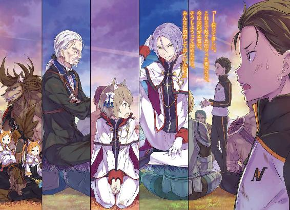
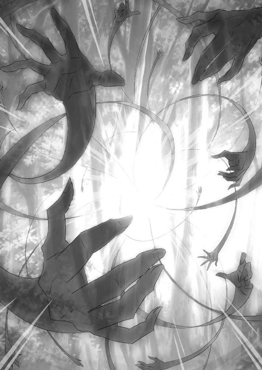

| Ｒｅ：ゼロから始める異世界生活 8<Ｒｅ：ゼロから始める異世界生活> (MF文庫J) | |
| 長月 達平 | |
| (2016) | |

Re:ゼロから始める異世界生活8
長月達平

本作品の全部または一部を無断で複製、転載、配信、送信したり、ホームページ上に転載したりすることを禁止します。また、本作品の内容を無断で改変、改ざん等を行うことも禁止します。
本作品購入時にご承諾いただいた規約により、有償・無償にかかわらず本作品を第三者に譲渡することはできません。
本作品を示すサムネイルなどのイメージ画像は、再ダウンロード時に予告なく変更される場合があります。
本作品の内容は、底本発行時の取材・執筆内容に基づきます。
本作品は縦書きでレイアウトされています。
また、ご覧になるリーディングシステムにより、表示の差が認められることがあります。
第一章 『怠惰一閃』
１
──猿でもできる魔女教狩り、と銘打たれたナツキ・スバルの作戦会議が始まる。
場所はリーファウス平原、時刻は夜明け前、参加者は約五十名の戦士・傭兵の集団。そんな顔ぶれの中心に立たされ、注目を浴びるスバルの心境は穏やかでない。
歴戦の古参兵や物々しい雰囲気の獣人傭兵など、文字通りスバルとは違う世界を生きてきた面々だ。こんな状況でもなければ、運命の交わる機会などなかったはずの人々。そんな自分とは縁遠い世界の住人たちが今、スバルを中心に車座を囲んでいる。
曲がりなりにも彼らに指示する立場になり、スバルの心に不安と弱気の風が吹き込む。だがそれと同じぐらい、強く込み上げる情熱と戦意もあるのだ。
「当たり前、だよな......」
眼前の光景は、スバルが『死に戻り』するたびに欲し、届かなかったはずのモノ。
それを自覚するほどに、スバルのちっぽけな覚悟と自尊心は痛みを訴えかけてくる。
もう二度と、自分をここまで導いてくれた多くのモノを裏切ってはならないと、誰よりも自分自身に強く戒めるように。
「────」
「スバル、急に黙り込んでどうかしただろうか」
胸に拳を当て、自戒するスバルの横顔に声がかけられる。集団の中でも一際目立つ、白い近衛騎士隊の制服を着た美丈夫──ユリウス・ユークリウスだ。
「よもや怖気づいたとは思わないが......事態は急を要する。いささかの猶予もない、とは君の言ではなかったかな？」
「わーぁってる。いちいち嫌味な言い方すんな。こういうのは出だしの一言目が大事だから、そこがちょっと詰まっただけだ」
「それこそ無用な気遣いだよ。大勢を前にした君の振る舞いに問題があるのはすでに知れ渡っている。気取らず、自然体で臨むといい」
「お・ま・え・な......！」
「がははは！ ユリウスも言うやないか！ こら、兄ちゃんも形無しやなぁ！」
「ぐぬ......っ」
最悪の黒歴史を引き合いに出され、スバルの額に青筋が浮かぶ。だが、そのやり取りに獣人傭兵団『鉄の牙』を率いるリカードが笑うと、討伐隊の騎士たちにも同情の色が広がる。どうやら思った以上に、スバルが王城で無様を晒した出来事は知られているらしい。
「とんだ生き恥を晒した......っ」
「はーいはい、恥ずかしがるのはそこまで！ その生き恥を生きたまんま拭き取るために頑張らなきゃいけにゃいのが、今のスバルきゅんのお役目ってもんでしょーが。ユリウスも、発破かけたい気持ちはわかるけど言い方考えにゃよ」
「どうやら誤解があるようだよ、フェリス。私にそのような意図はない。無論、結果的に彼の舌の滑りが良くなったのであれば幸いなことではあるがね」
「回りくどい性格......」
悪びれないユリウスの返答に、フェリスは心底面倒そうな顔で嘆息する。
その反応を見て、スバルにもようやくユリウスの言動の狙いがわかった。わかった上で、スバルの感想はフェリスと同じだが。
「──交歓されるのは大いに結構。とはいえ、優先すべきは魔女教への対策でしょう。そろそろ本題の方に入るべきかと」
と、脱線しかけた話を本筋に戻すのは、鋭い佇まいでいるヴィルヘルムだ。
スバルが同行者の中で、最も心情的にも戦力的にも期待している剣鬼。長年の宿敵であった白鯨を討ち、それに協力したスバルに力を貸してくれる忠義の人物だ。
彼ら主力に加えて、白鯨討伐隊の生き残りに『鉄の牙』の増援──この約五十名に上る面子こそが、魔女教に対抗する『対魔女連合』の総力となる。
「とりま、ヴィルヘルムさんからの要請もあったし、時間ももったいないんで本題に入ろう。題して『猿でもできる魔女教狩り』講座だが......内容自体はシンプルなもんだ。何事も、単純な方が効果は強かったりするもんだしな」
「道理です。して、方策は？」
「ぶっちゃければ──先制攻撃で一気に大将首ごと勝利をもぎ取る、かな」
「────」
スバルの結論に、集団は微かな驚きで包まれた。
大胆不敵、まさにその言葉通りの発言だ。この場合の大将首とは、魔女教を率いる大罪司教に他ならない。
「確かに、単純な話や。実際、成功したら魔女教にとってこれ以上ない打撃やろな」
動揺に近いどよめきが広がる中、最初に感心する声を上げたのはリカードだ。巨軀の犬人族は牙を見せるように笑い、その鋭い犬歯に指で触れながら、
「せやけど、あくまで成功したらぁの話や。大口叩くんだけやったら誰でもできる。そのまんまやったらたぁだの皮算用やぞ」
早々と理解を示したリカードだが、シビアに釘を刺すことも忘れない。しかし、そんな彼の追及にスバルは自分の胸をどんと叩いた。
「当然、策はある。鯨退治に釣り針なしで挑むほど無鉄砲じゃないのは証明したろ？」
「そこは信用しとるわ。やぁから、早ぅ根拠が聞きたいっちゅー話やないか」
自信ありげなスバルに、リカードは牙を鳴らして話の先を促す。周りの仲間も彼と同じ意見らしく、揃ってスバルの建策に期待を寄せているのがわかった。
「いいか、順番に説明するぞ。まず、エミリアのいるメイザース領に魔女教が迫ってる。これは諸々の背景事情から確定してることだ。いいよな？」
「全ての前提条件だ。同意しよう。実際、メイザース領に魔女教絡みの異変が起きることは予想されていたことでもある。白鯨の出現と合わせ、偶然では片付けられない」
「魔女教は白鯨を操って『霧』で街道を封鎖、メイザース領を孤立させて襲撃......ってことかにゃ？ 魔女教も本気みたい。ま、あの連中の教義からしたら当たり前かもネ」
スバルの確認に、ユリウスとフェリスの二人が補足を入れる。
未だ、全貌のわからない魔女教ではあるが、狂信者たちの不透明な活動の裏にはハーフエルフへの一貫した害意がある。今回のメイザース領への襲撃も、王選への参加を表明したエミリアの出自を彼らが知ったことが原因だろう。
その無分別な残酷さの結果が村人の虐殺だ。それが本気で度し難いとスバルは思う。
「あいつら、魔女教の目的はエミリアの命だ。けど、周りの人間には手を出さないかっていうとそんなことはない。奴らは見境なく、女子供も容赦なく殺す」
「その点も疑惑の余地はない。業腹なことだが、ね」
スバルの怒りに首肯して、ユリウスは驚く素振りもなく義憤を瞳に宿す。魔女教の悪行はこの世界では常識の一部、そういうことだろう。
「俺はエミリアも、屋敷の人間も、もちろん村の人たちも全員助けたい。だからみんなで領地に押し掛けて、そのまま屋敷で籠城戦ってのも考えたんだが......」
「神出鬼没の魔女教を相手に、期日のない籠城戦は下策でしょうな」
「なんで却下です」
籠城戦の肝はひとえに、守勢を維持することで勝利する目があるかどうかにかかっている。増援の当てもないスバルたちの採択すべき手ではない。
それに現状戦力での防衛戦は、スバルの持つ唯一の強みを捨てるに等しい愚行だ。
『死に戻り』で得た情報は、展開が大きく変われば一瞬で無価値になりかねない。武装した集団が大挙して屋敷に乗り込めば、さしものペテルギウスも方針を見直すだろう。そうなれば襲撃方法の変更や、襲撃自体の中止すら考えられる。
故に、スバルの持てる『死に戻り』で得た優位を最大限に活用するなら──、
「──森に潜んでる魔女教に、こっちの動きが割れる前にかち込む。相手の先制攻撃の機会を生かしたまま、それを超える先制攻撃で叩き潰してやるんだ」
「意気込みは買うけど、その森にいる魔女教をどうやって見つけるの？ 四百年、世界中で尻尾を摑ませない連中の集まりにゃんだよ？ 一筋縄じゃいかないでしょ」
「あー、そこなんだが......早い話、白鯨の釣り方と一緒だ」
「にゃ......？」
急に雑になるスバルの説明に、フェリスがその丸い瞳をさらに丸くする。
「鯨寄せに俺の臭いが使えたろ？ あれと同じこと、魔女教にもできるんだよ、俺」
「────」
「いやー、体質って怖いよなぁ。ホント、困ったもんだぜ、はは」
「────」
「ははは......」
無言の空間にスバルの乾いた笑いだけが残り、居た堪れない空気が草原を支配する。
満を持して放たれたスバルの根拠に、周囲はどう反応したものかといった顔つきだ。
ただ、スバル自身、魔獣や魔女教徒を引きつける自分の体質に答えを持っておらず、彼らにうまく説明することができない。そういうものである、という認識だけがあり、それが使えるものだから使うだけだ。
いつかその実態が明らかになって、仮にそれが忌まわしい理由だったとしても、今はそれに頼るのが最善なのだから使うのだ。だから──、
「俺の今の話に説得力がないのは先刻承知だ」
沈黙する騎士たちを、獣人たちを見渡して、思いつくまま正直にスバルは呼びかける。
「わけわかんない話で、信じられないって反応になるのも当然だと思う。だけどさ」
「スバル殿」
「──信じてほしい。これまで散々馬鹿やった俺だけど、今は全部が本気だ。そうしようって決めたから、みんなに協力してほしいんだよ」
これまで何度も、スバルは周りに差し伸べられる手を拒絶し、踏み躙ってきた。そんな風に突っ張ってきて、本当に難しい場面に直面して初めて気付く。
成し遂げなければならない物事を前にして、スバルはあまりに無力で無知だった。スバル一人では手も足も出ない。誰かの、みんなの助けが必要なのだ。
「下げる頭、一個しかないからこれしか下げられねぇ。けど、この頭で足りるなら何度だって下げるから、お願いします。俺に力、貸してください」
「────」
その場で頭を下げて、スバルは全員に見えるように懇願する。
周囲はそのスバルの行いに沈黙で答え、平原には風の通り抜ける音だけがある。そのまま沈黙が数秒、最初に前に出たのは『鉄の牙』副団長でもある、子猫人のティビーだ。
彼はモノクルの位置を正しながら、可愛らしい顔でスバルを真っ直ぐ見て、
「言い分は、わかりますです。でも、何の根拠もなく信じろと言われ......ぎゃんっ!?」
「なにシンパイしてんだかなー、ティビーは！」
厳しく追及しようとしたティビーだが、その発言は隣に立った姉のミミの一撃で中断させられた。背中を叩かれ、悶える弟の隣で姉は天真爛漫に笑い、
「このおにーさんはアレ！ あのでっかい魚やっつけんのにすごーがんばった！ あんだけがんばった人がミミたちだまそーとするわけないじゃん。だいじょびー！」
「お、お姉ちゃんは黙っててほしいです！ これは大事なお話で......」
「そーやっていつもこかざしい......ん？ こかざ？ こざか？ こざこざ......？」
「こ、小賢しいです？」
「そー、それ！ そればっかしてるとおっきくなれないぞー！」
涙目の弟にびしっと言って、それからミミは鼻白むティビーの前でスバルを指差す。
「ティビーはさっきのでっけー魚とたたかってないもんなー。だから、あのおにーさんが信じらんないかもだけど、そんならお姉ちゃんを信じればいーの！」
「────」
「お姉ちゃんがおにーさん信じてるから、ティビーはお姉ちゃんを信じてついでにおにーさんも信じるみたいな？ もしなんかあっても、ティビーはミミが守るしー」
そう言って、ミミは自信満々に胸を張った。その言葉にティビーは驚きながら、すぐに毒気を抜かれた顔で脱力する。そんな二人の様子に、思わず周りも破顔してしまった。
思わぬ笑い声が溢れる中、ミミは不思議そうな顔で首を傾げ、
「どーしたの？」
「おうおう、気にせんでええわ。ってか、お前はそのまんまでええ。よぅ言うた」
大きな掌で、首のもげそうな勢いでミミの頭を撫で、リカードは目を細めた。
「気になることはなんぼでもある。せやけど、ここまできて兄ちゃんを疑うっちゅーんは違うやろな。その段はもうとっくに抜けてるゆぅ話や」
「────」
思わぬ言葉にスバルが目を剝く。と、そのリカードの言葉に追従するように、ヴィルヘルムがスバルの前に立った。
「スバル殿、男児が軽々しく頭を下げるものではありません。ましてや、頼み事をするのに相手の顔を見ないなど言語道断。──そうすれば、己で気付けたことでしょう」
厳粛に言って、剣鬼は顎をしゃくって周囲を見るようスバルに促す。それに従い、周りの人々を見渡して、スバルは自分に向けられる視線の、変わらぬ感情に気付く。
それはこの話し合いが始まったときから、一度として変化していないもので──。
「......あのさ、そんなに一人で勝手に神妙になられても困るんだよネ。別に誰も、スバルきゅんの話が噓だにゃんて疑ったりしてないしぃ」
白けた顔のフェリスが、自分の髪の毛に指を通しながらそう発言する。
それがこの場の総意であることは、否定の声が上がらないことが証明していた。ユリウスですら、スバルの視線に常の優美さを保ったまま顎を引く。
「それに、白鯨の戦いで決め手になったのはスバルきゅんの囮作戦。それに賭けたのはクルシュ様のご判断......つまり、スバルきゅんを疑うってことはクルシュ様を疑うってこと。そんなこと、フェリちゃんがするはずにゃいでしょーが」
「フェリスらしい物言いですが、ようはスバル殿の行動は信を勝ち取ったというだけのことです。それはあの戦いに参じた全員が、しかと目にした事実」
「ちょ、ちょ、ヴィル爺!?」
「無論、それは私も同じことです」
フェリスが慌てた様子で声を裏返らせるが、剣鬼は嚙みついてくる彼に取り合わず、ただスバルに力強く頷きかけるのみだ。
その計らいと気遣いに、スバルは自分自身の空回りを自覚し、頰が熱くなる。
「俺、だっせぇ......空気読めてないのは変わらずってことかよ」
「空気は読むものではなく、吸うものだと思うが？」
「うるせぇな！ 知ってるよ！ 読めない奴ほどそれに拘ってるってこともな！」
ユリウスの指摘に声を荒げ、スバルは持て余す感情を強引に振り払う。
またしても不必要な恥を搔いた。その代価は、決して悪くないものだったが。
「それが、スバル殿がやり遂げた結果から生じた信頼ですよ」
大事な根拠を明かせないスバルを、それでも彼らが信じるに足るだけの実績。
レムがスバルをどうしたって信じてくれたように、今の彼らもスバルの言葉の内容に戸惑いこそすれ、その真意を疑うようなことはしない。
『死に戻り』を繰り返したスバルにとって、失われた世界の情報を他者と共有するための正しくあるべき方法──それが今、目の前に確かに繫がった気がした。
２
「べ、別に泣いてねぇし！ これはただ、なんかこれまでの苦労とか悔しい気持ちとかが報われたような気がして、ぼんやりと目からタンパク質を含んだアルカリ性の水が垂れ流しになっただけなんだから！ 勘違いしないでよねっ！」
──と、彼らとのやり取りの最後にスバルが照れ隠ししたのは別の話であるが、ともあれ内心の複雑な感情を誤魔化し、スバルは本題に入るべく顔を上げた。
「とにかく、みんなが信じてくれるってんなら話は早い。そんなわけで、魔女教にも魔獣にも対応可能な体臭が俺の売りです。これで魔女教を誘き寄せます」
「そして、誘われて出てきた一団を一網打尽か。机上の空論に終わらなければ名案なのだとは思うが、実際のところ勝算はどの程度と見込んでいる？」
「勝算？」
「奴らが君の存在を察知して、実際に姿を現す可能性さ」
ここまで、作戦の現実性に口出ししてこなかったユリウスが初めて疑問を口にする。
──白鯨戦に参加した討伐隊の面々に、今さらスバルの囮特性の説明は不要だろう。
だが、援軍として加わったユリウスらは実際にその効力を見たわけではない。彼らもまた命を懸ける以上、スバルの囮力がどれほどのものなのか知りたいのは当然のことだ。
「作戦の性質上、そこが曖昧では話にならない。どうだい？」
「奴らが俺に引っかかる可能性は、百パーセントだ。絶対に引っかかる」
「それは、大きく出るものだ」
「でっかく出るさ。あいつらはそういう奴らで、俺がそういう存在だからな」
説明になっていない説明、根拠になっていない根拠をユリウスに叩きつける。
自信だけは誰よりもある。『死に戻り』を経た事実、それだけは絶対に揺らぐものではない。それは絶対にして、唯一のアドバンテージだ。
「君は......魔女教とは以前にも因縁があったという話だったね」
「ああ。最悪の思い出がな。二度と、同じ真似はやらせねぇ」
厳密には、その『因縁』はこれから訪れる未来の話だ。
それはスバルたちの行動が変化を起こさない限り、必ず実現する最悪の未来──それを否定し、運命を打破する。そのために今、ここにいる。
「──なるほど。いいさ。君の存在を利用して奴らを誘き出す、だったね」
「......案外、あっさり納得するんだな」
「元々、君の方針に逆らうつもりはないよ。ただ、危険な作戦を主導する者として、相応しい覚悟があるか見たかっただけだ。及び腰なら代理を立てねばならないからね」
「言ってろ。この期に及んで、俺がビビり入ってる場合じゃねぇだろ」
性格の悪いユリウスの確認に、スバルは鼻を鳴らして微かな不安を追い払う。弱気が差し込めばユリウスの思惑通りだ。殊更に意識して、スバルは背筋を正した。
「断言する。魔女教は必ず、俺の前に姿を現す。大罪司教も例外じゃない。それが出てきたところを袋叩きにする。ってな感じに、流れはシンプルな作戦だ」
「聞いてる分には確かに単純かも。......それにしても、スバルきゅんってほとほと自分を囮にするのが好きだよネ。今回といい、白鯨といい」
「俺が毎回、そんな感じで乗り切ってるみたいに言うな。たまたま、前回と今回とそういう状況が連続しただけだ。別に毎回そうってわけじゃ......」
古くは盗品蔵でエルザ相手に挑発戦闘、続いて魔獣の森でのウルガルム誘蛾灯。それが済むと白鯨戦で釣り餌になり、次なる魔女教相手にも着々と囮作戦を企てて──、
「あれ!? ホントに毎回、囮作戦やってる!?」
「では、実戦経験と実績は豊富というわけだ。今回も奮戦に期待させてもらおう」
「やるけど......！ やるけどな......！」
ユリウスの言葉に憤慨しつつ、自分の意見だけに引っ込めることもできずに唸る。
「そんなこんなで、俺が囮になるのを念頭に入れてこっからは検討したい。まず、魔女教は屋敷と村周辺の森に隠れてる。これは他に適所がない以上、ほぼ確だ」
「別の拠点を持つ可能性......それは『霧』が塞いでいるわけだ」
「わざわざ『霧』でメイザース領を他と切り離したんだ。必然、奴らも同じ領内に潜んでるってことになる。退路を断ったのが連中の裏目に出たな」
この点、説明に困らず済むのは白鯨の説得力だ。魔女教が白鯨を従えていた以上、魔獣の出現は魔女教の目的に必要だったためと考えるのが自然である。
白鯨が討伐された今回に限り、その魔女教の狙いは機能していないが──、
「白鯨の出現と討伐がほとんど同時刻。真相が奴らに伝わる頃には俺らの剣が届く」
「それも含めて、時間との戦いですな。森に潜む奴輩の首に切っ先が届くのであれば、あとは正しく地力の争いとなりましょう。微力ながら私と討伐隊、そこに『鉄の牙』やユリウス殿が加われば負けるとは思いません」
「そゆこと、です」
彼我の戦力を冷静に比較して、スバルはヴィルヘルムの考えを肯定する。
ペテルギウスの率いる魔女教徒、その戦力は決して侮れるものではない。しかし、スバルの率いる援軍は白鯨戦を越えた猛者揃い。加えてペテルギウス自身、手に負えないほど強力な戦闘力を持つわけではない。
接近戦ならスバルでも相手できる。ヴィルヘルムなら一撃で首を刎ねられるはずだ。
つまり、あとはどれだけ優位な状況を用意し、決戦に臨めるかで勝負が決まる。
「そんでもって、その点で奇襲上等の状況が作れる俺たちは圧倒的に有利......！」
なにせ、ペテルギウスたちは自分たちが横殴りにされることに気付いていない。
魔女教徒は常に加害者だ。理不尽と不条理の代名詞である魔女教。彼らは自分たちが誰かに脅かされるなどと、考えたこともないに違いない。
──その思い上がりを、ぶち抜いてやろう。
「今までは何もかもうまくやってきたかもしれねぇ。......でも、今回はそうさせない」
「────」
スバルの言霊に力が宿り、それに耳を傾ける全員の表情が引き締まる。
彼らもまた、理解したのだ。この先の自分たちの戦いが、魔女教と呼ばれる邪悪な存在に対して、これまで不可能だった一矢報いる一撃になり得るのだと。
「メイザース領に入って、森に潜伏する魔女教徒を俺の存在で燻り出す。でも、大罪司教は狡猾だ。配下の人間は複数の、十個の集団に分散して配置されてる」
「それは、どこで？」
「前に『怠惰』と出くわしたときにな。部下のことを『指先』って呼んで、右中指だの左薬指だの、そんな名前で区別してた。手足の区別まではしてなかったから、敵が二十本のグループって心配はしなくて済みそうだぜ」
ペテルギウスは配下の集団を指の部位で区別していた。悠長に奴の指の本数を確かめたわけではないが、さすがに指の本数は人間と同じ十本だったはずだ。そして、神経質なあの狂人であれば、指の本数とグループ分けの数を合わせていると考えられる。
ただ、そのスバルの答えに討伐隊にどよめきが生まれた。彼らの反応にスバルは眉を上げるが、次なるユリウスの言葉でその理由に納得する。
「スバル、君が以前、因縁があった相手というのは大罪司教のことなのか？ それも、その『怠惰』が今回の襲撃にも加担しているのだと」
「──悪い。そうだ、そこが説明不足だった。この先、俺たちのぶつかる大罪司教は『怠惰』の野郎だ。俺の因縁の相手で、この世で一番嫌いな面の持ち主だよ」
「ふむ。ちなみに、二番目は私の顔ということになるのだろうか」
「自惚れんな。勝手に俺の中で大きい存在になってんじゃねぇよ」
驚嘆を隠すように冗句を言ったユリウスに、スバルは目を細めて反論する。
嫌いな顔ランキングの一位はペテルギウス、二位はスバル自身だ。ユリウスもいい線いっているが、その一位と二位の座は多少のことでは揺らがない。
「野郎には辛酸舐めさせられた。けど、おかげで俺の体臭が通用することと、『指先』って呼んで部下を分散してるのは確実だ」
「なるほどネ、それで自信満々にゃんだ。......因縁のこと、聞かない方が良さげ？」
「......ああ、そうだな。そうしてくれ。必要なことは話すけどな」
「聞いても胸が悪くなりそうなだけだし、リョーカイ」
魔女教を語るスバルの形相に、消えない怒りを見たフェリスはどこか同情的だ。
ひょっとすると、フェリスの中ではスバルの体質と過去の因縁が陰惨に結び付いたのかもしれない。それは誤った理解だが、あえて訂正はしなかった。
「それと、攻撃案に水を差すの覚悟で一応、防御案の保険もかけてある。白鯨討伐の出発前に、アナスタシアさんとラッセルさんの二人に頼み込んでおいた」
「お嬢に頼んで保険？ なんぞ、性格悪い企てしよったんか？」
「普通の頼み事だよ！ 雇い主にどんな印象持ってんだ！」
本気で疑わしげな顔のリカードを怒鳴りつける。
「実は二人に頼んで街道近くの村とかにお触れを出してもらったんだ。──近くにいる行商人、自前の竜車を持ってる連中をまとめて足として雇いたい。雇い主はメイザース辺境伯で、竜車の積み荷は言い値で買い取るって内容でな」
「......ははぁ。そらまぁ、ずいぶんと張り込んだやないか」
「懐に痛いのは違いねぇけど、領民の命を守るために必要な出費だ。ロズワールの野郎、今回も肝心な場面にいないとかふざけてやがんだから、当然の判断だよ」
金に糸目を付けなければ、これで人手は集められるはずだ。出費はロズワール持ちだが、何度も言うように、領主としての役目を果たしていない彼が悪い。
ともあれ、以前の周回では不発に終わった避難計画──魔女教に襲われる前に、エミリアや村人たちを逃がすための準備も事前に根回し済みだ。
「ただ、これはこれでちょっと問題があってな......なるたけ、魔女教連中にこっちの動きを察知されたくないんで、雇われ商人団とは途中で合流しときたい」
「奴らの油断に乗じる目論見であれば、確かに不必要な警戒を招くな。事情に精通するこの場の人員から、その商人団の案内に人数を割くべきだろう。ティビー」
「わかってるです。お嬢の手が入ってるなら、うちから出す方がいいと思うです。四人ほど後で使いに出すので、指示お願いするです」
「おお、話が早ぇ。助かる」
ユリウスとティビーの手早い判断に、スバルは胸を撫で下ろした。
「あとは俺らより一足先に、屋敷にクルシュさんところの使者が向かってる。同盟関係の話とか、この援軍についてエミリアに報せておかないと混乱するからな」
「あー、親書。そういえば書いてたよネ」
フェリスが手を打つが、正確には『書いてもらってた』だ。親書には同盟の件と、魔女教対策などを講じた内容を意訳してレムにしたためてもらった。
スバルの語学力では、そこまで複雑な文章はちょっとまだ無理だったのだ。
その親書が屋敷に届いていれば、不測の事態にも対応が利くはず。保険が機能して避難する羽目になったとしても、前もって準備することも可能だろう。
「たぶん、これで語り尽くした......はず。色々、道すがら詰めなきゃなんないことだらけの作戦だが、これがどんな意味を持つ戦いなのかはみんなもわかってくれたはずだ」
「魔女教に一泡吹かせる、絶好の機会っちゅーわけやな！」
スバルの総括に、毛むくじゃらの腕を組んだリカードが獰猛に笑う。猛々しい獣人の結論で、討伐隊の総員に戦意が漲った。
「......長く、これほど魔女教に対して優位に挑める戦いはなかったでしょう」
ヴィルヘルムが顎を引き、一際鋭い剣気を放ちながら言った。剣鬼にとって、白鯨を従えていた魔女教は憎き仇も同然だ。迸る闘志にはただただ力強さだけがある。
「宿願を果たした上でこのような機会を与えられ、血沸くなと言われる方が難しい」
「頼りにしてます、ヴィルヘルムさん」
「御意に」
短く、自身の剣としての在り方に没頭するヴィルヘルム。その姿勢にこれ以上ないほどの信頼感を抱き、スバルは五十名に上る仲間たちの顔をそれぞれ見た。
──この人たちのおかげで戦える。そう思った途端に、自然と言葉が溢れた。
「あれだけ、死ぬかと思うぐらいしんどい白鯨戦があった。実際、死んだ人もいるし、消えたまま帰ってこない人たちもいる」
決戦に挑んで、白鯨の脅威の前に潰えた命があった。
記憶と存在を抹消する『霧』によって、この世界から搔き消された名前があった。
「今、こうして俺たちがその人たちに代わってここにいられるのは、決定的な差とかはなかったと思う。しいて言えば運がマシだった。それぐらいの差だ」
多くの犠牲を生み出し、数々のモノと引き換えに討ち果たした『霧』の魔獣。
あるいは天災のように、魔獣の脅威はその矛先に私情を交えなかった。故に戦死者と生存者との間に、決定的な差は存在しなかったのだとスバルは思う。
「────」
全員に語りかけるスバルの言葉は、本人の意図せず出陣を前にした演説となった。
傾聴する姿勢の面々は、戦いを目前にした、ある種のお約束の訓示に心を引き締める。白鯨戦の前に、クルシュが全員に呼びかけたものと同じ訓示だ。
──戦いに慈悲はなく、命の貴賤はなく、故に誰もが懸命であれという訓示だ。
だが、受け止める側のそんな心情とお約束が酌めるほど、スバルは空気など読めない。
「紙一重が違えば死んでたかもしれない。そんな戦いを乗り越えたみんなが、今こうやってここにいるんだ。──なら、その紙一重、もう一枚越えようぜ」
「──っ!?」
「ここにいる誰も、死なないで完勝しよう。みんなで生きて帰ってこようぜ。白鯨なんて化け物に勝ったんだ。魔女教なんかに負けてやれねぇよ」
それは理想論であり、現実の見えていない青二才の妄言だった。
どれだけ優位な状況を作ろうと、戦いになれば犠牲は付き物だ。そんなことはスバルもわかっているし、スバル以上に彼らが実体験として知っている。
だから、彼らの中には『死』への覚悟とは別に、『死』への諦念が存在していた。
それが見えたから、その『死』の覚悟に真っ向からぶつかりたくなったのだ。
「誰も死なずにいこうぜ。あんな奴らのために死ぬのなんか、馬鹿げてる」
死ぬのは怖い。死ぬのはいつだって、耐え難い恐怖と喪失感が命を蹂躙するのだ。
誰にとってもそうだと思うし、そうでなくてはならないとも思う。『死に戻り』で誰よりスバルはそれを味わってきたから、誰にも味わわせたくない。
だからその全部、否定するために行動するのだ。
『猿でもできる魔女教狩り』講座の最後にとびきりの爆弾発言を放り込んで。
スバルは絶句する面々に手を上げると、全員の顔を見渡しながら口を開く。
男児は軽々しく頭など下げず、相手の顔を見て『頼み事』をしろと言われたから。
「それじゃ、いっちょ頼むわ。──頼って縋って、おんぶに抱っこでやらせてくれ」
３
「魔女教大罪司教の中でも、特に有名なのは『怠惰』と『強欲』の二人だろう」
地竜で隣り合って並走しながら、ユリウスはスバルにそう言った。
並走と一口に言っても、騎竜する二人の姿勢は雲泥の差だ。スバルはパトラッシュと名付けた黒竜に懸命に跨っているが、ユリウスは颯爽としたものである。
「だからお前は嫌な奴なんだよ......」
「聞き流して話を進めさせてもらうが、一人歩きしている大罪司教の名前の中でも、その二つの大罪は突出している。記録に残る頻度は『怠惰』が圧倒的だが、被害の大きさだけに限れば『強欲』の所業は目に余るな」
「頻度と被害の規模、ね。どっちも碌な話じゃなさそうだな......」
「違いない」
辛酸を舐めさせられているらしく、魔女教について語るユリウスは滅入った様子だ。
「君も知る『怠惰』だが、記録上、魔女教の活動の半分以上にこの人物の関与が疑われている。魔女教の活動範囲が世界中であることを考えれば、これは驚異的な行動力の為せる業と言えるだろう」
「世界的でしゃばり野郎ってことか」
「言い得て妙だ。──『怠惰』を自称するわりに勤勉な働き者なのだろう。その行動力を望まれない方向へ活かす精神性は度し難いものがあるが」
スバルの脳裏に、爛々と輝く瞳と頰骨の浮いた狂人の顔貌が浮かび上がる。
『怠惰』の大罪司教、ペテルギウス・ロマネコンティ──あの狂人はひたすら、自身が勤勉であることを訴え、他者にも同じだけの懸命さを強要していた。
『怠惰』などと名乗ってこそいたが、奴自身はその怠惰をひどく嫌悪している。その嫌悪感の表れこそが、魔女教における『怠惰』の異常な活動頻度なのだろうか。
「それに口惜しいことに、騎士団では魔女教のことはほとんど摑めていない。元々、平時に潜伏する奴らの存在を暴くことは困難だ。被害が発生し、検証して初めて奴らの関与が疑える。──その場合も、焼け野原に等しい惨状が残されるばかりだ」
「警察は事件が起きてからしか捜査できない、みたいなジレンマか。わかるけどさ......」
悔しげなユリウスの横顔に、さすがのスバルも悪態をつく気にはならない。騎士団の調査能力を責めるのもお門違いだ。悪いのは魔女教一択、その事実は動かないのだから。
「──ですが、此度はそうはなりませぬ」
その二人のやり取りに、別の方角から割り込んできたのはヴィルヘルムだ。
ユリウスとは反対側からスバルを挟み、愛竜に跨る剣鬼は真っ直ぐに前を見ている。彼は瞳に静かな戦意を湛えたまま、腰の宝剣におもむろに触れた。
「逃さず、頭を押さえる。白鯨と同じく、これまでの悪行の報いを浴びせましょう。それは王国民の総意にして、騎士団の悲願でもある」
「おっしゃる通りです。彼らは卑劣にも断罪の刃を逃れ続けてきた。しかし、今回は決して逃がしはしない。必ずや、届いてみせます」
ヴィルヘルムに首肯し、ユリウスも珍しく剝き出しの激情に表情を硬くする。
魔女教への敵愾心、それは何もスバルの専売特許ではない。長年、この世界で生きてきた彼らにとって、奴らの存在は日常的に寄り添う悪意であったのだ。
「ちなみに『怠惰』トークが盛り上がったけど、もう一つ有名な『強欲』ってのは？」
「『強欲』は『怠惰』と違って、記録に名前の残る被害は少ない。だが、その脅威は数少ない記録に残った被害だけで十分。特に有名なのは帝国の事件だろう」
「特に有名ってのはつまり、特にでかい被害って意味だよな？」
渋面のスバルの質問に、ユリウスは「ああ」と頷いた。
「城塞都市ガークラ──世界図の南方、ヴォラキア帝国でも最も堅固な防備で知られた国境沿いの大都市だ。数千の常備兵に、都市を取り囲む複数の防壁。まさに城塞都市の名に相応しい場所だったが......『強欲』に攻め落とされた。それも、たった一人に」
「落とした!? 都市を一人で!?」
一騎当千どころの話ではない。規格外の事実を聞かされて、スバルの声が裏返る。
「兵は常に精強たれ──俗に『帝国主義』と呼ばれる考え方ですが、その精神が国土に息づく帝国では、一兵卒ですら修羅そのものです。そんな兵たちの守る城塞都市を、『強欲』を名乗る大罪司教は一人で陥落させた。ヴォラキアの英雄であった『八つ腕』のクルガンさえも、その戦いで討たれたという話です」
驚愕に口が開きっ放しのスバルに、ヴィルヘルムの説明が追い打ちをかける。
剣鬼は『強欲』に倒されたとされる英雄の名を口にして、その瞳に複雑な感情を浮かべた。その反応にスバルが気付くと、ヴィルヘルムは目をつむる。
「クルガンとは幾度か剣を交えた間柄でした。国家同士の戦争を回避するために、両国が代表に代理決闘をさせたことがありまして、そこで。──あれは良い使い手でした。八つある腕の六本まで斬り落とし、代わりに私は腹を串刺しにされた。互いに瀕死で痛み分け......決着はついぞつかず終いになってしまいましたが」
「さらっと壮絶な昔話が出てきた......！」
剣鬼の現役時代のエピソードは、正直かなりラノベ的で少年心が落ち着かない。
詳しくそのあたりを掘り下げたい気持ちはあるが、好敵手を討たれた事実を語るヴィルヘルムの古傷を抉る無神経さは、さすがのスバルにもなかった。
とはいえ、『強欲』単体にしても、その厄介さはスバルには気が重い話だ。
「『怠惰』に『強欲』......それに加えて『傲慢』と『色欲』と『憤怒』か。『暴食』が欠けたにしても、前途多難どころの話じゃねぇな」
「──すでに先を見据えておられるのですな」
「嫌々ですけどね。でも、出くわす可能性はだいぶ高いと思うんです」
『怠惰』との激突を目前にして、スバルはその先の未来に胸を痛める。避けられないペテルギウスとの決戦は、魔女教との決定的な確執の発生を意味するだろう。
魔女教がエミリアを敵視するのならば、他の大罪司教との激突も必ず訪れるはずだ。
「もうすでに『強欲』の話で十分お腹痛いけどな。助けてくれ」
「不確定な未来の話で心を乱されては言葉がない。──今はまだ、目の前の戦いに集中すべきだろう。他でもない、エミリア様のために」
「わぁーってるよ。作戦の本番も直前で、ちょっぴりナーバスになってるだけだ」
宥めてくるユリウスに舌打ちして、スバルは街道の正面に視線を向ける。遠く、東の空では夜が白み始め、薄暗い空の彼方に朝陽の頭が見え隠れしていた。
すでに魔女教討伐隊はメイザース領に入っている。騎獣を駆る一団の士気は高く、全員が意気軒昂たる勢いで平原を駆け抜けていた。彼らの様子にスバルの無茶な『頼み事』の悪い影響は見当たらず、そのことにはこっそりと安堵しておく。
ただ、あれは紛うことなくスバルの本音である。討伐隊には一人も欠けてほしくない。魔女教相手に犠牲者など、出るべきではないのだ。
そのためにスバルのできることなら、何でもやろうと覚悟している。
「つっても、肝心の作戦で囮になるぐらいが俺の限度だけどな......」
「何か言ったかな？」
「なんでもねぇよ！ 別働隊がちゃんと保険と合流できるか気になっただけだ！」
「ああ......心配ないだろう。あちらも自分たちの役割は承知しているはずだ。我々と彼らの足並みが合わなければ、作戦は破綻しかねない。君が不安に思う以上に、各々しっかりと自分の役割を自覚しているよ」
話題逸らしの方便に、思わぬ力強い返答があってスバルは答えに窮する。応じたユリウスは気にした風もなく、それがかえってスバルに自分の小ささを意識させた。
ただし、そのことを取り繕うより早く、正面に見える風景に変化が生じた。
「──見えてきたな」
「ああ」
景色の変化に目を留め、呟くユリウスにスバルも頷いた。
朝を迎える街道の彼方に、薄く見え始めたのは緑の木々──長い平原の終わりと、ロズワール邸やアーラム村を囲む大森林の入口が姿を現したのだ。
それは魔女教との総力戦と、憎らしい狂人と再び見える機を迎えることを意味する。
「────」
白鯨との戦いの前にもあった、胸の奥が締め付けられるような緊張感。何度味わっても心地良く思えることのないだろう痛みに、スバルは拳を鳩尾に押し当てた。
そして牙を剝き出し、弱気を追い払い、魂を鼓舞するように笑って、吐き出す。
「さあ、毎度のことだが、勝負しようぜ。──運命様上等だ」
４
「と、と、と......」
地に落ちた草葉の感触を靴裏に感じながら、足場の悪い道を慎重に踏破する。
泥濘や木の根を踏み、スバルが進むのは薄暗い森だ。頭上を見れば葉々の隙間から青い空と太陽が覗き、吹き抜ける風は湿り気を帯びている。生温い風は額に浮かぶ汗の冷たさを思い出させ、スバルは手の甲で汗を拭って大きく息を吐いた。
──今、スバルは森の中を孤立無援の状態で歩いている。
風に置き去りにされるスバルは、共に街道を抜けた仲間どころか、跨っていたパトラッシュすら連れていない。武器も持たず、無手で歩く姿はいかにも頼りなかった。
「パトラッシュは置いてきた。この戦いにはついてこられそうもないからな」
小さく笑い、そうこぼすスバルはわずかに息を切らしている。
もう結構な距離、この足場の悪い森を歩いてきた。細い木々の間を抜け、落ちた枝を踏み折り、苔だらけの坂道を転ばないように注意して上る。道ならぬ道は獣道と呼ぶのも躊躇われ、ひたすら純粋な悪路がスバルの道行きを阻んでいた。
こうしてこの森を歩くのは、スバルにとって三度目のことだ。
一度目も二度目も、腕に誰かを抱えて歩いていた。そのときよりずっと身軽なはずなのに、今の方がよっぽど足取りが重く感じられるのは何故だろうか。
「三回も繰り返してる、自分の馬鹿さ加減に呆れてるからかね。三度目は、悠々と手ぶらで帰りたいもんだ。......と」
呟き、毒々しい色のキノコを飛び越えたところで、ふいに空気が変わった。
白鯨やエルザと対峙したように、緊迫感に弾かれる感覚とは違う。今の空気はへばりつく不快感を伴い、スバルは意識していなかった汗の感触を無理やり実感させられた。
「きたな......こう、静かな部屋の隅っこに、ふとゴキブリを見つけたときの感覚だ」
黒い害虫と遭遇したとき、先に動いた方が『死ぬ』と確信できる謎の心理戦が発生することがままある。時間が無限に引き延ばされる、永遠を思わせる超感覚だ。
そのときのものに近い、端的に嫌な怖気が全身を這いずり回っている。
ふと目を凝らせば、右も左も似たような森の風景。だが、いつか見たことのあるような感覚をおぼえた。──否、本当に見知った景色なのだ。
「こんだけ道でもない道を歩いて毎回辿り着けんだ。俺の方向感覚というべきか山勘と言うべきか、研ぎ澄まされすぎてて軽く笑えるな」
あるいは邪悪に鼻が利くようになった、というべきだろうか。
対魔女教専用に鍛え上げられた猟犬──そう呼べば格好もつくのだろうが、犬は犬でもここまで全戦全敗の負け犬だ。その肩書きも、今回できっちり返上してやりたい。
「──お出迎えご苦労さん」
正面の薄闇に目を凝らし、スバルは労いの言葉を口にする。
無論、そこに額面通りの親しみなど欠片も込めていない。だが、声を掛けられた彼らにも、それを気にする人間性は微塵もない。今さらだが、彼らは何者なのだろうか。
「そのあたり、聞いても答えてくれねぇんだろうな、魔女教徒」
「────」
ざっと、スバルを取り囲んだのは闇に同化する黒装束を纏った複数の人影だ。
世界からはいつの間にか風の音が、虫の鳴き声が消失していた。彼らが登場する際の地味な徴候だ。その前兆を理解すると、突然の遭遇にも驚きがない。
あるのは場違いな安堵──狙い通り、彼らと出会えたことへの見当違いな安堵だけ。
「出てきてくれたとこ悪いが、詳しい話はお前らの頭に聞くよ。だから、邪魔するな」
「────」
「正直、わからないことだらけでいい気分じゃねぇけど、たぶん序列的には俺の方が上ってことなんだろ？ 頼むぜ」
そう言って、スバルは手振りでどこかに散るように彼らに指示する。
すると、黒装束たちはスバルに敬意を示すように頭を下げ、その姿勢のまま滑るように再び闇の中へ溶けていく。これも、想定した通りの反応だ。
複雑だが、彼ら魔女教徒はスバルに敵意を抱いていない。こちらから害意を示さない限り、あるいはペテルギウスの指示がない限り、スバルを襲おうとはしてこないのだ。
それがいったい、どのような事情があっての判断なのかは知りたくもないが。
「いっそ、荷物まとめて田舎に帰れ......なんて命令まで聞いてくれりゃ楽なのにな」
深々と嘆息し、そこまで都合よくはあるまいとスバルは肩を落とす。
ともあれ、目的地が近いことは明白だ。あたりは見覚えのある景色になり、魔女教の斥候と思しき面々とも遭遇した。あとは記憶にある通り、森を進んでいけばいい。
自分の息遣いと、土を踏む足音だけが鼓膜を支配している。まるで延々と終わらない闇の中を歩く錯覚すら味わうが、そんな錯覚はすぐに終わった。
「──ぉ」
目の前を塞ぐ木々が開けて、スバルの視界に断崖絶壁の岩場が飛び込んでくる。
高く切り立った岩壁が正面に広がり、森が巨大な爪痕でも刻まれたかのように唐突に途切れる。崖下にはいくつもの大岩が転がり、一際大きな岩塊の裏には魔女教の潜伏する洞窟が隠されている。中では悪意の集団が残酷な計画の準備を進めているはずだ。
ただ、今回はその洞窟の中に物申しに乗り込む必要はなさそうだった。
何故なら──、
「──お待ちしておりましたデス、寵愛の信徒よ」
両手を広げて、狂気と歓喜の世界に浸る法衣の男が出迎えてくれているからだ。
こけた頰に落ちくぼんだ眼窩、深緑の頭髪と土気色の肌は不健康な艶をしており、黒の法衣から伸びる手足は枯れ木のように細く弱々しい。年代は三十代半ばといった風情だが、全体的に生気の衰えた外見は五十代と言われても驚きではない。
ただ、爛々と光り輝く双眸だけが、圧倒的な狂気を宿してスバルを見つめている。
「ワタシは魔女教、大罪司教『怠惰』担当──ペテルギウス・ロマネコンティ、デス！」
伸ばした舌の先から涎を垂らし、狂人──ペテルギウスがケタケタと嗤いながら、スバルを歓迎するかのようにそう声高に名乗りを上げた。
５
深々と一礼し、哄笑する狂人に出迎えられ、スバルは自分の胸に手を当てる。
仇敵ペテルギウスを前に、スバルは自分がひどく落ち着いていることに気付いていた。
「不思議なもんだ......」
あれほど憎み、あれほど殺したいと呪い、全ての元凶であると憎悪したはずの敵だ。
おそらく自分の短い人生の中で、この男ほど憎んだ相手は存在しないだろう。
必ず、その首をこの手でへし折ってやるのだと息巻いていたはずだった。なのに、その悪魔のような凶相を前に、今のスバルが抱いたのは安堵だった。
「歓迎するのデスよ、寵愛を受けし愛し子！ 素晴らしい......あぁ、素晴らしいぃぃ！ その身に纏う愛のなんと深きことか！ その身を包む愛のなんと高きことか！ その身を抱く愛のなんと熱きことか！ 感謝デス！ 圧倒的な、感謝なのデス！」
そんな感慨を得るスバルの前で、ペテルギウスは早くも発狂している。髪を振り乱し、搔き毟る手の甲から血を滴らせ、狂人は感極まって激情を堪えられない。
一度目は恐怖で、二度目は敵意でその狂態を見ていた。そして三度目の今、スバルはようやく嫌悪という、人として当たり前の感情を抱いて狂人の前に立てている。
ペテルギウスの在り方は、決して常人とは相容れないものなのだと確信しながら。
「────」
思わず頰が引きつりかけて、スバルは大きく深呼吸する。そうして気を落ち着けると、ペテルギウスに向かって軽く手を上げ、「よう」と精一杯友好的に笑いかけた。
「思わぬ大歓迎に恐縮だよ。イマイチ、その寵愛ってのの実感に欠けるとこなんだが」
「無理もないことデス！ 多くの者にとって、始まりは突然なのデス。誰しも、ある日を境に自分が『愛されている』ことに気付く。そして一度気付いてしまえば、もうその愛を手放すことなどできないのデス。──そう、愛こそ全てなのデスから！」
話の取っ掛かりを求めたスバルに、ペテルギウスは嬉々としてそう語る。彼は血に染まる両腕を広げ、ただただ狂的に愛を謳ってみせる。ひどく歪で、真っ直ぐな愛を。
「愛に！ 与えられた愛に対し！ ワタシは、我々は、勤勉を以て応えなくてはならないのデス！ 故に試練、試練を与える！ この世界、この時、このワタシが、魔女の寵愛を受けたことに意味を見出すために！ 愛に、愛に愛に愛に愛に愛にぃぃぃッ！」
「怠惰じゃいられないんだな。その愛に誠実に報いるために、勤勉でなきゃ」
「その、通り──デス!!」
話の大枠を拾い、理解したふりをするスバルにペテルギウスが感激した顔で嗤う。
理解も賛同も以ての外。上辺だけで話を合わせるスバルの魂胆が見抜けない以上、それが中身のない妄言なのは間違いない。本当は今すぐ、話を終わらせてやりたかった。
「あー、えっと、俺はこれからどうすればいい？ あんたたちと合流......でいいのか？ 他にもなんか手続きとか、印鑑が必要な書類とかある？ 実印ないんで拇印でいい？」
だが、スバルは湧き上がる嫌悪感を嚙み殺して、ペテルギウスと向かい合う。
──少しでも会話を長引かせ、役立つ情報を狂人から引き出すために。
「ふ、む......その意思、その意見、その意向は重畳......デスが」
その打算的なスバルの歩み寄りに、ペテルギウスは魔女の香りを確かめるかのように鼻を鳴らした。そして恍惚の笑みを浮かべながら、狂人は両手を伸ばし、まだ健在の十本の指をスバルに見せつける。細い、枯れ枝のような指が震える。
「この場でワタシの『指先』に加わるには、アナタに与えられた寵愛は色濃すぎる......この芳醇な魔女の愛、いったいどれほどのモノなのデスかね。『憤怒』であればさぞや羨むこの寵愛......もしやアナタ、『傲慢』ではありませんデスかね!?」
「傲慢、って......」
「大罪司教の六つの席の内、『傲慢』のみが未だに空席なのデスよ！ 相応しき者が現れるまで、今代の大罪は揃うことがなかったのデスが......魔女因子はすでに次代の『傲慢』へと至っているはずなのデス。──アナタ、『福音』は受け取っているはずデスね？」
一歩、ペテルギウスとスバルの距離が縮まる。
首を九十度傾けたペテルギウスの問いかけに、スバルは当惑するしかない。
大罪司教の『傲慢』が空席、という情報は素直に朗報だ。が、代わりにその座はスバルのものではないのかと疑われてもいる。名乗るのは簡単だが、名乗っていいものなのか。名乗ったことでペテルギウスがどう反応するか、全く予想できないのが難点だ。
かといって、奴の語る『福音』とやらが何なのかも未知の問いかけだ。魔女教の間でだけ通用する隠語か、あるいは何らかの鎌かけなのか。前者であれば新入り魔女教徒に優しくないし、後者のような心理戦をこの狂人が仕掛けてくるだろうか。
「ええと、その、だな......」
下手に迂闊なことは言えず、さりとて無言でいることも怪しまれるだけだ。極限の緊張感の中、スバルは一度だけ強く目をつむった。
閉じた瞼の裏側に、スバルが守らなくてはならない顔がいくつも浮かび上がる。
──それだけで、覚悟は決まった。
「福音は置いといて、その『傲慢』だが......条件が性格の悪さってんじゃないなら、ちょっと心当たりがないんだよな。ただ、興味はあるんでもう少し詳しく聞かせてもらいたいんだ。大罪司教についてとか......あと、試練についてとか」
取っ掛かりの薄い『福音』の件は後回しに、スバルは狂人の発言に便乗する。不明瞭な点の多い大罪司教関連と、ペテルギウスが幾度も口にした試練について。
試練──その実態はおそらく、今回の襲撃計画そのものだ。その詳細を知ることができれば、あわよくば潜伏する『指先』の居場所が判明すれば情報収集は完璧だ。無論、突っ込んだ質問にペテルギウスが激昂する可能性はあるが、その警戒は今さらだった。
軽々しい口調と裏腹に、スバルは開戦の覚悟すら固めて問いを発した。それに対して狂人は、ゆっくりと自分の右手の指を口の中に突っ込んだ。
「──脳が、震、える」
奥歯が親指を嚙み潰し、鈍い音と共に鮮血がペテルギウスの口の端を流れ落ちる。
その掠れた呟きから震えが、先ほどまでの狂喜の一切が消え去っている。虚ろな眼差しはスバルの怖気を搔き立て、鼓動が速まった。心臓が高く弾み、胸骨が内側から叩かれて痛みすら感じる。──そんなスバルの前で、ペテルギウスは口から指を抜き、
「試練について......ええ、構わないのデス」
「────」
「街道の封鎖の情報が各地へ広まるのにも、おそらくまだ時間がかかるはずデス。試練の始まりも同様に──時間は、まだまだあるのデスから」
不穏そのものだった態度に反して、勉強熱心なスバルにペテルギウスの言葉はむしろ好意的だ。その反応に頰がひきつらないよう苦心して、スバルも笑みを浮かべる。
「へぇ......街道の封鎖、ね。それって、何か細工でも？」
「簡単なことデス。『霧』デスよ。それだけで、説明は十分かと思うのデスが」
「──ああ、十分だ」
手短なペテルギウスの答えに、スバルも短く応じる。
街道の封鎖と『霧』の関連性を示唆する発言、それは白鯨と魔女教との関係を裏付ける証言だ。加えて今のやり取りで、ペテルギウスの耳に白鯨が討伐された情報が届いていないことも確信できた。──奴らは、スバルたち討伐隊の存在に気付いていない。
「しかし、霧で街道を封鎖して、邪魔者抜きで試練ってわけだ。なかなか食えないやり方をするもんだな、ペテルギウスさん」
「ええ、試練は神聖にして不可侵なるものデス！ 如何なる苦境であろうと、万難を排して臨まなくては愛に対して不誠実というものデス！ そう、愛に！ 注がれた愛に！ 与えられた愛に！ 我々は、応えなくてはならないのデス！」
「うお！」
試練に関する発言とは別に、愛の持論に火が付くペテルギウス。のけ反り、目を剝き、舌を伸ばす狂人は一心不乱に天を睨み、見えない何かを求めて滂沱と涙を流す。
その狂的な反応にギョッとなるスバルを余所に、ペテルギウスは止まらない。
「全ては愛に、愛に殉じるのデス！ 存在そのものが不届きなる銀色の半魔に、己が命の罪深さを問い！ 罪業を背負うに足るか試練を！ そう、試されなくてはならないのデス！ 怠惰ではなく、勤勉であれるかどうか！ 誰より最初にワタシの手で、デス！」
「罪を問い、罪を背負えるか試す......それが試練？」
「そのための試練！ そのための大罪！ 大罪司教！ 故に試されなければならないのデス！ 試されなければ......魔女因子を取り込み、器に相応しく在れるかどうか──」
狂乱に支配されながら、ペテルギウスは己の法衣の中に腕を入れる。そして、まさぐる指先が引っ張り出したのは、背表紙の黒い小さな本だ。元の世界の辞典ほどの大きさだろうか。その本を器用に片手で開き、ペテルギウスは血走った目をページに走らせる。
「福音に記されたワタシの役目、それこそ為さなければならない愛の証！ アナタが『傲慢』であるのなら、ワタシのこの昂る想いが理解できるはずデス！ 我ら大罪を冠する咎人が一度に座を埋めることなど、それこそ数百年ぶりのことなのデスから!!」
「待ってくれ！ まだ『傲慢』と、魔女因子ってやつの話が......」
「──福音の、提示を」
「──っ」
狂乱が再び収まり、唐突に訪れる凪が波打つ感情を強引に抑え込む。その変化についていけず、詰め寄るペテルギウスにスバルは思わず下がってしまった。
そのスバルの反応に、ペテルギウスは熱狂の消えた瞳のまま、首を九十度傾け、
「福音の提示を。寵愛の、証を──」
言って、狂人は血に染まる右手をスバルへ差し出し、共犯者の証を求めてくる。無事な左手は愛おしげに本に触れており、その仕草と態度にスバルは理解した。
──あの本が、『福音』だ。
そしてその確信を肯定するように、ペテルギウスは福音書をスバルへ突き付けた。
「ワタシの福音書に、アナタの記述はないのデス。ならばアナタはいったい、何故にこの場所に現れ、訪れ、どういった幸いをワタシにもたらすのデスか？」
「ああ！ その本のタイトルが『福音』ね！ なるほどなるほど、わかりましたわかりました。いや、それならそうって言ってくれないと」
決定的な決裂を目前に、スバルは大仰に胸を撫で下ろしながら懐に手を入れた。当然、中には本の一冊どころか、紙切れ一枚持ってはいない。
「────」
そのスバルのパントマイムに、ペテルギウスの瞳孔が微かに細められた。狂気に満たされた双眸に、スバルの脳裏で破滅のカウントダウンが表示される。数字は異常な速度で進行し、遠からず破綻がやってくるだろう。
だから──、
「あっと、マズった。悪い悪い」
「なんデス？」
「俺の『福音』だけど、アレだ。──鍋敷きに使って汚れたから、ばっちくて捨てた」
──だから、ここが分水嶺だ。
これ以上の会話の引き延ばしは不可能と判断し、スバルは即座に会話を切り上げた。
そのスバルのふざけた答えを耳に入れた瞬間、ペテルギウスの表情が呆気に取られる。だが、狂人の脳内で発言はすぐに侮辱に変換され、形相は凶相へ変貌した。
「寵愛の証ッ！ 怠惰なる権能ッ！ 『見えざる手』ェェェ!!」
爬虫類じみた顔つきで絶叫し、狂人の影が爆発する。──否、爆発するように影が膨れ上がり、複数の黒い腕となって天を目指して伸びたのだ。
それは人体を容易く破壊する、常人には見ることのできない不可視の魔手。
掌は高く舞い上がり、首をもたげた蛇のようにスバルに狙いを定める。魔手の黒い影が鞭のようにしなり、急加速する先端が地上へと指先を向けた。
その黒い指先が届く──その直前、スバルも大きくその場で身を翻していた。
「前にも言ったぞ──見えてれば、避けられないほどじゃないってな！」
「なんデス──!?」
言ったのは以前の周回の話で、ペテルギウスにとっては事実無根の言い掛かりだ。しかし、狂人にスバルの発言を戯言と切り捨てる余裕はない。
都合七本の漆黒の掌が、スバルの四肢をもぎ取らんと殺到する。だが、スバルは足場の悪い岩場の上で、お世辞にも華麗とはいえない足取りでそれを飛んで避けた。
大きく後ろへ飛びずさり、正面のペテルギウスからわずかでも距離を取る。黒い掌の射程から逃れるために──そして、反撃の邪魔にならないように。
「アナタ、今、ワタシの『見えざる手』を──」
「俺の方に注目してる場合じゃねぇぜ？」
必殺の権能に対応され、ペテルギウスは口の端に泡を浮かべて声を上げようとする。それに先んじてスバルは狂人の背後を指差した。そこで、反撃の狼煙が上がる。
「わ──！」「は──!!」
重なり合う獣の遠吠えが、大気を鳴動させて破壊の衝撃波を大地に巻き起こす。
岩肌の地面がめくれ上がり、土埃が風に巻かれて噴き上がった。生じた地割れが蜘蛛の巣状の亀裂を大地に生み、断崖絶壁が抉られて崩落が発生する。
「なぁ──!?」
振り返るペテルギウスが驚愕の声を上げ、着地する獣人姉弟の合わせ技に目を剝く。
白いローブの裾をはためかせ、四肢を突いて咆哮したのはミミとティビーの姉弟だ。
二人はスバルと対峙するペテルギウスの背後に着地し、狂人を無視して切り立った崖に咆哮波を叩き込んでいた。結果、激しい衝撃波は岩壁を破砕し、爆ぜる岩塊が雪崩のように流れ落ちて、隠匿されていた魔女教の集会場を入口ごと押し潰した。
岩塊や土砂がうず高く積み上がり、天然の洞窟は即席の墓穴に早変わりだ。
「生き埋め上等だ。──てめぇらのやってきたこと、苦しんで悔やめ！」
中指を立て、獰猛に歯を剝いて罵声を叩きつけるスバル。
粉塵が舞い、崩落の衝撃が足下を地響きとなって伝う中、入口を叩き潰して埋め尽くされた魔女教徒の命運は語るまでもない。その惨状に、ペテルギウスは天を仰いだ。
「なんたる......なんたる、ことデスか......ッ！」
狂人は喉を震わせ、頭を搔き毟りながら血涙を流し始めた。乱暴な所作に髪が千切れ、頭皮からも流血しながらペテルギウスは激情に地団太を踏む。
「ワタシの指先を......こうも、無残に、無慈悲に、無秩序に、無作為に、無造作に、無意味に、殺して殺害して滅殺せしめるとは......あぁ、嗚呼！ 脳が、震えるるるるっ！」
「うひー、なんかおっかないなー、あのオッサン！」
「魔女教徒なんてみんなあんなものだと思うですよ、お姉ちゃん」
子どもの癇癪を悪質にしたようなペテルギウスの様子に、ミミとティビーの姉弟が薄気味悪そうな顔で感想を交換する。無論、この場に二人が乱入したのは偶然でも奇跡でもない。作戦通りの打ち合わせ通り、スバルのための援軍だ。
気配を消して同行していた二人が、スバルの合図に応じて魔女教のアジトの入口を塞いだ。これで敵はペテルギウス単体、圧倒的にスバルたちの優位だ。
「......あぁ、そう、デス、ね。──いい、デス」
しかし、ひとしきり涙を流し終わったところで、ペテルギウスは静かにそう呟いた。
狂人はゆっくりと、スバルたちの顔ぶれを順番に眺めて、穏やかに嗤う。嗤い──、
「いい、デス。いいのデス。──それで、いいのデス！ 嗚呼、いい！ いいデス！ デスデスデスデスデスデスデスデスデェェェッスゥゥゥッ!!」
「うひゃっ」
言葉の途中で気分が盛り上がり、声を裏返らせる狂人にミミが肩を跳ねさせる。
ひたすら薄ら寒い嫌悪感だけが込み上げる狂態を晒し、ペテルギウスは両手の指をいっぺんに口の中に突っ込んだ。そして、指の先端を順番に嚙み潰していく。
十本、全部の指先が潰れると、ペテルギウスはおびただしい量の血を流しながら、
「いいデス。わかったのデス！ やりましょう、やるとするのデス！ ワタシとアナタとどちらが寵愛に相応しいか、競い合うときなのデス！ 愛に、そう、愛にぃぃぃ！」
「......盛り上がってるとこ悪いんだけどよ」
爪先で地面を叩きながら、ミミたちを無視してスバルにだけ宣戦布告するペテルギウス。そんな狂人に、スバルは戦意とは程遠い顔つきで肩をすくめた。
「なんデスか!? 今！ まさに！ ワタシは！ 此度の試練に愛を以て臨み──！」
「──お前の相手は、別の人に任せてある」
血塗れの指を突き付け、なおも言い募ろうとするペテルギウスにスバルは言った。
その答えにペテルギウスが目を見開き、疑問の声を上げようとした瞬間──、
「ぢぁぁぁぁぁぁ──ッ!!」
頭上から放たれる裂帛の気合いに、ペテルギウスは凝然と顔を上げた。
その胴体を、袈裟斬りに落ちる刃が両断──剣鬼の斬撃が狂人を斬り捨てていた。
第二章 『──戦え』
１
──時間は、魔女教対策会議の終了直前へと巻き戻る。
「そうだ！ 肝心の話を忘れてた！」
と、スバルが手を打ったのは、スバルの『頼み事』発言が討伐隊に得も言われぬ雰囲気をもたらした直後──いざ、メイザース領へ出発、と意気込んだところだった。
説明不足はない、と豪語して即座に撤回するバツの悪さはあるものの、一番重要な部分を疎かにしてはならないとスバルは全員を呼び止めて、
「猿でもできる魔女教狩り作戦なんだが、本命の大罪司教......あの野郎のところに仕掛けるメンバーだけは厳選しておきたい」
「厳選？」
「ああ。大罪司教をやれるかどうかが、この作戦の成否を握るわけだしな。面子はベストメンバーを選んでおきたい。具体的にはヴィルヘルムさんと、『鉄の牙』から隠密能力に自信のある奴がいい。あ、大罪司教を直視しても大丈夫って条件付きだ」
そのスバルの条件に、車座を崩していた面々は一斉に眉を寄せる。彼らの表情の変化は当惑であり、憂慮であり、不安であり、隣の人の変な顔を真似ただけだったりと個々の差はあるが、総じて『疑念』の一言にまとめられることだろう。
それは当然の反応だ。スバルは説明するべく頭を搔きながら、
「えーっとな。さっきも言った通り、作戦自体は『俺で魔女教を釣る』ってシンプルなもんだ。それ自体は白鯨と同じやり方でいいんだが......さすがに、釣れた後の反応まで魔獣と一緒って期待するのは厳しいと思うわけよ」
「あー、そりゃそうだよネ。白鯨はスバルきゅんの臭いに我を失ってたけど、魔女教徒は魔獣と違ってそこまでグワーッとはならにゃいかぁ」
「グワーッとなられたらなられたで本気で俺って何よってなるからな......で、理想は俺が釣り餌だってばれた瞬間に不意打ちで仕留めること。大罪司教だけは確実に仕留めておかなきゃいけないし、それを重視した結果がさっきの条件ってわけだ」
フェリスの理解に首肯し、スバルは説明をそう結ぶ。すると、その提案に周囲の反応は芳しくなく、難色を示す顔が多い。とりわけ渋面になるのは牙を剝き出すリカードだ。
「待ち待ちぃ。したらなんや。ワイらは本チャンやとお払い箱かい。ここまで盛り上げといて、そんな殺生な話ないやろ。そらアカンぞ。ワイ、聞いてへん」
「だから今、話してんだって。それに、あくまで大罪司教のとこだけだ。『俺釣り』作戦は十ヶ所でやる必要がある。お前の出番だっていくらでもあるさ」
輪の中に割って入るリカードを、スバルはどうにか説得しようと言葉を尽くす。
「他の魔女教徒を舐めてかかるわけじゃねぇけど、大罪司教だけは話が別だ。あいつにだけは確実にメタ張っておきたいんだよ」
「万全を期す、というわけだ。その考えには賛同するが、人選の理由は？ 無論、ヴィルヘルム様に不満があるわけではないが」
ぶーたれるリカードへの説得に、今度はユリウスが口を挟む。ユリウスは瞑目するヴィルヘルムを横目に、自身の細い騎士剣に触れながらスバルを見た。
「最初に選択肢から外されるのは、いささか納得しかねるのでね」
「不満あるわけじゃないってわりに、不満たらたらって顔じゃねぇか......」
本命の大罪司教、その決戦から外される流れにユリウスは真っ向から反論してくる。そのことで意見のぶつかる二人の様子に、フェリスがスバルの肩を叩いた。
「あのネ、スバルきゅん。もし、まだユリウスにわだかまりがあるなら......」
「そうじゃねぇから勘繰るなよ。そこは俺の説明不足だから、悪かったけどな」
「そんな低俗な疑いは持っていないよ。その可能性が頭を過らなかったとまでは言わないが......君を、些細な拘りに固執して大局を見誤る人間などと見損ないたくない」
どこまで本音と思っていいのか、半端な指示はするなと釘を刺された気分だ。些細なことに拘って大局を見誤った過去を反省しつつ、スバルは指を立てる。
「大罪司教『怠惰』の魔法......魔法じゃねぇか。呪術でも精霊術でもねぇけど、とにかく奴には特殊な能力がある。それが大人数で押し掛けるのが嫌な理由の一つだ」
「......特殊な能力？ にゃにそれ、初耳」
「しいて言えば、目に見えない手を何本も伸ばす能力かな。例外を除いて本当に目に見えないし、喰らうと手足ぐらい簡単に千切られる。射程も、見える範囲ってレベルだ」
「はぁ......!?」
スバルの持ち出した突拍子もない理屈に、寝耳に水な様子でフェリスが驚く。ユリウスも眉間に皺を寄せ、大なり小なり驚きが討伐隊を支配した。
──ペテルギウスの操る『見えざる手』は、文字通り『目に見えない』脅威だ。
その悪夢のような力に、レムの体が無残に蹂躙された光景は忘れられない。そしてその脅威の威力は、大規模な乱戦の中でこそ縦横無尽に荒れ狂うことだろう。
「だから数は連れていけない。犠牲者が増えるだけだ」
「大真面目に言ってる......よネ。クルシュ様がいないから確かめられないけど」
「クルシュさんがいても俺の答えは同じだよ。その能力が『怠惰』攻略の壁だ」
本音はそればかりではないのだが、スバルはあえてそれだけだと断言する。それを受けて、最初に口を挟んだユリウスは思案げに目を伏せ、
「ちなみにだが、例外を除いて見えないと言ったね。その例外とは？」
「俺」
「なるほど。単純な話だ」
単純明快なスバルの答えに、ユリウスもまた端的な返答だけを残す。そのまま再びユリウスは思索に沈むが、その間に別のところで手が挙がった。
「わかたー！」
そう言って、元気いっぱいに挙手したのはミミだ。彼女は天真爛漫に笑いながら、すぐ隣のティビーの肩を摑んで大きく揺さぶりつつ、
「ほんじゃー、ミミとティビーがおにーさんについてくー！ んで、おじーさんと一緒！ これでサイキョー！ よくない？ いくない？」
「お姉ちゃんはまたいきなりですです......」
姉の奔放さに慣れ切った様子で、ティビーは反対する素振りもない。その立候補はありがたいが、条件と見合っているのか甚だ不安だ。
「安心してええぞ。ミミはワイを除けば、うちの連中でいっちゃん何でもこなすわ。伊達に副団長なんぞ任せとらんからなぁ」
「本当に信じていいのか？ 修羅場でうっかりくしゃみしそうな性格だぞ」
「それってスバルきゅんも人のこと言えないでしょ。......はぁ、仕方にゃい。フェリちゃんも一緒にいったげる。それなら、少しは気持ちが楽になるでしょ？」
「本気か？ そりゃ助かるけど、大丈夫なのか？ 正直、危ない橋だぞ」
「君がそれを言うのか......」
フェリスの宣言にスバルが驚くと、その受け答えにユリウスが目を丸くした。彼の反応にスバルは「はぁ？」と首をひねるが、それにユリウスは何も言わない。
そのまま、ユリウスはスバルを意に介さずフェリスに向かい合う。
「ヴィルヘルム様に、ミミとティビー。それから彼だ。君に任せる、友よ」
「はいはい。最初からクルシュ様に任されてるし、心配しなくても平気だってば」
「それでも、だよ」
「......はいはい。じゃ、ユリウスの分の心配も心の隅っこに置いといてあげる」
苦笑するフェリスと、真面目腐った顔で顎を引くユリウス。友人同士の気安さと、信頼感の同居したやり取りだ。それは正直、ちょっと羨ましい。
ともあれ、思索の結果、ユリウスも納得には至ったらしい。
「食い下がる気はなくしたのか？」
「その大罪司教の異能、目に見えるのが君だけというのなら仕方ない。ようは人数が増えてしまえば、避ける指示が飛ばせなくなるというわけだ」
「話が早くて助かるよ」
さすがに戦える人間は、戦術に対する理解が早い。
スバルにできる『見えざる手』対策は、スバル自身が魔手を回避することもそうだが、それ以上に魔手の動きを見切って、別の人間の回避誘導できるのが強みだ。
そしてそれは少数であるほど、作戦として正しく機能する。
スバルがペテルギウスとの決戦に少人数で臨みたいのは、『見えざる手』が多数を相手にするのに有利な異能である、という点以上にそれが理由だ。
「ってわけで、ヴィルヘルムさんには一番キツイとこに一緒にきてほしいんですが......」
ユリウスやリカード、他の面々からも反対意見が出なくなったところで、スバルは最後まで沈黙を守り続けているヴィルヘルムに話を振る。
ここまで肯定も否定もなかったヴィルヘルムは、その怖々とした確認に目を開けた。澄んだ青い瞳にスバルを映した剣鬼は、それまでの会議の一切に拘らず頷く。
「我が身は今、スバル殿の剣です。あなたの敵を、あなたの意思で私が斬る。──その道筋に覚悟を問うのは不要でしょう」
「────」
「存分に、その意を通すのにお使いください」
ただただ、研ぎ澄まされた信頼を預けられ、スバルは驚嘆を吞み込んで頷いた。
振り返ればじゃれ合う子猫姉弟と、肩をすくめるフェリスの姿もある。その背後ではユリウスやリカード、討伐隊の面々が重要な局面をスバルたちに任せようとしていた。
それを受け、スバルは今度こそ、不安はないと力強く頷いた。
「やっぱり、この戦い──俺たちの勝ちだな！」
２
「やったか!?」
思わず口走ってしまってから、スバルは大慌てで自分の口を手で塞ぐ。
場面は絶壁を前にした岩場の中心、時間は飛びかかるヴィルヘルムの斬撃が、ペテルギウスの細身を背後から斜めに斬り裂いたところだ。
肩から腰までを深々と撫で斬りにされ、致命的な深手に狂人の姿勢が大きく揺らぐ。
それでもペテルギウスは最後、その目をカッと見開いてスバルを睨みつけた。
「まさ──」
だが、狂人が最期に何を口走ろうとしたのかは永遠にわからない。
弧を描き、血を払いながら風を切る斬撃が横一線に走った。刹那、切断されたペテルギウスの首が血を噴水のようにぶちまけながら軽々と彼方へ吹っ飛ぶ。
目の前で人間の首が刎ねられる光景にスバルは絶句。しかし、頭部を失った肉体はなおも妄執に突き動かされるように、枯れ木のような腕をスバルへと伸ばそうとした。
「無粋の極み。──潔く、ここで散れ」
その死に体の悪足搔きを、剣鬼の刃は容赦なく断ち切る。
斬撃が両腕を肩から斬り飛ばし、返す刃が胴体を直撃、腰で胴と下半身が泣き別れになり、肉塊となった狂人は腸を暴きながら地面に転がった。
血の噴出と筋肉の痙攣もすぐに止まり、あとに残ったのは強烈な死の血臭だけだ。
もはや人としての尊厳などと語らうに値しない壮絶な死に様に、スバルの喉を嘔吐感が込み上げる。が、どうにかそれを表に吐き出すことだけは堪えて、
「お、終わった......よな？」
「これで終わってないなら、魔女の寵愛なんて戯言をフェリちゃんも信じるかもネ」
おずおずと死体を覗き込むスバルに、背後からやってきたフェリスが答えた。彼は腰の引けたスバルの隣で、ふんふんと躊躇なく屍を検分する。そして、
「当たり前だけど、完全に死んでまーす。王都最高の治癒術師が太鼓判押したげる」
「そう、か......」
原形を留めていない屍は、作り物のようでいっそ現実感に乏しい。フェリスの言葉の安堵感も手伝って、吐き気が遠のくのを感じながらスバルは森の方を見やる。
本命の大罪司教は目論見通りに片付いた。あとは森の、ペテルギウスの『指先』だ。
「他のみんなはうまく......無茶しないでくれてっかな」
「スバル殿の指示に逆らい、無断を働く兵たちではないかと。やむを得ず戦闘が発生したとしても、あちらにはリカード殿やユリウス殿もいます。万一のこともありますまい」
刎ねた首を確認し、戻ってきたヴィルヘルムが厳かに顎を引いた。その剣鬼の保証は心強い。心強いのだが、スバルの不安はなかなか払拭できるものではなかった。
不安の矛先は別働隊──道中、ペテルギウスに辿り着くまでの間に、スバルの存在に引かれて現れた魔女教徒に対処する面々の方を向いている。
森に分散するペテルギウスの配下は、全部で十グループになると目されている。
途中で遭遇した二つの『指先』には、拠点に戻るようにスバルが命じ、実際に立ち去る場面を確認済みだ。奴らの足取りは代表入りを逃した面子が追う手筈となっており、潜伏場所の把握──数で勝っていても、早まって仕掛けないよう厳命してある。
だが、向こうに発見された場合、交戦することは避けられないだろう。
「その場合のアクシデントが本当に怖い。俺の考えた作戦だし、絶対に穴が......魔女教って何考えてんのかわかんねぇし、意外と戦える奴が多いのも怖いんだよ......」
「はいはい、作戦の立案者が不安がらないの！ それにその話、ビビったスバルきゅんが何度も話すからいい加減うんざりだし」
此方が片付けば彼方が気になる。スバルの様子にフェリスは呆れた顔で嘆息した。
「そりゃ怖い気持ちはわかるけど、ユリウスたちなら戦いになっても問題にゃいって。ユリウスとまともに戦えるのなんて、うちでもヴィル爺ぐらいのものだろうし」
「......そうか。あいつ、そんな強いのか」
尽きない心配にフェリスのフォローが入るが、その内容にスバルの心中は複雑だ。
頼りになる味方という意味で、ユリウスが強いことは大歓迎──なのだが、未だに根深い苦手意識が、素直にユリウスへの評価を受け入れ難くしている。彼との一騎打ちの負傷は完治しているのに、癒えない幻痛は今でもスバルを苛んでいた。
「ホント、根深い......無意識かどうかは別にして、遠ざける気持ちはわかるけど」
「──？ なんだって？」
「別に。そもそも、心配ならユリウスたちの方がよっぽどしてるって言ったの！ フェリちゃんは今だって、この作戦は無謀だったって思ってるんだから」
と、葛藤するスバルをフェリスが眉を立てて睨みつける。スバルは彼の言葉に眉を顰め、戦場となった岩場に目をやりながら、
「......わかってるよ。でも、うまくいっただろ？」
「結果だけ見たら、でしょ。大罪司教に疑われたときなんか危機一髪だったじゃない。ぜーったいに紙一重だった。フェリちゃん、目の前で死に急がれるの大っ嫌い」
「死に急いだりなんかしてねぇよ。って言っても、説得力ねぇだろうけどさ」
フェリスの視線の厳しさに、スバルは言い訳を重ねることの無意味さを悟る。
──最後まで、この作戦の細部の詰めに拘っていたのが、実はこのフェリスだった。
スバルを囮にペテルギウスを誘き出す、『釣り』作戦自体には異論を挟まなかったフェリスだが、肝心要の詰めの部分の安全性には非常に拘った。
実際、作戦の大部分がスバルに依存した内容で、信頼度が低かったのは否めない。
誘き出される魔女教徒への対処に、本目標であるペテルギウスの発見・足止め・情報収集に至るまで、全てスバル一人によって行われたのだ。──どこか一ヶ所でも想定違いが発生すれば、スバルの『死』は免れない。フェリスはそれをひどく嫌がったのだ。
結局、作戦自体の有用性を覆す対案は生まれず、決行は止まらなかったが──。
「結果を見てるだけしかできない歯痒さ、スバルきゅんは知ってるくせに......」
恨み言のようなフェリスの言葉に覚えがある。それは半日近く前、白鯨戦の最中にフェリスの口から聞かされた、戦いにおける役割の受け止め方だ。
フェリスもスバルと同じく、戦場では決定打になり得ない立場だ。その上、騎士団に所属する彼にとって、その無力を痛感させられる機会はスバルの比ではあるまい。
投げられた最後の言葉には、そんな無力感を共有する相手に裏切られたような、寂寥感のような響きがあったようにも思われた。
「でも、ちょっと意外だったわ。お前は俺のこと嫌ってると思ってたのに」
「好き嫌いで治療する相手を選んだりしない。馬鹿にしないで」
「嫌いって部分を否定してほしかったな！」
わかっていた評価ではあるが、当人に肯定されるとまた受け取り方が変わる。思わず苦笑するスバルに、フェリスは不機嫌な顔で腰の短剣──彼の唯一の武装に触った。
「好き嫌いに、生かす価値のあるなしなんて関係ない。フェリちゃんの力は......これはそうやってあるから、認めてもらった力なの」
「フェリス？」
「それに、白鯨の戦いでも大勢死んだんだよ。霧に消されたり、押し潰されたり。死なれちゃったらフェリちゃんにも......私にも治せない」
普段の余裕の消えた声で、フェリスの指は短剣の柄に刻まれたレリーフを弄っている。それは獅子の家紋──彼の主である、クルシュの持つ宝剣と同じ紋章だ。
フェリスは指先の感触に勇気を、何より覚悟を分けられた顔でスバルを睨んだ。
「この戦いで誰も死なせたくないの、自分だけなんて思い上がらないで」
「......それも、わかってるつもりだよ」
わかっているつもりだが、本当にわかったつもりなだけなのかもしれない。
フェリスの視線を真っ向から受け、非を認めつつもスバルはやり方を変えることはできない。どれだけフェリスに抗議されても、今回の作戦の決行を曲げなかったように。
命懸けのチップが自分の命でいいのなら、きっとスバルは最初にそれを賭けるから。
「洞窟の確認、済みましたです。完全に岩の下敷きで、中の人たちはお気の毒ですです」
「おー、かんぺきー！ ぺきぺきー！ 全部どっかーんってなってたー！」
会話が途切れたところへ、埋もれた洞窟を確かめていた獣人姉弟が戻ってくる。その二人を出迎えて、スバルは改めてペテルギウスの亡骸に歩み寄った。
不安要素を一掃し、危険は全て排除された。緊迫感が抜け、頰の強張りが解ける。
「想定外からの奇襲で一気に片付ける。──正直、反則技には違いねぇけど、悪く思うなよ。お前の方がよっぽど、よっぽど最悪だったんだからな」
すでに死体になった相手に対して、勝利宣言など虚しいだけでしかない。ましてや不意打ちの暗殺紛いで得た勝利、虚しさに卑しさを追加してもいいぐらいだ。
それでも言わずにおれなかったのは、ようやくスバルの中に実感が芽生えたからだ。
ペテルギウス打倒──世界を何度もやり直し、成し遂げるために挑んだ結果に。
「ヴィルヘルムさん、ありがとうございました。あと、無理言ってすいません」
「無理、ですかな？」
「不意打ちで背後から斬りかかるとか、最悪でしょ？」
スバルの指摘にヴィルヘルムの表情が微かに曇った。奇襲どころか騙し討ちに加担してもらったのだ。騎士ならば思うところがあるだろう。
だが、ヴィルヘルムはすぐにその表情の強張りを笑みに崩した。
「すでに廃れつつある騎士道ですよ。スバル殿の気になさることではありません」
「けど、付き合ってくれるのに甘えて騙し討ちに協力してもらったのは俺ですんで」
相手が外道であり、正々堂々が通用しない相手であったことは事実だ。それでも、卑劣な企てに他者の協力を求めたことは、なかなか良心にくるものがあった。
「ま、フェリちゃんは気にしないけどネ。ユリウスなら嫌がるかも......それでも、吞み込む物分かりの良さはあると思うよ」
「だからあいつには言いたくなかったんだよ。お前の反応は、まぁ想像通りだけど」
「騎士道に殉じて死なれるより、多少卑怯でも味方が無事な方がマシじゃにゃい。スバルきゅんとユリウスのどっちが正しいかなんて、見方次第でしょ」
そう割り切ってくれるフェリスには救われる。ヴィルヘルムは言うに及ばず、ミミに至っては「それって何か問題あるの？」的に首を傾げていた。さすが傭兵である。
そして、さすが傭兵ついでに特筆すべきはティビーだ。周囲の見分を終えた小さな猫人は、ペテルギウスの亡骸に歩み寄ったかと思うと、その懐をごそごそと漁り始めた。
その死体漁りに躊躇のない姿勢に、スバルは思わずギョッとしてしまう。
「うーん、大した物は持ち歩いてないみたいですです」
「あ、当たり前のように死体の懐まさぐるんだな、おチビちゃん」
「おチビではなく、ティビーです。せっかくなので、持ち物の検査してるだけです」
慣れた手つきで血塗れの法衣の奥を探り、ティビーはしれっと戦利品を検める。ミミもそうだが、この傭兵姉弟は見た目に反してシビアでマイペースな性格だ。
法衣の中は意外と深く、中身を取り出すティビーの手は案外忙しい。といっても、取り出されるのはありふれたものばかりだ。
「携帯食料にラグマイト鉱石......あっと、お財布も持ってたですよ」
「意外と小市民的なアイテム欄でビックリだな。しかし、傭兵にとって略奪は文化か」
「戦利品を漁るのは普通に権利だと思うですよ。......これは、なんです？」
傭兵稼業らしい発言をしつつ、おおよそ物色を終えたティビーが最後に引っ張り出したのは黒い本だった。それを見て、スバルは「あ」と驚く。
「それ、たぶんペテルギウスが『福音』って呼んでた本だぞ」
「みゅっ！ これが福音ですです!? うわぁ、触っちゃったです！」
スバルの指摘にティビーは本を投げ出して飛びずさる。その慌てふためく姿はいかにも小動物的で、スバルは苦笑しながら本を拾い上げた。
「持ち主が気味悪いのは同意するけど、本は乱暴にするなよ。怪しい本でも、だ」
「さ、触らないですぐ手放した方がいいと思うですよ。触ってると、頭がおかしくなるかもしれないです......！ も、燃やした方がいいかも......」
「そこまでビビるのに死体は漁るのか......中身は、どうも読めそうにないな」
ティビーの心配を余所に、パラパラと中身をチラ見してみる。だが、残念なことに記述されている文字は判別不能だ。イ文字ともロ文字とも、ハ文字ともつかない謎言語である。若干、達筆すぎる平仮名にも見えるが、達筆すぎて結局読めない。おまけに本の後半部分には白紙のページが続いていて、落丁本と言われても不思議はなかった。
「......で、読めなかったし、不用意だったのは認めるから二人とも落ち着いてくれ」
「──これは失礼を」
「スバルきゅんが悪い」
無警戒に本を広げたスバルの前で、ヴィルヘルムとフェリスが戦闘態勢を解く。
一瞬だが、本気の剣気と敵意だった。そのことに肝を冷やしつつ、スバルは手の中の本を二人に示して、何事だったのかと首をひねる。
「この本、二人は心当たりとかあるのか？」
「ちょっと！ 迂闊にこっち向けにゃい！ スバルきゅんも、『福音』に目を通すとか馬鹿な真似しないで！ ホントになんにも知らないんだから！」
持ち上げた本に対して、フェリスは烈火の如く怒りながら目を背ける。驚くべきことにヴィルヘルムも、その本に拒否反応を示すように顔を背けていた。
「ティビーの反応もだけど、これって本気で危ない本？」
辞典程度の大きさと重さ、装丁も普通などこにでもある本の一冊だ。これで装本に人間の皮が使ってあったりすればいかにも魔女教ではあるが、そんな様子もない。
ただし、スバル以外の面子はそんな所感にわかりやすく顔をしかめた。
「その本......『福音』とは、魔女教徒であれば誰もが手にする教徒の証。そうですな、奴らにとっての教典のようなものと言っていいかもしれません」
「教典......？」
「噂だと、魔女教に入る見込みのある人のところに送られてくるんだって。で、それが届いたら最後......あら不思議、敬虔な魔女教徒の出来上がり～ってお話にゃの」
「はぁ!?」
思いがけない突飛な内容に、スバルは声を裏返らせる。
あの怪しく不気味で、何を考えているのか欠片も理解できない魔女教徒。彼らは元々、普通の人間で、この本が届けられたのを切っ掛けに豹変する。その言葉を深読みすれば、『福音』は読んだ人間に対する洗脳的な効果を持つ本とも考えられる。
だとすれば、魔女教徒の多くは洗脳されただけの一般人──。
「もしそうなら、洞窟で生き埋めになった人たちはとばっちりってことも......」
「スバル殿、それは違います。『福音』が届いた時点で、その者はすでに後戻りができないのです。洗脳されて従わされた無辜の民......そんな救いは奴らにはありませぬ。スバル殿にはあの大罪司教が正気に見えておりましたか？」
「い、いや、それはないけど......あれは例外って気も」
後悔寸前の思考に待ったがかけられ、スバルは力なく閉口する。
常軌を逸したペテルギウスの狂態は、洗脳とはまた別の形で魔女教の精神性が危険視される一例だ。正直、アレを今の話し合いの結論の根拠にするのは抵抗がある。
「白鯨と魔女教、両方の囮に役立ったのは間違いなく功績にゃんだけど......それはそれとしてスバルきゅんって危ない気がするから、『福音』が届かないように気を付けてよネ」
「私からもお願い申し上げます。スバル殿を斬るような真似は御免願いたい」
「頑張るけど、俺が気を付けてどうにかなる問題なのか......？」
届け物が届くか否かは贈る側の気分次第だ。向こうにスバルをヘッドハンティングする気があった場合、受け取りの可否は別として、責められるのは腑に落ちない。
散々な言われように嘆息しつつ、スバルは急に重く感じられてきた本を見下ろした。
「回収は......一応しとくか。俺が読めなくても、どっかで役立つかもしれないし」
大罪司教の持ち物だ。ひょっとすると、この『福音』とやらが解読されることで、魔女教の実態に迫ることができるかもしれない。
そんな期待あっての確保なのだが、本を懐に入れるスバルを見る三人の視線からは、怖いもの知らずを見るような、疑わしい色がいつまで経っても消えなかった。
「で、他にめぼしい持ち物はなかったのか？ 拠点の場所に印の入った地図とか迂闊に持ち歩いてくれてると、この後の展開がすごい楽になるんだが」
「そういった持ち物は見当たらないみたいです。その福音書を除いたら、着の身着のまま出てきたみたいにしか見えない格好ですですよ」
気を取り直したスバルの質問に、ティビーは回収した戦利品を確認して答える。
軽装、といった意味では確かにペテルギウスの格好は気になるところではあった。が、首をひねったところで死者が答えてくれるはずもない。
「ねーねー、もーいーんじゃないの？ ここでぺちゃくちゃしててもしゃーないですなーみたいな？ そろそろみんなのとこ戻った方がよさげー？」
と、ここまで会話に参加せず、亡骸に土を掛けていたミミが飽きてそう言い出した。彼女は裾からはみ出す尻尾で、完全に埋葬し終えたペテルギウスを示すと、
「敵はもうぶっころしたんだし、他のみんながぶっころせたかどーか確かめにいった方がいいかもしんない。ねー、そうするべき！ べき！」
「喋り方無邪気なのに内容物騒だな、お前。見た目の愛らしさと相まって、そのキャラクターのギャップに俺は衝撃を受けてるぞ」
「ふふーん、かわいいとか照れますなー！」
都合のいい部分だけ聞いて照れるミミに、スバルは苦笑させられてしまう。ただ、彼女の言葉がいい契機なのも事実だ。この場を辞して、本隊と合流するべきだろう。
「────」
振り返り、スバルは完全に沈黙する戦場を見やる。
洞窟は土砂に埋もれ、ペテルギウスの亡骸が動き出すホラー展開もない。正直、拍子抜けと言えば拍子抜けだが、当然の結果と言えば当然の結果だ。
居場所を特定され、部下を初手で潰され、切り札は通用せず、何らかの行動を起こす前に惨殺されたペテルギウス──奴には最後まで、何が起きたのかわからなかっただろう。
本来、『死に戻り』による未来の先見はこれほどの力を発揮できるはずの異能なのだ。
それが故の完全な封殺、そしてそれは魔女教に対する完全勝利を意味していた。
意味しているのだが──、
「いやでも、こんなうまくいくはずが......俺だぞ？ これまでどんだけ頑張った結果に裏切られてきたと思ってやがる。こんなにうまく......どこか落とし穴が必ず......」
「なーにを疑心暗鬼ににゃってるの！ 早くいくよ。まだまだやることあるんでしょ」
「お、おう、そうだな。......そうだよ、な」
自分の戦果を信じ切れずにいるスバルに、フェリスが白い目を向けてくる。その彼の言葉に頷いて、スバルは後ろ髪を引かれながらも岩場を後にする。
勝利。そう、勝利のはずだ。何のアクシデントもなく、勝てた。何が悪い。
「──と、目を離したところを見計らって復活してたり!?」
「さっきから何がしたいの！ もうフェリちゃん完全に怒ったから！ もー！」
「痛い痛い痛い！」
疑心暗鬼が抜けずに振り返るスバルを、フェリスが髪の毛を摑んで引き戻す。当たり前の話だが、埋まった洞窟にもペテルギウスの亡骸にも何の変化もない。
本当に今度こそ完全に引き上げる。そしてトドメに──、
「おにーさんがうるさいから念のためー！」
そう言って、ミミが手にした杖の先端から魔法を放出──ペテルギウスの亡骸が墓標ごと爆発する。
今度こそ憂いなく、魔女教大罪司教『怠惰』、ペテルギウスは粉々になったのだった。
３
「その様子だと、そちらも吉報を持ち帰ったと思って良さそうだ」
ペテルギウスを降して合流したスバルたちを、ユリウスは涼やかな微笑で出迎えた。
森の外、街道から外れた草原に作られた討伐隊の陣地だ。森に潜む魔女教徒に存在が発覚しないよう、目につく街道や森の中に大人数で入るのは避けている。
とはいえ、トップであるペテルギウスが死亡した以上、残る『指先』が異変に気付くのも遠い話ではあるまい。この先は、慎重さと大胆な拙速さが求められるはずだ。
「途中で拾った『指先』の拠点はどうなった？」
「片方は分隊が見張りを継続中だ。何かあれば連絡があるだろう。ただ、もう片方は折悪く斥候とぶつかった。魔女教徒相手に交戦が発生したよ」
「マジか!? それで、どうなった!? 誰かやられたりとか......」
穏当な報告があると思いきや、戦いになったと聞かされてスバルは焦燥に駆られる。しかし、詰め寄るスバルにユリウスは苦笑した。
彼は微かに乱れた前髪を手で整え、自分の騎士剣に手を添えて軽く傾ける。
「安心したまえ。魔女教徒も数名は手練れがいたが、いずれも大過なく退けた。問題の拠点は掃討したので、残る『指先』は九本でいいはずだ」
「......ケガ人はいないんだな？ あと、敵に逃げられたりとかも」
「君の懸念材料は全て潰されているよ。安心していい」
ここで失態を隠そうとするほど、ユリウスの人間性は卑賎ではあるまい。負傷者も失策もないと聞いて、スバルは一安心だ。その反応にユリウスは微苦笑して、
「それで、君たちの方こそ首尾は？ 大罪司教の攻略は手筈通りに進んだかい？」
「ヴィルヘルムさんが首を刎ねて、死体は魔法で粉々にしたから確実のはずだよ。......確実のはずだよな？ 普通に考えて、もうどうしようもないよな？」
「直接見てきたはずの君が何故、そこまで不安視するのか私にはわからない」
未だに不安の消えないスバルの疑心に、ユリウスは不審げに眉を寄せる。それから彼は眉を顰めたまま、スバルと傍らのフェリスを見た。
「......それに、念を入れる慎重さはわからなくはないが、亡骸を損壊するのはいささか優雅さに欠けるな。フェリス、君がついていながら」
「ごめんネ。フェリちゃんは必死に止めようとしたんだけど、スバルきゅんが......」
「俺の暴力性が引き起こした惨劇みたいに言うな！ なんだその無駄な演技力！ 言っとくけど、やったのはお前のとこの猫姉弟のお姉ちゃんだからな！」
死者への暴挙を咎めるユリウスに、眦に涙を浮かべたフェリスがスバルを売った。その発言に抗弁し、スバルは一緒に戻ってきた真犯人のミミを指差す。
ちなみにやり過ぎたミミは同行した全員に叱られて拗ねてしまい、今はティビーの背中で丸くなって不貞寝している。自力で歩くのも嫌がる完全な拗ねっぷりだ。
「なるほど、ミミか。ならば仕方ない。彼女にも考えがあってのことだろう」
「弟二人もそうだけど、お前もアナスタシアさんもあの子甘やかしすぎじゃねぇ？」
「そんなつもりも事実もない。時にヴィルヘルム様、大罪司教ですが......」
スバルのじと目を躱し、ユリウスがヴィルヘルムを呼んで目配せする。と、それを受けたヴィルヘルムは顎を引いて、
「首を刎ね、間違いなく命脈を断ちました。あれで息を繫ぐ生物を私は知りません」
「安心しました。ヴィルヘルム様がそうおっしゃるのなら間違いないでしょう。──今回の『怠惰』主導による魔女教の活動、その機先は制せたわけだ」
「お前、俺の答え信用してなかっただろ!? 俺だって遊びじゃねぇんだからちゃんと目を皿のようにして死体の確認したわ！ むしろ二回も三回も見たわ！」
「フェリスにまで確かめなかったところが、私の君に対する誠意だと思ってほしい」
「誠意のセイって誠実のセイと同じセイなんだよ？ 知ってる？」
悪びれないユリウスに、スバルは額に青筋を浮かべて反論する。が、ユリウスはそんなスバルには応じず、待機する他の騎士や傭兵たちに手を上げた。その合図に話し声が途絶えると、ユリウスは注目を集めた手でスバルを示して、
「同じ報告を彼らも待っている。君の口から伝えるべきだ。違うかい？」
「違わねぇけど、お前に仕切られるのはムカつくな」
「つまんにゃい意地......」
状況がどうあれ言い合いを挟むスバルとユリウスに、フェリスは白けた顔だ。
「男の子ってホントに馬鹿みたい。特にスバルきゅんは馬鹿みたい」
「男の意地など、外から見ればいずれもつまらないものであることが多い。フェリス、お前には心当たりがありませんかな？」
「......さあ。そんな意地っ張りな人も、いたかもしれないけど」
ヴィルヘルムの言葉に、フェリスの返事はどこか歯切れが悪い。横顔を窺う老剣士の視線を避けるように、フェリスは大きくため息をついた。
背後でそんな話が交わされる傍ら、スバルは自分に注目する人々に上首尾を報告する。
「そんなわけで、大まかには想定通りに事が運んだ。大罪司教、討ち取ったり！」
「おお──」
身振り手振りを交え、真に迫ったスバルの説明もさながら、今回の作戦の肝に当たる大罪司教の討伐成功に、待機で歯痒さを味わっていた顔ぶれにも喜びが浮かんだ。
「ま、待った待った！ 大声はストップ！ 奴らに聞こえる！」
「──っ」
と、危うく歓声を上げそうになり、森の外に陣を張った意味がなくなりかける流れも。ともあれ、全員にとって最善の結果になっていることは間違いない。
「したら、あとは残党をとっちめるだけの簡単なお仕事やな。早ぅ済ませんとお嬢がお婆ちゃんになってまうから急がななぁ。......あ、これワイの鉄板の冗談なんやけど」
「なんていうか、お笑いの方向性がくどい。......って、それはいいんだよ」
リカードのセンスは別として、ここから手早く行動したいのは事実だ。だが残念なことに、残った仕事がリカードの語るほど簡単なものではないというのも事実だろう。
「ペテルギウスを倒しても、それで何もかも解決ってわけにはいかないからな」
「戦勝気分で浮かれて、足元すくわれるなんてお話になんにゃいし。大罪司教が死んだって知っても、残った魔女教徒はたぶん引いたりしないよネ......」
「相手は魔女教徒や。真っ当な考えに期待するんはやめといた方がええやろな」
スバルの懸念を肯定するように、フェリスとリカードが口々に続ける。他の面々もその意見に賛成らしく、緒戦の勝利に緩んだ顔をしている者は一人もいない。
スバルも、不確定要素の放置には反対だ。残った敵にも堅実に対処すべきだろう。
「ひとまず、見張り付けてる『指先』を潰すのが最優先だ。それと、魔女教徒は皆殺しなんて過激な人はいないよな？ なるたけ、捕まえる努力は欠きたくないんだけど」
「自決されそうな気がするけどねー。......これまでもずっとそうなんだし」
生け捕りを提案するスバルに、フェリスは不満げに唇を尖らせている。それは生け捕りに反対なのではなく、口封じのために自決を厭わない魔女教徒の在り方への嫌悪だ。
治癒術師の彼にとって、魔女教の悪辣さは受け入れ難いものがあるのだろう。
「フェリスの懸念はわかる。だが、命を奪わずに済むならそうすべきだろう。捕縛を念頭に入れて、残る魔女教徒に相対するのは私も賛成だ。とはいえ、優先順位は自分たちの身であることは忘れずに。本末転倒になるのはいただけない」
不機嫌なフェリスに配慮しつつ、ユリウスがスバルの意見に賛同する。
「──それと、発覚している『指先』を優先するのは当然だが、じきに君の手配した竜車との合流もあるはずだ。それも忘れないように」
「そうか。そっちもあったな」
ユリウスの発言に手を打って、スバルは討伐隊と合流を目指す別働隊を思い出す。
近隣に滞在する行商人を搔き集めた、エミリアたちの避難用の竜車だ。とはいえ、ペテルギウスを討伐し、魔女教は残党を残すばかり。一斉避難する必要まではなさそうなことを考えると、無駄足になる可能性の方が高そうだ。
「規模にもよるが、件の行商人たちを討伐隊と行動させるのは難しいだろう。陣地での待機を命じるか、あるいは避難を見越して取り決め通りに村に入れてもいい。その場合、大勢で押し掛ける混乱が起きないよう配慮すべきだ。どうだい？」
「どうだい......って、何がだよ」
「村にも屋敷にも顔の利く人間がいけば、無用な混乱を生まずに済むと思ってね」
「────」
迂遠なユリウスの誘導に、スバルは唇を嚙んで感情を堪える。彼の言い分は非常にわかりやすく単純だ。──今なら、スバルには屋敷に戻る大義名分がある。
説明責任という点を考慮すれば、むしろスバルこそ屋敷に使者として向かうべきだ。
だが──、
「公私混同させるなよ。俺にはまだ、やるべきことが残ってる」
「君も逸る想いがあるはずだ。公私混同、などとまで誰も言うまいよ」
「魔女教の釣り餌は俺が立候補したんだぜ。俺がやるのが一番いい。......それに、まだ俺は屋敷に戻る資格がねぇよ」
ユリウスの提案に首を横に振って、スバルは森の彼方──屋敷の方角を見やる。
今の提案はユリウスなりの配慮だ。そこに悪意を疑うほど、さしものスバルもひねくれてはいない。ただ、合わせる顔がないとスバルが思っているのも噓ではないのだ。
「これだけやって、まだそんな風に思うの？」
スバルの述懐に目を丸くして、フェリスが信じられない顔でそんな風に言った。フェリスがそう言ってくれるのは、ここまでのスバルの行いを彼が知っているからだ。
クルシュたちと同盟を結び、白鯨の討伐に協力し、大罪司教『怠惰』をも撃破した。功績だけを並べ立てれば、十分以上を果たしたと称賛の言葉もあろう。
だが、それだけのことを重ねても、スバルはスバル自身の愚かしさを拭い切れない。
「何をどうしても、過去は変わらない。──やらかしたことは、消えてなくならない」
「────」
「前にアナスタシアさんに言われたことだよ。キツイけど......俺もそうだと思う。俺が積んできた『これまで』って山の中に、そうやって馬鹿やったことも詰まってる。だから俺のやったことは、中途半端なまま許していいことじゃないんだ」
実際にその言葉をかけられたのは前の周回だ。故にこの世界では、アナスタシアのその厳しい叱責はなかったことになっている。けれど、スバルの中まではそうではない。
誰も覚えていなくても、スバルは忘れていないし、忘れるべきではないのだ。
「だから戻るにしても、問題......森の魔女教も全部片付けてようやくだ」
「君がそう言うならそうしよう。元より、君の手があった方が有利なのは事実だ」
屋敷に戻ることを辞退するスバルに、ユリウスはその選択を尊重した。周囲もおおむねはスバルの主張に理解を示す。唯一、フェリスだけは最後まで不満げな顔で、
「これだけ尽くして、何が不安なんだか......好き好き大好きな方に会うのに、そんな色々理屈付ける理由がホントにわかんない。嫌ならやめちゃえばいいじゃん......」
「人の揚げ足取るなよ。それに嫌なわけじゃねぇんだ。わかるだろ」
「わかんないってば。フェリちゃん、クルシュ様と仲違いしたことなんてにゃいし。会いたい人には会えるときに会わなきゃ、後悔しても知らないから」
「......人の揚げ足取るなよ」
怒った風なフェリスの物言いは、あるいは人の生き死にに多く触れてきた治癒術師としての彼の経験談なのかもしれない。ひどく、含蓄のある言葉だった。
「スバル殿、あまり思い悩まれずに。若い時分、感情的になって想いがすれ違うことはままあることです。しかし、それで何もかもが修復不可能になるわけではない」
「む～、ヴィル爺はちょっとスバルきゅんを甘やかしすぎ」
「であれば、お前は少しスバル殿に対してのみ厳しすぎる。──そうなる理由もわからないではないが」
「......勝手にわかった風に言わないで」
ヴィルヘルムの言葉にフェリスがバツの悪い顔で黙り込む。スバルを挟んで交わされる会話は、深い付き合いのある者同士にしか通じない想いを孕んでいた様子だ。
その内容はわからないまでも、スバルはヴィルヘルムに軽く手を上げ、
「フォローどもです。少しは気が楽になった......気がしなくもなくもないかもです」
「気休めになれば何よりです。なに、老人の忠告一つで男女のすれ違いがなくなるのであれば、これほど多くの人間が同じことに悩むはずもありませんからな」
「ヴィルヘルムさんも、やっぱり奥さんとケンカしたときとか気が重かった？」
やけに実感のこもったヴィルヘルムの言葉に、スバルは以前とは違う興味本位で聞き返す。するとヴィルヘルムは、ありし日を回想するように目をつむった。
「もちろんです。私の場合、妻を怒らせてしまうと物理的に勝てませんでしたからな。よく強制的に床に叩き伏せられたものです」
「やっぱ剣聖って半端ねぇんだな!?」
「その後は力ずくで腕に抱いて、怒りが溶けるまできつくしていたものです」
「やっぱ奥さんネタエグいとこくるな!?」
復活の惚気話に脂が乗り、ヴィルヘルムはどこか晴れ晴れしい顔だった。
その過去の因縁を清算した剣鬼の態度に羨望を抱き、スバルは自分の頰を叩く。ヴィルヘルムの不器用な気遣いだ。その想いに応えねば、それこそ男児の恥だろう。
「それはそれで、スバルきゅんの考えすぎだと思うけど」
「いやいや、まさかただ天然で奥さんネタぶち込んでくるわけじゃ......ないよね？」
「──さて、そろそろ出立の準備が整ったようですな」
怖々としたスバルの問いに、ヴィルヘルムは素知らぬ顔で待機中の面々を見る。剣鬼の言葉通り、次なる出陣に備えて全員準備万端だ。
その表情にいい意味で緊張がないのは、ヴィルヘルムの配慮に全員が乗っかった結果だろう。つまるところ、スバルが大勢の大人に気遣われたという話だ。
「なんつーか、青臭いこと言ってんだろうな、俺......」
大人たちの目から見ればそう思われるほど、ちっぽけなことに拘っているのだろう。
それでも、その拘りをなくせばナツキ・スバルではないのだ。
「まぁ、とにかくそんなわけなんで......皆さんには俺が、気持ちよくエミリアたんと再会できるようにもうちょっと協力よろしくお願いします」
「それが目的だと思うと、いささか気力が萎えるね」
照れを誤魔化すスバルの軽口に、ユリウスがそんな風に応じる。途端、居並ぶ全員の顔が綻んで、それを契機にスバルたちは動き出した。
──残る魔女教を殲滅し、全員で無事に勝利を迎える。
それができると、この瞬間のスバルは信じて疑っていなかった。
４
その直後の『魔女教狩り』は、拍子抜けするほどにあっさりと進んだ。
再出発した討伐隊が最初に目指したのは、当然すでに居場所の発覚した『指先』だ。
ペテルギウス討伐の直前に遭遇した『指先』の拠点──討伐隊の見張りが付いていたのは木立の中の野営地であり、四方の見晴らしのいい前線拠点のような場所だった。
だが──、
「うーっす。俺だけど、みんな元気？」
「────」
気安い調子でスバルが姿を見せると、場にいた全ての魔女教徒の注目が集まる。向けられるのは敵愾心ではなく、不可解で一方通行な連帯感めいた感情だ。
あるいはスバルが彼らの所業を知らず、純粋に相争う相手と認められたなら罪悪感も湧いたかもしれない。だが、スバルは魔女教徒の悪辣な活動の結果を知っていたし、彼らが同情に値しない邪悪であることもわかっていた。
「騙して悪いが......ごめん、噓だ。全然悪いと思ってない」
三白眼の目を鋭くし、スバルは棒立ちの魔女教徒たちにそんな言葉を投げかける。彼らがその発言に悩み、スバルの敵対心に気付いたときにはすでに遅い。
──戦場を幾重もの銀閃が飛び交い、反応の遅れる魔女教徒は次々に崩れ落ちる。
「これは想像以上に......」
「がはははは！ なんやなんや！ あの魔女教がこの様かい！ こら、兄ちゃんとんでもない大手柄になるかもしらんぞ！」
ものの数秒で拠点の制圧が完了する。ほとんど無抵抗の魔女教徒を斬り伏せたユリウスは目を見張り、大鉈を担ぐリカードは上機嫌に牙を鳴らした。
本来、林中に作られたこの拠点は、襲撃された場合は即座に放棄する手筈のはずだ。四方に開けた地形は散り散りに逃走するのに適しており、万一、他の拠点と合流されていればこちらの存在が筒抜けになっていたことだろう。その取り決めも不発に終わった。
全ては魔女教キラーである、ナツキ・スバルの存在に囚われた結果だ。
「って言っても、まさか俺もここまで効果覿面とは思わなんだ」
圧倒した戦果を目の当たりにして、誰よりスバル自身が恐れおののいている。
討伐隊に負傷者はなく、敵に一人の逃亡も許さない完璧な勝利だ。その立役者がスバルであることは、もはやこの場の誰にも疑いようがなかった。
ただし、スバルにできるのは敵との接触直後の攪乱だけで、それ以降は何もできない。それが何を意味するのかといえば──、
「──ああ、もう！ こっちもダメ！ こっちも！ なんなの、こいつら！」
悲鳴のような怒声を上げ、尻尾を逆立てたのは魔女教徒を拘束していたフェリスだ。彼の足下には倒れ伏し、二度と動かなくなった黒装束が何人も転がっている。
「自決されましたか」
怒り心頭のフェリスの横を抜け、ヴィルヘルムが倒れる黒装束の黒頭巾を剝がす。その下から現れたのは、何の変哲もない中年男の死に顔だ。目や鼻、耳朶から血を流して事切れており、感情の窺えない無表情な死相がやけに印象的だった。
「舌は無事、自刃した様子もない」
「たぶん全員、体に魔石仕込んでる。発動したら体中に毒素が回って死んじゃうやつ。死ぬ前に魔素解析して解毒しなきゃ届かないのに、丁寧に一人ずつ個別に術式が弄ってあって......なんて手の込んだ嫌がらせ！」
死体になった男の腹部を確認して、色のくすんだ魔石を発見したフェリスが悔しげに唸る。自決した魔女教徒は七名だが、おそらく拠点にいた十名の魔女教徒は全員魔石が埋め込まれていたに違いない。
「それどころか、他の『指先』も全部これが仕込まれてる可能性があんのか。......フェリスにも自殺が止められない毒ってことかよ」
「許せない。こんなの、命に対する冒瀆だ。なんだと思ってるの......！」
スバルの驚嘆に声を震わせ、フェリスは激情に浮かぶ涙を手の甲で乱暴に拭った。その拍子に、跳ねていた血が彼の白い頰を汚す。しかし、命を弄ぶ輩への義憤に燃えるその横顔は、凄絶でありながら尊い美しさに張り詰めていた。
それは治癒術師であり、生死の無常と奇跡を誰より知るフェリスだけが臨める、剣や魔法とは異なる戦場における覚悟が垣間見えたからだろう。
「────」
その義憤の傍らで、スバルは並べられた魔女教徒の亡骸から目が離せない。
自分の存在が決め手になり、味方に無血の勝利をもたらした戦果確認──そんな風に割り切れるほど、スバルの様子に余裕がないのは誰の目にも明らかだ。
居並ぶ魔女教徒の亡骸はそれぞれ装束を剝がされ、生前は隠されていた顔が露わになっている。だが、現れるのはどれも平凡な男女の顔で、とても魔女教徒の活動に傾倒していたなどとは信じられないものばかりだった。
「スバル殿、あまり直視されない方がよろしいかと」
そのスバルの視線を遮るように立って、ヴィルヘルムが首を横に振った。
「見慣れないものに、あえて踏み込む必要性はありません。仮に責任や罪悪感を覚えているのであれば、それも不要なものです」
「あいつらはそういう敵だから、ですか？」
「その通りです」
躊躇いのない断言は、スバルに対するヴィルヘルムなりの気遣いだ。その物騒な配慮にスバルは苦笑しようとしたが、失敗した。そんな自分に嘆息した。
「別に同情とか、罪悪感に打ちのめされてるとかってわけじゃないですよ。それがしちゃいけないことだってぐらい、俺もわかってます」
魔女教徒の死を悼む資格はスバルにはない。仮にあったとしても悼みはしないが、奴らの壊滅を討伐隊に願ったのは他でもない自分だ。そんな馬鹿はスバルにもできない。
ただ、奴らの死体を見てスバルが思ったのは、『死』に慣れてきた自分への不快感だ。
「自分の死には、いつまで経っても慣れそうにないのにな......」
すでに十を数える『死』を経験したスバルだが、『死』に慣れることは全くない。自分の『死』の喪失感は常に新鮮で、その恐怖は永劫に薄れることはないだろう。
なのに、他人の『死』には麻痺していく自分の心がスバルには恐ろしかった。
「そこに並んでる奴らの死体が人形みたいに見えてきて......それが怖ぇなって」
「......確かに、言われるがままの奴らの在り方は人形めいているやもしれませんな」
しかし、そんなスバルの感傷はヴィルヘルムには正しく伝わらなかった。剣鬼のややずれた納得に、スバルは今度こそちゃんと苦笑する。
それは至極当然な、価値観の違いだ。現代日本の感覚で生死を捉えるスバルと、戦場で無数の死生を見届けてきたヴィルヘルムとでは『死』の受け取り方が違う。
故に認識の溝は埋まらない。ただ、埋める必要もないとも思う。
「魔女教徒ってのは......」
苦笑したスバルに眉を寄せるヴィルヘルムに、スバルはあえて話題を変えずに続ける。
それは『死』とはまた別に、彼らの亡骸を眺めていて浮かんだ疑問だ。
「こいつらってのは、何がしたくてこんなことしてんだろうな。魔女なんて、世界中から嫌われてるわけわかんない存在だってのに、なんでそんなのに心酔するんだろう」
「────」
その呟きにヴィルヘルムの眉間の皺が深くなる。周囲、なんとなしに今の会話が聞こえた面々も難しげな顔だ。ただ、その沈黙を破ったのは幼い少年の声だ。
「──破滅願望でもあるんじゃないんです？」
言ったのは、自分の杖を手入れしているティビーだった。子猫は顔を上げないまま、顔に掛けたモノクルをわずかに傾け、
「魔女教の評判の悪さは世界中に知られてるですけど、それでも入信する人は見ての通り後を絶たないです。......贅沢な話だと、僕は思いますです」
「贅沢？」
「身の破滅のために行動できるなんて、考える余裕があるからできる選択だと僕は思っただけですです。別にこの人たちに思うところはないですよ」
最後まで顔を上げず、ティビーはそれきり黙り込む。愛らしい子猫の横顔はそれ以上の追及を拒絶していて、その過去にあったかもしれない痛みを想像させた。
「んー？ なにー？ おにーさん、なんかあった？」
もっとも、同じ境遇のはずのミミは弟の言葉に何の反応もしていないので、そのあたりの詳しい事情はさっぱり推察できなかったが。
ともあれ、ティビーの言い分は一考の余地がある。
「何もかもに絶望した破滅願望......ね。欠片もわからないとまでは言わねぇけどさ」
全てを巻き込んででも、何もかもを有耶無耶にしてしまいたくなる気持ち。そんな破滅願望は、絶望的な状況に追いやられたことのある人間なら誰でも思い当たるだろう。
特にスバルはその傾向が強かったから、わからない話ではない。
「──こんな奴らのこと、欠片でもわかろうとしないで。何度も言わせないで」
そのスバルの呟きを聞きつけて、フェリスが厳しい目を向けてくる。魔女教徒の亡骸の検分を終えて、疲労と怒りの抜けない顔つきがスバルを睨んでいた。
「魔女教徒とは絶対に、髪の毛一本もわかり合ったりなんかできないの。じゃなきゃこいつらの闇に吞まれる。......スバルきゅんは特に危ないんだから、気を付けて」
「何度も念押ししなくてもわかってるから、その疑いの眼差しはいい加減に引っ込めてくれ......今のも、ただ気になっただけだ」
フェリスの険に両手を上げ、スバルは言い訳しながら再び死体の方を見やった。
露わになった魔女教徒の顔ぶれは、まさに老若男女問わずといった有様だ。彼らの人生のどこに魔女教に加わる切っ掛けがあったのか想像もつかない。その不気味さを思えば、彼らは理解できない怪物だと割り切った方が賢いのだろう。
ただスバルだけは、彼らの『死』の引き金になったスバルだけは、その『死』を理解できない怪物の『死』だと割り切るのは、逃げになるのではないかと思っただけで。
「スバルきゅん？」
「なんでもね。魔女教徒、何か情報になるようなものは持ってたか？」
「......ご丁寧に、みんな武器以外何も持ち歩いてないよ。福音書も誰も持ってないぐらいで、まるで最初から帰る気がないみたい。ふざけてる」
情報も達成感も収穫なし。フェリスの物言いに燻る怒りと戦意があるのは、よほど腹に据えかねたからだろう。ならば奴らへの憤怒の担当はしばし彼に任せよう。
「俺は冷静に、だ。──それじゃ、そろそろ別の拠点にも仕掛けにいくか」
その場で膝を屈伸して、スバルは本格的な囮作戦の決行に意識を切り替える。
すでに拠点の割れていたペテルギウスやこの『指先』と違い、森に潜む魔女教徒を誘き出す『魔女教釣り』はここからが本番だ。
新たな釣り堀を探し当てるために、スバルを先行させた森の捜索が始まる。
「さあ、きてみろよ、計算違い。俺の仲間たちの力を舐めんなよ......！」
「気合い入ってるんか入ってへんのかわからん言い回しやなぁ」
気合い十分に他力本願な宣言に、リカードが呆れたように牙を鳴らすのが聞こえた。
ただ、そんなスバルの弱気な発言と裏腹に、快進撃は続くのであった。
５
「──スバル、外の陣地に手配した行商人が合流した」
と、ユリウスが報告してきたのは、討伐隊が四つ目の『指先』を壊滅させた直後だ。
林中にあった拠点以降、川沿いと沼地──二ヶ所の拠点を壊滅させ、魔女教についていくつか判明したことがある。それは『指先』と呼ばれるグループの拠点が一律十人で統一されていることと、大罪司教を欠いた集団が想像以上に脆いことだ。
今回、屋敷と村を襲う計画を企てていた魔女教徒は、計画外の状況への対応力があまりにも低い。魔女の香りを漂わせているとはいえ、初対面のスバルにほとんど言いなりだ。
スバルの囮作戦は効果覿面どころの話ではなく、ドンピシャである。
「おお！ ちゃんときてくれたか！」
その順調すぎる流れに密かに調子に乗っていたスバルは、その報告に声を弾ませる。
避難用の竜車を手配したのは自分だが、実際に話に乗ってくる行商人がいるかは未知数だった。それが結実したと聞いて、不安な気持ちが一安心である。
「集まってくれた人たちに無駄足踏ませただけになりそうなのがあれだけどな。けど、無事に向こうさんがこれたってことは、平原は完全にがら空きってわけだ」
「それは間違いなさそうだ。敵は『霧』の不発に気付いていない。故に、本来は封鎖されているはずの街道に無警戒なのだろう。こちらの予想した通りだ」
「あいつにも噓を言う理由はなかったってことか。唯一、まともに信じられるのがペテルギウスの言葉ってのが癪すぎるけど、そいつは吉報だ」
狂人の発言に噓がなかった。それが証明されて、なんとも言えない気分になる。
ともあれ、スバルの呼びかけに従って集まってくれた行商人たちには会っておきたい。彼らが巻き込まれる状況の特異さも含め、話し合う必要があるだろう。
「なんで、陣地に戻ってきたわけですが......」
囮作戦を中断して、森の外に戻ってきたスバルは困った顔で頭を搔いた。
原因は集まってくれた行商人の一団だ。その竜車の数は悲観的な想像を裏切り、十五台ほどにも上る。『積み荷を言い値で』の文句がよほど効いたらしい。正確に数えたことはないが、アーラム村の村民は百人以下──十分、避難させることが可能な台数だ。
「けど、ずいぶん小さくまとまってるな」
「これだけ物々しい雰囲気で迎えられたんだ。無理もないだろう」
陣地の隅っこで一塊になった集団は、厳戒態勢にある騎士たちの姿に委縮している。それを見たユリウスの言に納得して、スバルはどう説明したものかと首をひねった。
集まってくれたのはありがたい。だが、覚悟の有無は商魂とはまた別だ。
「味方の雰囲気でこれだと、敵が魔女教関係なんて知ったら逃げ出すんじゃねぇか？」
「勇気の総量には個人差がある。ただ、君の懸念はおそらく当たるだろうね」
スバルの懸念にユリウスが同意すると、二人は肩をすくめ合う。
本来、スバルはここで彼らに事情を打ち明け、協力を求めるつもりでいた。だが、今の彼らを見る限り、魔女教の関与に挫けない勇気の持ち主がどれだけいるだろうか。
「逃げ出されちゃ困る。足がなくなるとか以前に、残党に異変を悟られたくねぇ」
非情なようだが、すでに彼らは非常事態に巻き込まれているのだ。事情を知らない方が幸せな気持ちで協力してもらえるなら、その方がお互いのためではなかろうか。
「って俺が考えるのは、お前には気に入らないか？」
「優雅とは言えないな。ただ、非常時に拘りすぎるのは愚かなことだよ。ようは時と場合だ。そして今回は、時も場合も満たしていると私は考えている」
「回りくどいけど、賛成ってことだな」
迂遠なユリウスの了解を取り付けると、スバルは討伐隊の他の人員にも目で意思疎通を試みる。幸い、ヴィルヘルムやフェリスからも反対意見は上がらず、肝心な事情は隠しての状況説明で決議案提出だ。
「元々、村の人たちを逃がす場合も本当のことは言えない可能性がでかかったし、その予行演習みたいなもんだと思えばいいか......」
無用な混乱を避けるために、魔女教の関与を伏せるのは必要な措置だ。そんな風に自分に言い聞かせ、スバルは不安げな行商人たちの方へ足を進めた。
「えー、遠路はるばる集まってくれてありがとうございます。一応、お触れを出してもらったのは俺なんで、事情の説明をば」
「......兄ちゃんが？」
代表として前に出たスバルを見て、行商人たちは驚きの顔を見合わせる。その反応にスバルは討伐隊の顔ぶれを思い浮かべ、さもありなんと苦笑した。老齢のヴィルヘルムや騎士然としたユリウスを差し置いて、スバルが代表とは誰も思うまい。
その当然の反応を受けて、スバルはかえって気が抜けた。すると、居並ぶ行商人たちの中に見知った顔がちらほらとあることに気付く。特に、真ん中の人物はそうだ。
「あんたは......そう、名前は覚えてねぇけど、最初にオットーを紹介してくれた人だ。白鯨と初遭遇したとき、協力してくれた人もちょこちょこいるな」
「最初？ 白鯨？ 何のこと言ってんだ？」
「悪い、今のは独り言。で、ここから先はちゃんとしたお話」
感慨深げな発言に男性は困惑したが、スバルは笑ってそれを誤魔化す。ついでに行商人の列にオットーが紛れていないか探したが、どうやら彼はいないようだ。大量の油を在庫に抱えた青年とは、運命の接点が切れたらしい。少しだけ残念な気分だ。
「ともあれ、みんなにとって大事なのは商談だろ？ お触れに呼ばれてきたってことは、『積み荷を言い値で引き取る』って条件に同意した面子でいいよな？」
「あ、ああ、間違いない。そっちこそ、その条件に噓はないんだよな？」
「当然。ただし、条件としてみんなの竜車を足として借りる。それも言ってあるはずだ。みんなには山狩りの間、近くの村の人たちを連れ出すのに協力してもらいたい」
「山狩り......？」
疑問の声が上がり、行商人たちが揃って不穏な響きに首を傾げた。
現在、魔女教を排除するための山狩りが実行されているのは事実。ただし、それをそのまま伝えれば彼らの臆病に火を付けかねない。なので、代案はこうだ。
「この森にウルガルムって魔獣が巣を作っててな。見ての通り、結構な規模の討伐隊が編成された。その俺らが山狩りする間、村の人たちの避難に協力してもらいたいんだ」
──二ヶ月遅れの事情を打ち明けて、スバルはいけしゃあしゃあと嘯いた。
「ずいぶん、真に迫った作り話だった。君は空想家か物書きの才能があるな」
「それ褒めてねぇよな？」
行商人チームを口八丁で丸め込み、無事に協力を取り付けたスバルをユリウスはそう評した。その内容にケンカを売られたと、スバルは額に青筋を浮かべる。
「やめにゃよ、スバルきゅん。今の、普通にユリウスの素だから。それにフェリちゃんも正直、よくできたお話だにゃーって思ったし」
「お前らは......そもそも、作り話ってほど作り話じゃねぇよ。二ヶ月前の実話」
取り成す気があるのかないのか、フェリスからも散々な評価を貰ったスバルは諦めた顔でそうこぼす。すると、その内容に騎士二人は顔を見合わせた。
「今のが実話ということは、この森には魔獣が群生していると？」
「群生って言い方するとアレだけど、いたことはいた。でも、森は結界で人と魔獣は生存圏を分けてるぞ。このあたりは問題なく、人間のフィールド」
警戒を瞳に宿す二人を見て、スバルは早口に周囲の安全を説明する。その説明にユリウスは肩の力を抜いたが、代わりにフェリスは唇を尖らせた。
「スバルきゅんって、ホントは無知を装ってフェリちゃんたちを皆殺しにしようとかしてにゃい？ 信じて大丈夫？」
「人聞き悪すぎる！ 俺を信じたのはクルシュさんの判断だから、それを疑ったりしないって言ってたお前はどこに！」
「これだけ後出しされたら疑いたくもにゃります。......魔獣関連については、むしろ群生地の近くに屋敷を建ててるメイザース辺境伯の方がどうかしてるけど」
屋敷のある方を睨み、そんな風に言ったフェリスの様子にスバルは顔をしかめた。
正直、スバルにとってロズワール邸の生活こそがこの世界の常識的な感覚だ。なので、人家の近くに境界を隔て、魔獣が棲み付くのは普通だと思っていたのだが。
「そんなこと、あるわけにゃいでしょ」
「魔獣は例外なく、本能的に生物の殺害を目的とする。家畜にも食肉にも適さない、ただ危険なだけの生物だ。結界があろうと、棲家を近くに置くなど考えられない」
二人の即座の否定に、どれだけ非常識な立地に屋敷と村があるのかが判明した。ロズワールの奇矯さは外見と性格、そこだけに留まっていなかったらしい。
「今回の不在も含めて、あの野郎には言ってやらなきゃいけないことが多すぎる......」
げんなりとなりながら、スバルは湧き上がる疲労感をいったん棚上げする。ロズワールの正気と狂気はともかく、説得力のある言い訳ができたのはあの経験のおかげだ。
する必要のある経験だったのかという疑問は、ひとまず今は考えない。
「とにかく、行商人チームは快く力を貸してくれることになった。って言っても、山狩りに同行はさせられねぇから陣地で待機。有事に備えてもらう」
「で、避難が起きなければ報酬はなしでお引き取り願うと......」
「そんなあくどい真似ができるか！ 空手形でも手形だ。約束は守らせる。......そう、約束は大事なんだよ！ わかるか!?」
「わ、わかるけど、にゃんでそんなに全力で......？」
約束に過剰反応するスバルの剣幕に気圧され、フェリスはたじたじだ。
そんなやり取りの傍らで、ユリウスは自分の前髪に触りながら行商人の方を見やり、
「だが、この場に彼らだけを残すのは不用心だ。庇護する人数が増えるとなると、陣に残す護衛にも数を割く必要が出てくるな」
「ああ、半分ぐらい陣に残そうと思う。現状、『釣り』の方は過剰戦力気味だし、仮に『指先』に陣地が見つかった場合、攻めも逃げもできる選択肢は欲しい......んだけど」
最後の部分で自信が足りないスバルに、ユリウスは目をつむって首を横に振った。その反応は否定かと思いきや、彼は「いいだろう」と言葉を継ぐ。
「君の意見を尊重しよう。護衛に割く戦力も、半数なら妥当な線だ。『指先』の人員が十人に統一されているなら、こちらの戦力が倍あれば十分に対処できる」
「お前の態度って正負が超わかり難いよな」
「そこが魅力的だと、よく言われるね」
「ミステリアス。ただしイケメンに限るですね、わかります」
賛成されたにも拘らず、腑に落ちない気分でスバルはユリウスに舌を出した。
「山狩りは適性的に『鉄の牙』向きだ。護衛は騎士勢に残ってもらう、その方向で」
鶴の一声ではないが、スバルのその発言で討伐隊の編制は手早く変更された。
指示通り、二十名の騎士が十五台の竜車の護衛として陣地に残る。行商人たちの表情に不安は尽きないが、スバルは怯えさせないように殊更明るく手を振って森に向かう。
いざというとき、彼らの協力は必須だ。ただ、事前準備の数々が無駄に終わってくれるのが、今は最も望まれる展開に違いない。
そして実際、それは夢ではないところに手がかかっている確信があった。
６
「これで──五つ目！」
「然り、ですな」
宝剣の血糊を振り払い、剣舞を終えたヴィルヘルムがスバルの快哉に顎を引いた。
場所は森の西に存在した窪地で、そこを拠点としていた『指先』を撃破したところだ。討伐隊は数の半減の影響もなく、初撃で魔女教徒を半壊させる。そうなれば敵は立て直しを図る余地も与えられず、剣鬼や『最優』の剣捌きの前に倒されるだけだ。
「フェリス、どうだい？」
「......ごめん。またダメ。やられた」
ただ、相変わらず口封じに対する抵抗だけはなかなか成功しない。不甲斐なさに目を伏せるフェリスに、スバルもユリウスも掛ける言葉が見つからない。フェリスにできないのなら他の誰にもできない。──そんなことは、当人の慰めにならないのだから。
「凹んどってもしゃーない、切り替えや。ほら、次いくで」
「にゃ!?」
その落ち込みフェリスの頭を乱暴にリカードが撫で、細い体を立ち上がらせる。フェリスは一瞬、その強引な励ましに驚くが、すぐに自分の頰を叩いて歩みを再開した。そんなフェリスの様子に、リカードは満足げに牙を剝いて笑う。
そうした振る舞いを見ると、やはりリカードも一端の組織の長なのだと納得できた。
「んー、ラクショーすぎてなんか体なまるー。ティビーはどんな感じー？」
「仕事が簡単なのはいいことです。お姉ちゃんに危ないことをさせるとお兄ちゃんがうるさいですから、僕はすごく助かってるですよ」
「むむ！ 男の子なのにナンジャクなやっちゃなー！」
奔放な姉と理知的な弟の獣人姉弟は、その性格の違いと裏腹に戦闘では抜群のコンビネーションを発揮する。攻防に隙のないミミと、意外と攻撃的なティビーの連携だ。
実力と統率力で群れを率いるリカードと、それに付き従う強力な副団長の姉弟。ヴィルヘルムやフェリスに引けを取らず、彼らもまた得難い協力者なのを再確認する。
そんな風に、彼らの存在を頼れる味方だと実感すればするほど、こう思うのだ。
「なんつーか、これが片付くと敵味方に戻るんだよなぁ、こいつらと」
「先の心配とは、余裕があるようだね」
感慨に耽るスバルの隣に、騎士剣の血を拭ったユリウスが並んだ。涼やかな美丈夫は戦闘の余韻を感じさせない優雅な素振りで、白いマントの裾を払ってみせる。
癪な話だが、ユリウスの指摘はもっともだ。スバルは頭を搔いて視線を逸らす。
「悪かったよ。順調すぎるぐらい順調で、気が抜けてたかもしれねぇ」
「悪いとまでは言わないよ。実際、急造とは思えないほど我々は機能している。この関係を惜しいと思う君の気持ちがわからないではない」
「......意外すぎる」
嫌味か皮肉を予想していたスバルは、ユリウスの同調に目を丸くした。そのスバルの反応にこそ、ユリウスは心外そうに肩をすくめる。
「王選が始まり、我々は陣営を違えた関係だ。だが、相争う立場にあろうと、志を共にすれば手を取り合うことができる。王選開始早々にそれを実現できた我々は幸運だと、そんな風に思ったりはしないかな？」
「......その幸運が、エミリアを魔女教が狙ってるって状況じゃ思えねぇな」
「それはそうだ。すまない。今のは私の方が配慮に欠けた」
即座に失言を謝罪し、ユリウスは自分の前髪に触れながら嘆息する。その潔い態度に、スバルは反射的に悪態をついた自分の小ささを自覚した。
本音の部分では、スバルもユリウスの意見に同感だった。
もちろん、エミリアや村人に迫る脅威のことは無視できない。あの惨劇を思えば、幸運などとは口が裂けても言うまい。だが、そうした事情を抜きにして、ここに集ってくれた協力者たちとの関係は、悪くないと思えていた。
無事に魔女教を退けた後で、再び敵味方に分かれることを惜しいと思える程度には。
「なんて、本当に気抜けした悩みだぜ。馬鹿か俺は」
どれだけ順調な流れであろうと、まだ問題の半分に対処しただけだ。勝って兜の緒を締めよではないが、まだ王手も掛けていない段階で勝利を描くなど気が早すぎる。
いけるのではないかと、そう思ってからが最も危ないのは古今東西のお約束だ。
「──すまねぇ。完全にぼけてた。釣りを再開するから、みんな頼む」
自分の頰に拳を押し付け、鈍い痛みでスバルは自分を再起動する。
『釣り』はスバルを餌に魔女教を釣る作戦だが、肝はスバルと魔女教徒とが他者を介在させずに接触することにある。故に『指先』を探して森の中を歩き回る間、スバルは単独行動──少なくとも、見える範囲に味方の姿は置いていない。
討伐隊はスバルの後方、中遠距離で尾けてきている。魔女教徒は炎に飛び込む羽虫のようにスバルに寄りつくため、味方の存在が察知される形跡は皆無だ。
そして、それは今回も例に漏れない。
「お──」
森の西側の探索を終えて、河岸を変えようかと判断してすぐだ。周囲の空気が冷えるのをスバルが感じたのと、目の前に影が滑り出したのは同時だった。
「────」
現れた魔女教徒は四人、これまで接触した人数としては最多だ。『釣り』を開始して潰した拠点は三ヶ所、今までと異なる展開にスバルの心臓が強く跳ねる。
「......っ」
不測の事態に備えて、手信号の打ち合わせはしてある。ただ、『釣り』が一度失敗すれば、残る『指先』に不審を与え、魔女教との本格的な攻勢は避けられまい。だから──、
「──よう。見回り中、でいいのか？」
スバルは縮み上がる心胆を無理やり伸ばして、なんとか相手に笑みを向けた。
平時には評判の悪いスバルの笑顔は、魔女教相手には好評だ。相変わらず、無言と無反応の魔女教徒たちは、複数であってもスバルに敵愾心を見せなかった。
「大勢で念入りなのはいいけど、この辺は問題ない。問題ないんで、持ち場に戻ってくれていいぞ、うん。そうしてくれ」
「────」
「序列は俺の方が上だろ？ 従っておいた方が角が立たないと思うぜ？」
「────」
この、命令した直後の無言が心臓に悪い。実際、心臓は緊張と不安を材料に速度と音量を爆上げしていて、スバルのうなじは冷や汗でずぶ濡れだ。
だが、この息苦しさはスバルの体感ほど長く続かない。数十秒、あるいはほんの十数秒で、魔女教徒は恭しくお辞儀してスバルの指示に従うのだ。
「──ふ」
肺まで硬くしていた緊張から解放され、スバルは冷や汗を拭った。それから手信号で『成功』の合図を出し、移動する教徒の後ろを急ぎ足で追跡する。
基本、森を出歩く『指先』の行動範囲は拠点の近くに限定されている。おそらく、奴らは見回りをしているのではなく、スバルの存在を感じて引き寄せられているだけだ。そのスバルに巣に戻るよう言われれば、何の疑いもなく拠点に戻っていく。
そのため、拠点への追跡は五分とかからない。人数が増えた今回もそれは同じ──、
「──!? 分かれた？」
その思惑が外れ、追跡中に別行動を始めた四人組にスバルは瞠目する。
四人組は唐突に三人と一人の二組に分かれ、迷いない足取りで違う方向へ歩き始めた。
「────」
単独行動と三人組、見失うリスクが高いのは単独行動だ。一瞬だけ考え込んだスバルはすぐに手信号で味方を呼ぶ。ほんの数秒で、『鉄の牙』の構成員が傍らに降り立った。
「奴らがばらけた。俺は一人になった奴を追いかける。三人組の方は......」
「なぁる。お任せあれや」
狐顔──文字通り、狐人の青年がスバルの指示を受け、数名を連れて三人組の消えた方向へ追跡にかかる。その背中が見えなくなる前に、
「手は絶対に出すなよ。拠点だけ見つけたら、すぐに合流しよう」
「あいあい」
細い髭を弾いて、狐人はそのまま右の森へ音もなく飛び込んでいった。それを見届けると、スバルも呆けてはいられない。急ぎ、単独行動の魔女教徒の尾行を再開した。
幸い、一人になった魔女教徒にはすぐ追いつけた。ゆっくりと、森の奥へ奥へと進む影を慎重に追いかけ、姿勢を低くするスバルは目に入りそうになる汗を乱暴に拭く。
実際のところ、息を潜めて魔女教徒を尾行するスバルの行動に意味はない。
気配を隠す、といった追跡の技能をスバルは持ち合わせていないし、そもそもスバルの存在は魔女教徒にとって、隠せるようなものではないのだ。おそらくスバルの追跡自体、前を行く魔女教徒には勘付かれているのではないだろうか。
それでも奴らが何も言わないのは、『格上』であるスバルの指示に盲目的に従っているからだ。スバルの不可解な行動に、魔女教的な利があると判断した。彼らの腹の内は見えないが、そんなところだと推察できる。
──だが、だとしたらなおさら、四人組が別行動を起こした理由が引っかかる。
不本意だが、スバルは大罪司教に匹敵する命令権を持っている。そのスバルの指示に逆らってまで、独断行動に移った理由がわからない。あるいはそれこそ、致命的な見落としに繫がる気さえして、スバルの拍動は微かに速まっていた。
「────」
目を凝らし、前方の教徒の動きに集中する。目を酷使しているためか、周囲の景色に違和感がある。森などどこも同じような風景だが、まるで既知感のある場所に迷い込んだような、見知った場所を踏んでいるような錯覚──、
「──これ、本当に錯覚か？」
道とは言えない獣道に、大きくうねる木の根の階段。足下に生じる溝を飛び越え、毒々しい色のキノコを跨ぐと、スバルの中で違和感は確信に変わる。
「まさか！」
頭の中の警鐘が最大限に鳴り響き、スバルは奥歯を嚙んで正面に走り出した。転びそうになるのを根性で堪え、目前の森が開けるまで一気に突き抜ける。そして──、
「何をやってやがる!?」
視界の緑が途切れ、眼前に灰色の光景が飛び込んできた。
数時間前に戦場になった岩場には、崩落した崖と墓標のない墓がある。だが、蠢く魔女教徒たちはその墓穴を暴き、中に埋まる狂人の亡骸を掘り起こそうとしていた。
──ここはペテルギウス・ロマネコンティの、最期の場所だ。
「────」
思わず、その光景に声を張り上げたスバルに無感情な魔女教徒の目が集中する。墓穴を暴く魔女教徒は九人、尾行した一人が合流して十人──『指先』だ。
ペテルギウスの『死』に気付かれた。少なくとも、この『指先』は殲滅しなくては。
「────」
スバルの中で思考が帰結するのと、『指先』が一斉に動き出すのはほとんど同時だ。ペテルギウスの死を知った魔女教徒は、即座にスバルに向かってその手を伸ばしてくる。
それがスバルの命を奪おうとしたのか、大罪司教に代わる存在を確保しようとしたのかはわからない。結果は永遠に、ひた走った銀光の彼方へ消え去ったからだ。
血飛沫が散り、眼前の魔女教徒が斜めに両断される。黒影は黒々とした血を噴きながら倒れ込み、無言の断末魔が戦いの火蓋を切った。
「スバル殿、背後に」
先制で一人斬り倒したヴィルヘルムが、スバルを軽く後ろへ押しやる。ふらつくスバルの横を抜け、リカードの巨軀とユリウスの瘦身がそれぞれ敵意に飛びかかっていった。
──戦闘は一方的だった。
衝動的に飛び出したスバルのミスで、戦いは対等な条件下で始まった。だが、討伐隊は魔女教徒を歯牙にもかけず、その圧倒的な戦力で一気に押し潰す。ほんの数十秒で戦いは決着し、戦場には魔女教徒たちの死体が転がるばかりとなった。
「こいつら、ここで何してやがったんだ？」
戦いの終わりを見届け、スバルは再び戦場となった岩場で声を上げる。
その疑問には誰も答えない。魔女教徒は黙して語らず、最後の一人も奮闘するフェリスの腕の中で自害して果てた。『指先』をまた新たに潰したと、喜ぶ余裕はない。
「地面を掘って、何かを探していたようだが......」
「あいつらが掘ってたのは大罪司教の墓だ。墓って言っても、ミミが土かけて埋めただけだし、そこを爆破したのもミミ本人だけど」
掘り返された墓穴から、土の上に並べられるのは狂人の死体の一部だ。元々、首を刎ねて胴体だけだった亡骸は、爆裂の影響でさらに無残な破片に形を変えている。もはや肉片同然の塊に、奴らが何を求めていたのかは推測もできない。ただ──、
「......嫌な予感がする」
埋められた大罪司教を掘り返し、何かを探していた魔女教徒。スバルの指示に逆らうほど強硬に、この作業に従事した理由。残る四本の『指先』の存在──。
「もう片方の、三人組を追った人たちと合流しよう。急いで」
胸の奥でざわつく、不穏な気配が消えてくれない。
拳を胸に押し付け、スバルは強引にその疼きを無視して、別行動中の狐人たちとの合流を急いだ。森を戻り、別れた地点から彼らに追いつく。
追いつけば、この不安が消えると信じて──。
７
「────」
血臭が、その空間には残酷に立ち込めていた。
生温かい熱気が木々の間に漂い、ぶちまけられた内臓の悪臭が鼻腔に突き刺さる。辺りには靴や白い装束が散乱し、それらにはいずれも『中身』が入ったままだった。
原形を留めたモノはない。常外の力によって、何もかも引き千切られている。
「......生き残りは、おらんようやな」
愕然と、言葉もないスバルの正面で鼻を鳴らすのはリカードだ。獣人の中でも鼻の利く犬人族である彼は、この場の誰よりも先に異変を察して走り出していた。
遅れて追いついたスバルたちに振り返った言葉が、この惨状の結末の全てだ。
「ち、治療......ケガした人に、治療しないと......」
「言うたやろ。生き残りはおらん。ケガ人なんて、ここには一人もいない」
震えた声のスバルに、リカードは常の豪快さを潜めて首を横に振る。その態度に念押しされるまでもなく、一目で確信できるだけの状況だ。
この場にいたはずの仲間は全滅し、誰も生き残ってはいないのだと。
「──違和感のある状況だ。いくらなんでも一方的すぎる」
「道理です。『鉄の牙』の錬度を考えれば、こうまで圧倒されるとは考え難い」
突き付けられる非現実的な光景に、思考の追いつかないスバルを置き去りに話し合いは進んでいる。違和感がある、と周囲を見回すユリウスにヴィルヘルムが同意する形だ。
騎士と剣鬼は武器に手をかけ、惨状に眉を顰めながらも剣気を身に纏っていた。
「一方的......って」
「言葉通りだよ。ここにはラジアンたちの、我々の味方の死体しか残っていない。どう考えても不自然だ」
「────」
「相手が魔女教徒であれ、無抵抗に殺されるなど考えられない。『鉄の牙』の精鋭が敵の一人も討ち取れないなんて......それはおかしな状況だろう？」
無言のスバルにユリウスが事実を嚙み砕いてくれるが、それに応じる余裕がない。
そもそも、気にするポイントが間違っている。スバルはこの状況の違和感に思いを巡らせているわけではない。もっと手前の、最初の衝撃に躓いて動けずにいるのだ。
「なんで、当たり前みたいに......」
「スバル？」
「駆けつけたら仲間が死んでたんだぞ!? なのに、なんだってみんな普通に......」
「起きてしまったことは変わらない。過去が変わらないのと同様に」
絶句する。その何も言えないスバルから視線を外し、ユリウスはフェリスに歩み寄る。
ここまで無言のフェリスだが、スバルのように立ち尽くしていたわけではない。彼はあちこちにある獣人の死体を見回り、その傷を検分していた。
──そこここに散らばる肉塊は、繫ぎ合わせれば五人の仲間になるはずだ。
ラジアンとユリウスが呼んだのは、スバルが魔女教徒を追わせた狐人の青年か。飄々とした顔と軽妙なカララギ弁が思い出される。その彼を含めた五人の獣人は、ここで元の姿も想像できないほど無惨に引き裂かれてしまっていた。
「フェリス、何かわかったかい？」
「......とりあえず、生存者はなし。傷の具合からして同じ奴にやられたみたいだけど、刃物の傷じゃない。もちろん魔法でもない。これ、力ずくに引き千切られてる」
「魔獣めいたやり口の奴がおるっちゅぅことかいな。勘弁やなぁ」
淡々としたフェリスの報告に、リカードが犬歯を合わせる音を鳴らす。その音に現実に引き戻され、スバルはそのやり取りにふらふらと割って入った。
「引き千切られてるって......まさか、魔獣にじゃないよな？」
「咬み傷とは違うから、その心配はいらないかな。怪力でって感じ。でも、ほとんど即死みたいだから、たぶんそんなに苦しまなかったと思うよ」
「......なん、で。そんなこと付け足したんだよ」
「その方がちょっとは、スバルきゅんの気が楽になるかと思って」
気休め程度のフェリスの配慮だが、残念なことにスバルの心に効果はなかった。
『死』は『死』でしかない。結果、苦しんだかどうかは今は関係ないのだ。スバルが彼らを救えず、むざむざ死なせてしまった事実は動かないのだから。
「俺が......俺がもっと、ちゃんと......！」
「スバル殿、悔やむ気持ちはわかります。ですが、今は場所が悪い」
「ヴィルヘルムさん......」
「おそらく、魔女教の拠点に位置が近い。味方が襲撃された以上、地の利は奴らにあると考えられましょう。一度、出直したい」
その場に蹲りそうなスバルの肩を摑み、ヴィルヘルムが首を振って後悔をやめさせる。
剣鬼の言葉は非情だが、事実だ。今、味方の死に足を止めることは、他の味方を危険に追いやる愚行になりかねない。後悔も動揺も、今は後回しだ。
近くにいるのは、すでに交戦状態に入った『指先』だ。岩場の『指先』と同様に、ここではスバルは役立たずの、足枷でしかない。
「こっから引き上げや。敵討ちにしても、いったん出直すで」
顎をしゃくり、リカードが惨状からの離脱を宣言する。呼びかけに反対意見はない。ユリウスやヴィルヘルムはもちろん、涙目のティビーを慰めるミミもだ。
「......せめて、みんなの遺品ぐらいは」
「それも、もう回収したよ。指輪と遺髪ぐらいだけど、ネ」
未練がましいスバルにフェリスが静かに答える。軽く懐を撫でる彼の手つきに、自分が棒立ちの間にそれが済んでしまったのだとスバルは悟った。
足を止める理由を奪われて、スバルは最後に縋るように惨状を振り返った。
「────」
剝き出しの土の上に並んだ亡骸は、ほんの十数分前に言葉を交わした仲間だ。
その残酷な『死』を見届けて、スバルの心で重く苦々しいものが咆哮を上げていた。
何故、スバルの心は今、こうも狂おしく叫び続けているのか。それは──、
「スバルきゅん、いくよ」
「......わかってる」
時間も味方もスバルに苦悩の暇など与えない。亡骸に掛ける言葉も浮かばないまま、スバルはフェリスに呼ばれ、離脱する面々の最後尾に続こうとした。
そして、気付く。
──木々の隙間を抜け、音もなく忍び寄る漆黒の掌の存在に。
「しゃがめぇ──!!」
「──っ！」
闇から抜け出たような魔手の存在に、スバルは無我夢中で叫んでいた。
その突然の指示に、とっさに反応できたのはヴィルヘルムたち主力だ。彼らは問い返す愚を犯さず、即座に身を屈め、地を蹴って掌の射程を逃れる。

しかし、反応の遅れた者たちを捉える魔手は、ことごとく悪辣な威力を発揮した。
「ぎぁ──ッ」
立て続けに上がる悲鳴──否、悲鳴ではない、断末魔だ。
黒塗りの腕は反応の遅れた戦士たちの首に伸び、その喉を致命的に抉っていく。指先の動きはまるで無抵抗に、水を搔くような気軽さで人体を容易く破壊した。
血が噴出し、スバルの目前で複数の命が無慈悲に潰える。そのことに愕然となるスバルだったが、直後に上がる声がその硬直を解除した。
「──なんだ、何が起きた!?」
「わからん！ 全員、突然に喉から血を噴いて......」
味方の惨殺に驚愕する彼らには、何が『死』を生んだのかが見えていない。それはつまり、あの黒い魔手の正体がスバルの知るそれであるという何よりの証拠だ。
だからスバルは、信じられない気持ちを投げ捨てて叫んだ。
「──『見えざる手』だ!!」
味方を死に至らしめた黒い掌──それはペテルギウスの『見えざる手』に他ならない。
だが、ありえない。それを操る狂人は確実に死んだ。首を刎ね、胴を断ち、ほとんど破片になった死体は確認してきたばかり。回復は不可能だとフェリスも断言している。
「なのに誰が『見えざる手』を使ってやがる!?」
驚きに声を掠れさせるスバルに、宙を踊る漆黒の魔手が反応する。複数の掌はまるで蛇の頭のように、その指先をこちらへ向けて威嚇してきた。
その数、およそ三十──ペテルギウスの操る本数を軽く上回る、不可視の暴力だ。
「スバル殿！ 腕の位置の指示を！」
剣を構え、足下にフェリスを転がしたヴィルヘルムが叫ぶ。剣鬼の要請に初手を逃れた者たちがスバルを見る。士気は折れていないが、対処法はスバル以外にないのだ。
その役目を理解し、スバルは魔手に目を凝らす。これ以上、仲間の屍を増やされるのは断じて御免だ。しかし、魔手はその覚悟を嘲笑うように──、
「消える......!?」
黒い靄でできた掌は、その指先からゆっくりと解けて塵に変わる。三十の腕が一瞬で霧散するのを見届け、相手の意図が読めずにスバルは顔を強張らせた。
右を見る。左を見る。だが、消えた腕が再び姿を見せる気配はない。
「兄ちゃん、攻撃はどないなった!? どっこに出とる!?」
「消えた！ 引っ込みやがった！ 理由はわからねぇ！」
リカードの怒声に怒鳴り返し、スバルは必死に周囲に視線を巡らせる。
音も気配もない『見えざる手』の奇襲は、スバルにしか察知できない。自分の行動が味方の生死に直結する。その事実にスバルは懸命になる。
故に、自分のことが疎かになった。
「ぐ──っ!?」
首裏に突如として生じた違和感に、スバルの喉が苦鳴を上げる。
直後、頚骨が軋むような握力に持ち上げられ、スバルの足が地面を離れた。宙に浮かされてしまえば、足搔こうにも踏ん張りようがない。もがくように手足をばたつかせるが、スバルの体は一気に背後の暗がりへと引っ張り込まれてしまった。
「しまった！ スバル──！」
「ユリウス、ダメ！ 敵がきた！」
とっさにユリウスが手を伸ばしたが、それは鬼気迫るフェリスの一声に遮られる。
分断される直前、スバルの目に映ったのは森を破って飛び出す黒ずくめの集団──魔女教徒が横合いから、警戒する味方に襲いかかる姿だった。
「クソ！ 放せ......放しやがれぇ！」
剣戟が響き始める森の奥へ、スバルだけが戦場から引き離される。振り回す手足が枝木に当たって痛みと擦り傷が生まれるが、それにかかずらわる余裕はない。
拘束する掌は常外の膂力と、人体構造的に不可能な動きでスバルを運んでいる。振り向くことはできなくても、何に引っ張られているのか想像は容易だ。スバルは今、『見えざる手』によって連れ去られている。ならば、その敵は──、
「ぐ、ぁ──ッ！」
衝撃に、思考が無理やり中断させられる。
強引な空中浮遊が終わり、背中から大木に叩きつけられたのだ。そのまま幹に押し付けられ、宙吊り状態は継続、スバルは足のつかないまま敵と対峙させられる。
「げほっ、クソ！ いったい、どこの誰が......」
「嗚呼──脳が、震、える」
「────」
咳き込み、周囲に目を向けたスバルは、そのフレーズに心臓が凍った。
舐るように鼓膜に流れ込んだ戯言は、しかし無視するにはあまりにも邪悪すぎた。
──ゆっくりと、闇から溶け出すように歩み出たのは細い影だ。
スバルの知る限り、魔女教徒は揃って同じ黒装束を羽織っており、その人影も例外ではない。ただ、その人物だけは頭まで被っていたフードを外し、素顔を晒している。
「────」
一瞬、スバルはその人影が、あのペテルギウスとダブったように空目した。
だが、すぐ直後にそれは否定される。相手は狂人と似ても似つかない姿だ。何故なら、スバルの前に現れたのはまだ年若い、赤毛にそばかすの目立つ女性だったのだから。
「なのに......なんだ、お前......なんだ、なんなんだ......!?」
全身を強く圧迫され、もがくスバルは女を見下ろしながら苦しげに喘ぐ。
魔女教徒の条件は老若男女無分別、それはここまでの『指先』退治で納得済みだ。敵対者が女性であっても驚くには値しない。値しないのに、スバルの怖気は収まらない。
問題は相手の性別ではないのだ。──この女の存在が、あの狂人と重なることだ。
ペテルギウス・ロマネコンティに匹敵する嫌悪と恐怖を、スバルはこの女に感じる。それは女の足下で蠢く影が、スバルを拘束している事実と決して無関係ではない。
目の前の、女は、ペテルギウスの関係者、それも、ただの関係者ではなく──、
「お前、は......ペテルギウスの、なん、だ......!? この手、放せ......！」
「──『指先』、デス」
「あ？」
戦慄をねじ伏せ、声を絞り出すスバルに女が掠れた声で言った。その声をスバルが訝しんだ直後、女はバネ仕掛けの人形のように勢いよく首を跳ね上げる。
そして、持ち上げた右手の指を自分の口に入れ、乱暴に指を嚙み、潰した。鈍い音、滴る鮮血、それはあの狂人の冒瀆的な自傷行為そのもの──。
「ワタシは『指先』！ ワタシは寵愛に報いる者！ 試練を執行し、愛の導に従いし忠実にして勤勉なる使徒！ 嗚呼！ ああァ、アナタ、怠惰デスか!?」
「う......！」
血塗れの指を振り回し、血糊をばら撒きながら女は本能のままに狂態を晒す。『指先』を名乗り、怒鳴り散らす女の有様にスバルは息苦しさも忘れて身をよじった。
その狂気、その狂態。癇癪を起こしたような振る舞いと、馬鹿の一つ覚えに繰り返される罵詈雑言──同じ権能を操るだけではない。その奇癖と奇矯な発言を比較するまでもなく、女と狂人の間には無視できない共通点が横たわっていた。
腹心、後継者、大罪司教ならぬ大罪司祭と、様々な可能性が頭の中を駆け巡る。
だが、どれも不適切だ。もっと正しく、この感覚に名前を付けるなら──、
「そっくり、同じ......コピー？ ペテルギウスの、性格そのままの......っ」
スバルには目の前の女の正体が、ペテルギウスに似せているのではなく、ペテルギウスそのもののように思えてならない。あるいは『指先』とは、そういう意味なのか。
文字通り、『指先』とはペテルギウスの一部であったということなのか。
「だとしたら、最悪どころの話じゃねぇぞ......！」
「早々にアナタを回収できて安心したのデス！ アナタは厄介、アナタは危険、アナタだけは非常に極悪！ アナタ、『見えざる手』が見えているのデスね？」
「ノー、コメント......」
「だんまりを決め込んでも無駄なのデス！ アナタは我が寵愛を捉え、本来ならば犠牲になるはずの塵芥を救った！ であれば、偶然では済まされないのデス！ 一度ならず二度までもあれば、それは偶然ではなく必然！ 必然に励むそれは勤勉！」
人の話を聞く姿勢にないのもオリジナルと全く同じだ。
眼球が飛び出すほどに目を見開き、長い舌から涎を滴らせる女狂人。普通にしていればそれなりに見られる容姿だけに、その狂乱は絵面以上の醜悪さをもたらしていた。
「さて、さてさて、さてさてさて。こうなったのは非常に遺憾なのデスが、確認しなくてはならないことがあるのデス。アナタ、何者で何を目論んでいるのデスか？」
「俺が、何を......？」
見るに堪えない相手への嫌悪感も露わに、スバルは問いに顔をしかめる。鸚鵡返しされた女狂人は空に手を伸ばし、
「そうデス！ 疑問はまさにそこなのデス！ アナタの纏う寵愛は一介の信徒の比ではなく、大罪司教に匹敵するのデス！ であれば、やはり今代の『傲慢』なのでは？ 『怠惰』に代わり、試練を代行するためにこの場に参じた『傲慢』では！」
「悠長に、生かしといてくれると思えば今さら何を......それに、身内じゃないかって疑うわりに、容赦なく締め上げてくれてるじゃねぇかよ......！」
「たとえ大罪同士でも、互いの手法に口出ししないのは不文律デス！ その上で相争う結果になるのであれば、あとはより勤勉に！ 万難を排して愛に邁進する者が押し通るだけデス！ 横紙破りも潰し合いも、珍しいことではないのデスから！」
スバルの疑念に女狂人は狂笑し、哄笑し、嘲笑して答える。
組織内で競争心を煽る、といえば聞こえはいいが、究極的に自己中な存在の集まりであることを自慢げに暴露された。つまり彼女にとって、スバルが『傲慢』であることと敵であることは両立するのだ。
「アナタが『傲慢』であれば、大罪の座がついに埋まるのデス！ 此度の試練を完遂した後に残りの大罪を招集し、その上で魔女に我らの愛を示す！ そのためにも──」
「────」
「アナタの未練を断ち切るために、試練の開始を早めるとするのデス。明日？ いいえ、今すぐにでも！ アナタにはそれを是非、見届けていただきたいのデス！」
圧倒的優位をいいことに、女狂人はスバルに上機嫌に要求を突き付ける。
内容は最悪。試練の前倒し──つまり、襲撃計画を早めるつもりだ。女狂人は高らかに勘違いを謳ったまま、スバルに虐殺行為を披露しようとのたまっている。
当然、実行させるわけにはいかない。このまま時間稼ぎを続けて、女狂人をこの場に引き付けておくメリットはほとんどない。最悪の想像が的中した場合、権能の使い手──ペテルギウスのコピーは、この女一人に留まらない可能性があるからだ。
故にスバルは一秒でも早く、仲間たちにこのことを伝えなくてはならない──。
「だってのに......クソ！ 見えてても、こっちから干渉はできねぇのか！」
自由になるための最大の障害は、未だスバルを拘束する『見えざる手』だ。首の裏を摑む感触に手を伸ばしても、靄はスバルの指を素通しして干渉させない。
あまりに不自然な現象に悪態をつくスバルに、女狂人はしたり顔で頷いた。
「やはりアナタには『見えざる手』が見えているのデスね。非常に不満、不服、不本意不愉快不条理不合理ではあるのデスが、それこそがアナタが『傲慢』である証！」
「何度も、言わせるなよ。......ああ、お前にはまだ一度目か。俺は『傲慢』どころか、入会特典の本も貰ってねぇよ......！」
「なんと強情なのデスか！ デスが、そんなアナタもすぐに素直に......」
足搔くのを再開するスバルの姿に、女は凶相を愉しげに歪めて見つめる。だが、その細腕が自分の懐を無意識に探った途端、女の言葉が中断し、表情が消えた。
「......そう、デス」
ぽつりと、女は自分の懐から手を抜いて言った。女狂人の手には何も握られていない。握られていないからこそ、女狂人は自分の頰に爪を立て、肉を抉って叫んだ。
「──福音ッ!!」
「──!?」
喉が張り裂けんばかりの絶叫が響き渡り、思わずスバルは身を硬くする。
突然の感情の爆発。引っ搔き傷なんて生易しい言葉はそぐわない、裂傷を自分の頰に刻んだ女は憤怒の形相でスバルを見上げ、肉の挟まる爪をこちらへ向けた。
「この矮小なる身では！ 万言を尽くし！ 万回身命を賭し！ 万人の嘆きを捧げたとしても届かないのデス！ その愚かで未熟な我が身が、正しく寵愛に報いるために、導が必要なのデス！ そのための、福音！ それが今、我が手にないのデス！」
「う......」
「失われたのであれば何処に!? 嗚呼、わかっているのデス！ 我が福音、我が愛の導！ それはアナタが、アナタがアナタがアナタがぁ、奪ったはずデス！」
不安定な憎悪の矛先がスバルへ向けられ、突き刺さる悪意に背筋が凍った。正しくペテルギウスの精神を引き継ぐ女狂人が、血塗れの凶相でスバルに近付く。
「く、るな......！」
その接近に、スバルは久しく味わっていない『死』の存在を間近に感じる。
スバルだけが感じ取れる、身近に迫った『死』への嗅覚。その『死』が女の体に纏わりついて、ナツキ・スバルの命運を終わらせにやってくる。
近付けてはならない。死ねない、死にたくないのだ。こんなところで──。
「足搔こうともがこうと無駄デス。アナタはこのまま......」
嘲笑うような女狂人の声に、魔手の握力がスバルの頚骨を軋ませる。そのまま、意識が致命的な空白の底に沈む直前だ。
「──なんデス？」
「──ぁ」
疑念の声に握力が緩み、刹那の間だけスバルの呼吸が和らぐ。そして、スバルは霞む目を押し開け、何がこの時間を作ってくれたのか確かめる。
そして見た。──スバルの眼前に、ゆらゆらと揺れる赤い光の塊を。
「なん......」
「精霊──ッ!!」
光の正体に触れるより先に、女狂人が憎悪に彩られた叫びを上げる。それに対する光の反応は鮮やかにして明快だ。
まるで破裂するかのように迸る光が、スバルと女の目を白く焼いていった。
８
「────」
予兆のない光の炸裂に、スバルは悲鳴も上げられずにのけ反った。網膜に針を突き刺されたような痛みに涙が溢れ、顔を掌で覆った直後──拘束が外れ、投げ出される。
「う、お！」
浮遊感に支配され、手から逃れたのだと気付いた瞬間にスバルは受け身に入る。大樹の根元で足から転がり、落下ダメージを最低限に。剣鬼の指導のおかげで、吹っ飛ばされたときの受け身だけは完璧だ。手の甲で目を擦り、顔を上げる。
「今のは......って、危ねぇ！」
状況を確認しようとした頭上を、漆黒の掌が高速で薙いでいく。当たれば頭が消し飛びかねない一発に戦慄し、スバルは何事かと下手人を睨む。すると、当の女狂人は顔を掌で覆いながら、周囲を顧みずに無数の魔手を振り回していた。
「精霊......ッ！ 精霊ィィィ!!」
一杯食わされたことがよほど腹に据えかねたのか、女の憎悪は精霊に注がれている。しかし、その淡い光はどこにも見当たらない。女狂人の怒りは森林破壊になるだけで、肝心の精霊には掠り傷すら負わせられなかったようだ。
その注意は完全にスバルから外れている。今ならば、攻撃も逃走も選択は自由だ。
「なら、逃げる！」
荒れ狂う魔手を回避し、女狂人の急所に一撃を叩き込む──などと欲張るのはスバルには無理だ。迷わず逃げを選択。今、スバルがするべきは追撃より、戦力の確保だ。
「あいつは放置できない。けど、必要戦力はヴィルヘルムさん級！ 向こうは......」
「──ご用命ですかな、スバル殿」
その合流を急ごうとしたスバルの鼓膜に、今、一番聞きたい声が飛び込んできた。振り向けば木立の隙間を抜け、駆け込んでくる白髪の老人──剣鬼の姿が目に入る。
「ヴィルヘルムさん！」
「肝を冷やしました。とっさに届かず、申し訳ありません」
宝剣を提げて追いついたヴィルヘルムは、スバルの無事を確認して吐息をつく。まさかの増援に歓喜したスバルは、老剣士の頭上に浮かぶ赤い光に気付いて目を見開いた。
その光は紛れもなく、先ほどスバルの窮地を救った精霊の輝きだ。
「その精霊ってさっきの......ヴィルヘルムさん、精霊が使えたんですか!?」
「残念ながら、剣以外に能がありません。これは貸し出されただけで、本来の契約者は別におります。ですが──今は私の唯一の取り得が必要な場かと」
そこまで言ったところで、ヴィルヘルムはスバルの前に出る。剣鬼から迸る鬼気は凄まじく、光に目を焼かれた女狂人もそれに気付いて振り返った。
「嗚呼、そこにいたのデスか......逃がす、逃が、逃がさないのデス......！」
血濡れの女の狂気がヴィルヘルムと、彼に侍る精霊の二つへと向けられる。
「大罪司教と同等の敵だ！ 『見えざる手』の威力はさっきの通りで、いくらヴィルヘルムさんでも正面からじゃ分が......」
「なに、見えないとわかっていればやりようはあるものです」
煮え滾る女の狂気を警告するスバルに、剣鬼は力強い返事をすると前進する。その無造作な一歩はスバルを驚かせ、女もまた凶相の中に疑念を宿した。
「なんデスか？ その首、その命、献上する気になったとでも？ だとしたら、なかなかに懸命に賢明な判断デス！ ワタシも敬意を以て、お応えする次第デスが......」
「目に見えない手、でしたか。興味深い大道芸です。──一手、拝見したい」
「......大道芸、そう言ったのデスか？」
ヴィルヘルムの言葉に、女狂人の狂笑が瞬時に消える。ヴィルヘルムは女の発言に剣を下げると、空いた左手で手招き──仕掛けてこいと、挑発した。
「──！ その愚挙、思考放棄に等しいのデス！ 思考の放棄、即ち怠惰ァ!!」
「ヴィ──」
怒り狂った女が両手を突き出し、同時に影から噴き出す腕が剣鬼に襲いかかる。
その猛威にスバルはとっさに回避を叫ぶが、間に合わない。黒い魔手はヴィルヘルムの四肢に組み付き、その肉体を無惨に引き裂く──はずだった。
銀閃が宙を走り、女の首筋が血飛沫を噴く。
「攻撃を仕掛ける人間が目の前にいれば、不可視の攻撃であろうと見切る方法はある。目を見れば軌道が、戦意に触れれば機が、呼吸を読めば狙いが、透けて見える」
「────」
それは漆黒の魔手を完全に見切り、剣撃を叩き込んだ恐るべき剣鬼の断言だった。
その回避は誇張なく完璧なタイミングで、呼吸を読んだという発言は伊達ではない。驚嘆すべき戦闘技術は、不可視の魔手のアドバンテージを力ずくでねじ伏せたのだ。
「なんと、なんと、なんという......」
そして、スバル以上の驚愕を味わったのは間違いなく女狂人の方だろう。女は自分の首の右側、そこを掠めた斬撃の鮮やかさを掌を染める血で実感している。ヴィルヘルムの剣撃を寸前で避け、命を拾った女の行動もまた異常であった。
「権能で自分を投げやがった......」
剣撃に合わせ、女は不自然な体勢と不可解な速度で背後に飛んだ。影の腕が女の体を摑んで投げ、かろうじて剣鬼の刃からその命を拾い上げたのだ。
ただし、代償に女の左肩は魔手の握力に潰されている。乱暴で力加減さえも曖昧な緊急回避。しかし、女は潰れた肩を手で撫で、ヴィルヘルムを睨むと、
「なんたる......勤勉な発想、勤勉な技量、勤勉な在り方なのデスか！」
頰を紅潮させ、女は歓喜に潤んだ瞳でヴィルヘルムを称賛した。その女なりの賛辞を受け、ヴィルヘルムは不愉快そうに顔をしかめる。だが、女はそれに構わない。
「このような方法で！ 手法で！ 手練手管で！ 我が愛を攻略したモノはいないのデス！ アナタは素晴らしい！ なんという、勤勉！ 嗚呼、素晴らしいィィ！」
「いつの世も、言葉の通じぬ輩との会話ほど不毛なものはないな」
「つれないことを言わず、もっと見せてほしいのデス！ もっと魅せてほしいのデス！ アナタの全てを！ アナタの剣を！ アナタをォ！」
女狂人は半身を血に染めて、ヴィルヘルムに向かって求愛のように腕を伸ばす。剣鬼はその発言に不快感を隠さず、剣を振りかざして再び突進した。
「ならばならばならばァ！ こんな趣向はいかがデス!?」
口上と共に、大地から湧き出す『見えざる手』が女の正面に黒い壁を作った。ヴィルヘルムには見えない壁だ。そのまま突っ込めば、回避不能の魔手に絡め取られる。
「正面に腕で壁を作った！ 回り込んでくれ！」
「──承知」
スバルの叫びに地面を蹴って、ヴィルヘルムは眼前の黒壁を寸前で回避。そのまま横っ跳びに腕の範囲を逃れると、剣鬼は地面に剣を突き立て、振り上げる。
「し──っ」
斜めに斬撃を受けた地面が抉れ、土の雨が女狂人の頭に降り注ぐ。何の変哲もない、ただ土をばら撒くだけの行いだ。当然、女はダメージを受ける様子は皆無。
「──？ それ、何の意味が」
「失望させないでほしいのデス！ さあ！ さあさあ！ 勤勉なる老軀よ！ この世で最も尊きを知る愛し子よ！ ワタシに、アナタの勤勉さを見せるのデス！」
剣鬼の行為にスバルと女の声が重なる。だが、どちらの言葉にもヴィルヘルムは何も言わない。ただ老剣士は軽快に走り出すと、その土の雨を何度も何度も女に浴びせた。
降り注ぐ不快な雨を振り払い、女狂人は恋する乙女のような目を剣鬼に向け、その瞳のままに致死の腕を執拗に叩きつける。
「それで終わりデスか？ その程度なのデスか？ だとしたら失望！ 落胆！ 意気消沈の銷魂、絶念！ 嗚呼、嗚呼！ アナタ、怠惰デスかァ!?」
「う、そだろ!?」
女の叫びに影が爆発し、恐るべき権能が一斉にヴィルヘルムへと狙いを定める。
それまで散発的だった魔手の総数が三十を超え、狭い森の空が文字通り掌に埋め尽くされる。その圧倒的な物量に、スバルは眩暈さえ覚えた。
致命的な手数が三十、スバルの口で伝えられるのは一つか二つでしかない──。
「ヴィルヘルムさん、とにかくヤバい！」
何の解決にもならないスバルの悲鳴と同時に、魔手が剣鬼に真っ直ぐ雪崩れ落ちた。
触れたものを容赦なく破壊する悪意は、今度こそヴィルヘルムを蹂躙する。大地を駆けるヴィルヘルムは頭上を見上げ、その青い双眸を細めて、
「言ったはずです」
静謐な声を森の温い風に乗せ、剣鬼は眼前に迫る不可視の掌を易々と躱していた。
「は？」
呆気に取られた声はスバルと女、どちらのものだったのか自分たちにもわからない。
魔手は四方八方から降り注ぎ、剣鬼の四肢を捻じ切らんと襲い掛かる。それをヴィルヘルムは常軌を逸した体捌きで、躱す、避ける、圧倒する。
やがて全ての猛攻を避け切った剣鬼は、その頰に獰猛な笑みを浮かべて女を睨み、
「──見えない腕があるとわかれば、戦いようはあるのだと」
自らの前言に偽りがなかったことを、確かにその身で実証してみせたのだ。
だが、その結果はあまりにも壮絶で、スバルは開いた口が塞がらない。如何にヴィルヘルムといえど、無数の腕の全てを超感覚で感じ取れるはずがないのに。
「馬鹿な。馬鹿な、馬鹿な、馬鹿な馬鹿な馬鹿な馬鹿なかなかなかなかなかな......！」
自らの奥の手を封殺され、度肝を抜かれた女の両目は焦点を見失う。わなわなと震える女はペテルギウスに倣って残る指も嚙み潰すが、激情は収まらず、鼻血が流れ出した。
その鼻血を垂れ流しにしたまま、女は血に染まる右手をヴィルヘルムに突き付け、
「ありえないありえないありえない！ アナタ、まさかワタシの『見えざる手』を!?」
「当然、見て避けた。──種が割れれば、児戯で容易く破れるまやかしでしかない」
退屈そうに言い放ち、ヴィルヘルムは宝剣の先端で再び土の雨を降らせる。
その土の雨を浴びながら、女狂人は無理解に顔を真っ赤にしていた。しかし、スバルは繰り返されるその行いにようやくヴィルヘルムの狙いを理解し、同時に啞然となる。
──繰り返される土の雨、それこそが『見えざる手』を可視化するための布石だ。
不可視の魔手は目に見えないだけで、触れたものには破壊するために干渉する。つまり土の雨の中、魔手の軌道は削られる雨に道を付けるのだ。
無論、三十を超える魔手の猛攻は見えていたとしても容易く避けられるものではない。ヴィルヘルムの超人的な戦闘力あっての神業であり、児戯などとは以ての外だ。
「さて、お互いに種明かしは十分。──味方の仇、取らせてもらおう」
宝剣の先端を突き付け、怒りを押し殺した声でヴィルヘルムが恫喝する。
剣先から迸る鋭い剣気に、直接刃を向けられたわけではないスバルさえ寒気を覚えた。当然、矛先を向けられた女狂人の受ける恐怖はその比ではあるまい。
にも拘らず、女狂人は血塗れの両腕を広げ、その殺意を歓迎するように嗤う。
「あぁ、嗚呼、素晴らしいデス！ アナタの行いこそまさに勤勉の体現デス！ こんな状況が、展開が、苦境がワタシに訪れるなどと！ ワタシは愛に報いるために常に励み、寵愛に報いる信徒として誰より勤勉であった！ だのに、アナタはそれをォ！」
「勤勉、怠惰と繰り言のように馬鹿馬鹿しい」
見苦しい女の叫びを一息に切り捨て、剣鬼は双眸に殺意に勝る戦意を宿した。
「──これをしたから愛される。これだけやれば愛される。貴様が口にする愛の、その軽薄さには耳が腐る。貴様のそれは愛ではなく、ただの独りよがりだ」
「アナタに、愛の何たるがわかる!? 愛こそ、ワタシの全てなのデス!!」
絶叫する女に答えず、ヴィルヘルムは剣撃を叩き込むべく前進した。土の雨を再び降らせ、踏み込みで地を抉る剣鬼の体が弾丸のように射出される。
鞭のように、槍のように、槌のように剣のように、女狂人は持てる魔手を駆使してヴィルヘルムを薙ぎ払うも、その全てを見切られて接近を許した。
そして──、
「終わりだ、外道」
言い切るヴィルヘルムの手元、宝剣は深々と柄まで狂人の下腹に突き刺さっている。貫通した剣は背中を抜け、捻って抜かれると大量の血と腸がこぼれた。
ヴィルヘルムが下がり、そこへ前のめりに狂人が膝を突き、傷口に手で触れる。
「あぁ、こん、な......」
溢れ出る血は、こぼれ出す腸は、その力ない掌では留め置けない。
命の流出を食い止められない狂人を、ヴィルヘルムは黙って見下ろしていた。その命があとわずかであると、いくつもの命を斬り捨ててきた剣鬼にはわかっているのだ。
「介錯は必要ですかな？」
「──介錯？ 不要、デス。命がこぼれる、血がなくなる......ワタシの生を支える、勤勉なる脈動が、止まって、消えて......て、て......」
剣鬼の情けを拒絶して、横倒しになる女狂人の口元に笑みが浮かんだ。そのままゆっくりと光を失う女の目──それが最後に、立ち尽くすスバルを見る。
「......っ」
「嗚呼、脳が、震え......」
スバルを見つめたまま、最後にそれだけ言い残して、女の息が完全に止まった。
──『見えざる手』を持つ、二人目の『怠惰』の死だ。
それを見届けて、スバルは「は」と息を漏らす。呼吸も忘れるような戦いが集結し、肉体が忘れていた生命活動を思い出したように再開し出す。
「お、終わった......のか？」
「確実に息の根を止めました。──少なくとも、この女のものは」
恐る恐る死体を覗き込むスバルに、剣の血を拭うヴィルヘルムがそう応じる。その言葉の意味するところに、スバルは先ほどの推論が肯定された気がして唇を嚙んだ。
だが、すぐに頭を振り、今は思索に沈んでいる場合ではないと切り替える。
「こいつのことはとにかく......戻ろう！ みんなが心配だ。合流しねぇと！」
「──いえ、スバル殿。今、報せがありました。あちらも片付いたようです」
「報せって......」
逸るスバルにヴィルヘルムが手を差し出すと、その掌の上に淡い輝きが浮かび上がる。ぼんやり、赤く発色する精霊はゆらゆらと左右に揺れ、自分の存在を主張していた。
「さっきも言ってた精霊......いや、微精霊か？ ってことは、みんなの方の無事もその精霊から伝わってきたってことで？」
ヴィルヘルムの掌で明滅する光に、スバルは返答を期待して声をかける。しかし、精霊は言葉で応答することはせず、ただ浮遊し、導くように森の中へ入っていった。
「あれは、ついてこいって意味でいいんですよね？」
「──いきましょう、スバル殿」
案内するという意思表示と捉えて、スバルとヴィルヘルムは精霊の後を追いかける。
大罪司教に匹敵する強敵を退け、味方の下へ舞い戻る。──状況だけを見れば朗報を持ち帰る形にありながら、二人の横顔には険しい感情が色濃く刻まれていた。
「──クソ」
合流する味方の状況がどうなっているか、今はそれだけが気掛かりだった。
９
「──誰だ！」
「待った！ 俺たちだ！ 驚かせてごめん！」
鋭い制止の声がかけられ、両手を上げてスバルは草むらから姿を見せる。
森の奥から戻った二人に気付き、剣を向けた騎士はすぐに警戒を解くと、剣を下ろしながらその表情に安堵を浮かべた。ただ、その安堵には悲嘆と悔恨が滲んでもいる。
森の戦闘の結果、それが純粋に勝利を喜べるものでないことは予感できた。
「二人とも、戻ったようだね」
「ユリウス......」
あたりを見回すスバルたちの下にユリウスが駆け寄る。彼はスバルとヴィルヘルムにそれぞれ傷がないのを確かめ、表情を変えずに顎を引いた。
「ひとまず、そちらは無事のようで何よりだ。......被害を報告しても？」
「......ああ、頼む」
互いの無事の確認もそこそこに、被害報告に移るユリウスにスバルは首肯する。それを受け、ユリウスは戦場となった森を手で示した。
あちこちに戦闘の余波があり、倒木や流血の痕跡が残された森を。
「最初、不可視の攻撃による奇襲で五人が即死した。直後の魔女教の攻撃に応戦した者の中からさらに二人──合計で七人、それが今回の被害の数だ」
「七人も......」
予想はしていたが、ずっしりとその数はスバルの心に楔を打ち込む。
初手の『見えざる手』、あの奇襲で五人だ。それはあまりにも惨い犠牲だった。
「......襲撃してきた魔女教徒は？」
「この場にいた魔女教徒は九人、全員死亡した。二人ほど生かしたまま捕えたが、これまで同様に自害された。フェリスは、健闘したよ」
「敵は全滅。こちらの犠牲は見張りの五名を加えて、総勢で十二名ですか」
「兵を分けたのは悪手だった......とは言い切れませんね。最初の犠牲が増えただけだった可能性が高い。無論、数がいれば相手が襲撃を躊躇った可能性もありますが」
犠牲者の死を悼みつつ、ユリウスとヴィルヘルムは取り乱す気配もない。一方、スバルは被害報告の最初から、血が滲むほど唇を嚙みしめたままだった。
「こちらの報告は以上だ。君からは？」
「──っ。お前、他に俺に何か言うことないのかよ」
「必要な報告を優先した。それ以外の話は、君の報告を聞いてからにしようと思うが」
感情的になるスバルに対し、ユリウスの態度は淡々としたものだ。だが、応じる彼の前髪は微かに乱れ、近衛の制服には血の跡が散っている。当然、彼とて無傷ではない。
その奮戦の名残りを目にして、スバルは八つ当たりになる感情を堪える。
「......少なくとも、今、仕掛けてきた『怠惰』は倒した」
「今、仕掛けてきた『怠惰』は......か。素直に喜べる報告ではなさそうだ」
朗報と言い切るには重苦しいスバルの答えに、ユリウスもすぐに問題点を察した。
事ここに至れば、スバルも先ほどの女狂人の正体を認めざるを得ない。
討伐隊への奇襲を仕切り、戦場から権能でスバルを連れ去った女狂人──倒したはずの大罪司教に匹敵する邪悪は、紛れもなく『怠惰』と呼ぶに相応しい存在だった。
「この作戦の初手で、『怠惰』の大罪司教は撃破したはずだ。それは誰より、君が確信を持って頷けるはず。......その上で、君は先ほどの敵が『怠惰』だったと？」
「......ああ、そうだ。さっきの奴は『怠惰』だった。──二人目の、『怠惰』だ」
二人目の『怠惰』、その発言にユリウスは思わしげに眉根を寄せる。だが、真剣なスバルの眼差しと、実際の出来事をすり合わせれば異論は出てこない。
「最初に倒した『怠惰』と、今の『怠惰』は別人だった。間違いないね？」
「あのクソ野郎の面は死んでも忘れねぇよ。それに、二人目の『怠惰』は女だった。見間違いようがない。見間違いようがないってのに......」
スバルは最初、女狂人と遭遇したときにペテルギウスの姿を空目した。
それは容姿とは異なる部分で、ペテルギウスと女の間に確かな繫がりを感じたからだ。
まるで、あの二人の狂人がそれぞれ、ルーツを同じくしているような感覚を──。
「権能は同じ、言動もそっくり。俺は、すげぇ嫌な予感がしてる」
「最初に倒した『怠惰』は替え玉で、二人目の『怠惰』が本物の大罪司教......いや、真偽は確かめようがない。それに、この場合の問題は──」
「──どっちが本物なのかって次元の話じゃないかもしれない」
推測を詰める過程で、ユリウスの達した結論をスバルが引き継いだ。
その発言にスバルは額に汗を浮かべ、ユリウスも頰を微かに強張らせる。それは恐ろしい想像だ。しかし、現状と照らし合わせれば合理的な答えでもある。
一人目のペテルギウス、二人目の女狂人と続けば、その可能性に辿り着くのは必然だ。
「つまり、『怠惰』の大罪司教は複数人存在する。──同一の異能、同一の目的の下に行動する集団こそが、『怠惰』と呼ばれる大罪司教の正体だと？」
「......俺が知ってた『怠惰』は、最初に出くわした病人面の悪党だけだ。けど、次の女を見た今となっちゃ、その推測を否定できねぇ」
女狂人は自ら『指先』を名乗り、『怠惰』の大罪司教としての自覚も持っていた。
符合する。符合、してしまう。『怠惰』の大罪司教は複数人に跨る集団であると。
「誇張なく、『指先』は大罪司教の一部というわけだ。しかし、仮に『怠惰』を名乗る大罪司教が複数人で構成される集団なら、各国で騒乱を起こす手広さにも合点がいく」
「魔女教の、教義実行部隊『怠惰』ってか。ゾッとしねぇな、その想像」
宗教団体の中に存在する実行部隊など、まさに空想の産物だ。思わず笑ってしまいそうになるが、乾いた笑いも浮かばなかった。
ペテルギウス・ロマネコンティすら、『怠惰』の中の一人に過ぎないとしたら、ここまでの快進撃も茶番になりかねない。それは、ひどく恐ろしい想像だった。
「あくまで、推測の域を出ない話だ。闇雲に不安を広め、皆を動揺させるのは避けたい」
嫌な想像に閉口するスバルに、ユリウスは一塊になる討伐隊の仲間へ目を向けた。
「残る『指先』は三ヶ所だが、こちらの犠牲は十二人......無視できる損耗率ではない」
「──十二人じゃなく、十一人だよ」
犠牲者の数を訂正する声に、振り向くスバルたちの下にフェリスが歩み寄ってくる。白い上着を血で汚した彼は、額に浮いた汗を拭いながら背後を指差して、
「一人、重傷の子は呼び戻したから。ギリギリの、ギリギリだったけど」
「吉報だ。あの状態から留め置けるとはさすがだ、フェリス」
「死んでさえなければ取り戻す。──そう、言ったもんネ」
報告に初めて唇を綻ばせるユリウスに、フェリスは薄く微笑んだ。だが、その微笑もすぐに形を失い、フェリスは「でも」と別の方角に視線を送った。
スバルもつられてそちらを見やり、薄布を掛けられた誰かの姿を目の当たりにする。
「全部は救えない。......団長の言葉の意味、今は沁みてるよ」
「君はよくやっている。それは我々には決してできない役割だ」
「ん、ありがと」
ユリウスの慰撫にフェリスは短く答えたが、それが言葉ほどの慰めになっていないのは誰でもわかることだ。
俯くフェリスは唇を舐めて、それからしばし躊躇った後でスバルを見た。
「......さっきの話だけど、その二人目の『怠惰』の死体はどこにあるの？」
「──。向こうの森の中だが、それがどうした？」
直後、ふいの話の転換にスバルは眉を寄せる。先ほどのユリウスとのやり取りを聞いていたのか、フェリスはスバルの指差す方を眺めると、その黄色い双眸を細めた。
「もしかしたらだけど、調べたら違いがわかるかも」
「違い？ 何の違いだ？」
「スバルきゅんの心配してる、『指先』と他の教徒との違い」
その指摘にスバルが息を詰めると、フェリスは片目をつむり、「待ってて」と言い残すと数名の味方を連れて死体の検分に向かう。
女狂人、二人目の『怠惰』を調べれば、おぞましい大罪司教の攻略の糸口に繫がる何かが得られるだろうか。──可能なら、そう信じたい。
「それに、だ」
フェリスを見送って、スバルは一塊になる討伐隊の下へ。そして、誰もがやり切れない目を向ける一角、犠牲者たちのすぐ傍らに立った。並べられた遺体には薄布が掛けられ、二度と目覚めない眠りの、せめてもの安寧が願われている。
原形を留めず破壊された最初の五人、それはどうすることもできない犠牲だった。しかし、奇襲によって奪われた五人の命は別だ。スバルだけでも、気付くべきだった。
「最初に、五人が素手で引き裂かれてたって聞いた時点で俺が気付かなきゃいけなかった。あれがどんな権能か知ってた俺だけは、気付けたはずなんだ」
スバルだけは、無抵抗に殺されていた彼らの『死』の原因に気付けたはずだ。だが、スバルは味方の死に動揺し、その機会を逃して別の犠牲者を出してしまった。
挙句、自分は敵に連れ去られ、交戦する味方の戦力を分断させる手間までかけた。ヴィルヘルムが抜けなければ、応戦中に犠牲になった者は死なずに済んだのではないか。
「奇襲とはいえ、相手は半数近い小勢だ。大罪司教の権能のような例外がなければ、我々に負ける要因はない。ヴィルヘルム様を送り出せたのも、だからこそだ」
「────」
「むしろ、道理を無視してくる初手の権能の方が厄介だ。あれの回避に役立った時点で君の仕事は終わっている。あとは騎士の......我らの役目だった」
スバルの呟きを聞きつけ、ユリウスは乱れた前髪を正しながらそう補足する。その言葉が自分への配慮だと、それに気付けないほど無神経ではあれない。
ただ、その慰めに慰め切れるほど、スバルの心痛が柔でないのも事実なのだ。
白鯨戦でも人は死んだ。
彼らの『死』にも悲嘆は覚えた。だが、これほどではない。自分の『死』に比べて、他人の『死』に心が動かない自分を嘆いていたはずなのに、この『死』は重く苦しい。
どんな形であれ『死』には違いないのに、何故この『死』はこうも苦しいのか。
──決まっている。
「......俺が、巻き込んだ人たちだからだ」
ここで死んだ彼らの命は、ナツキ・スバルに責任があると今さら気付いたからだ。
彼らが白鯨に挑んだのは、あの魔獣との戦場を自分の意思で選び取った結果だ。だが、この魔女教との戦いは違う。彼らはスバルの要請に応えて、エミリアたちを助けたいというスバルの意思に賛同して、スバルに協力してくれているに過ぎない。
「──重い」
『死に戻り』で情報をもたらし、スバルはクルシュたちの白鯨討伐に協力した。しかし、あの戦いも言い換えれば、スバルの情報を切っ掛けに勃発したものに違いはない。
戦場を作り、何人もの人間を死地へ走らせ、少なくない命が人々の記憶から消えた。
その重責の片棒を担いだことに今まで気付かずいたのは、スバルが無意識に目を逸らしていたからだけではない。クルシュが、あまりにも堂々としていたからだ。
白鯨戦を主導し、あの戦場の責任の全てを担った彼女が、自分の責務を自覚し、その上で重みを感じさせないほど堂々と振る舞っていたから、気付かなかった。
『死に戻り』によって運命を変えた結果だけではない。スバルが何かを選び、何かを望み、何かのために動くことで、否応なく世界は変化するという当たり前のことに。
「────」
遅すぎる自覚と共に去来したのは、不甲斐なく愚かな自分への激しい怒りだ。
油断した。隙だらけだった。順調に進み過ぎていたことを、もっと怪しむべきだった。全員で生還しようなどと言っておいて、そのための努力を怠った。その結果がこの様だ。その結果で死なせたのが、十一人もの尊い命だ。味方してくれた人々だ。
後悔が頭の中を埋め尽くす。悔恨で臓腑が煮え滾る。もっと何かできたはずだと、根拠のない憤怒が魂を殴りつける。いっそ、このまま憤死したいほどに──。
「スバル殿」
「──っ」
視界が真っ赤になるほどの怒りに吞まれたスバルは、その声に我に返らされた。
正面、スバルを真っ直ぐに見据えるのはヴィルヘルムだ。一瞬、不明を責められるのかと心が震える。だがすぐに、剣鬼の双眸がそれを否定した。
剣鬼は湖面を映したような静謐な眼差しで、ただ静かにスバルの黒瞳を射抜く。
「おそらく、今のあなたの頭には様々な考えが浮かんでおいででしょう。いずれも生半な感情のものではないはず。......ただ、無粋の極みながら言わせていただきます」
「────」
知らず、ヴィルヘルムのその言葉に背筋が伸びた。何を言われるかはわからない。しかし、聞き逃してはならない何かを言われる。それだけは察せた。
そして、身構えるスバルにヴィルヘルムは言った。
「──戦え」
低く、それは大気を震わせる『言葉』だった。
だが、それを受けたスバルの体が、心が、魂が斬りつけられる『刃』でもあった。
ヴィルヘルムから溢れ出す鬼気が戦場となった森を埋め尽くし、スバルの心身を絡め取る。周囲を席巻する剣気に、自然と戦士たちの視線が二人に集中した。
その視線の渦の中、剣鬼は続ける。
「後悔があろうと、悔恨に打たれようと、戦え。戦うのだと、抗うのだと、己にそう定めたのであれば全身全霊で戦え。一秒も、一瞬も、刹那も諦めず、見据えた勝利に貪欲に喰らいつけ。まだ立てるのならば、まだ指が動くのならば、まだ牙が折れていないのならば、立て、立て、立て、立て、戦え。──戦え」
「────」
それはかつて、スバルがヴィルヘルムから与えられた言葉によく似ていた。
クルシュの屋敷の庭園で、木剣で打ちのめされたスバルに、ヴィルヘルムはその瞬間にだけ、剣鬼としての片鱗を覗かせて戦いの心構えを語ったのだ。
あのとき、それを聞くスバルをヴィルヘルムは『強くなる気がない人間』と称した。事実、スバルは真剣に彼に向き合っていなかった。その瞬間に剣鬼が何を思って、あの無気力なスバルにそれを語ったのかはわからない。
でも、そのときと今とは違う。──違う想いが言わせたのだと、そう思う。
「強くなれって、言うんですか？」
「いいえ。──強く在れと、そう言います」
突き付けられたそれは、恐ろしく高く鋭い要求だった。
スバルとて、ヴィルヘルムのようになれたらと思う。鋼でありたいと、常に思う。
だが、後悔と無念に打ちひしがれる今の心は、その言葉に応えられるとは思えない。
「俺だって、そうありたい。でも、難しいんですよ。こんな風に誰かを死なせたくなんかなかったのに......また、俺が足りないせいで！」
ちょっとうまくいっただけで、すぐ調子に乗ってまた間違える。間違えた結果、誰かを死なせた。また間違えて、今度は誰を死なせるかわかりはしない。
そうならないための方法を、必死に考えている。なのに、浮かばない。出てこない。
「俺がやらなきゃ......俺が、始めたんだから」
「あなたに巻き込まれ、あなたに振り回され、死人が出たと？ ──それは違う」
悔悟に心が捻じ切れそうなスバルに、ヴィルヘルムは両手を広げた。
「この場にいる全員、誰もあなたに巻き込まれたなどと思っていません。切っ掛けを与えたのはあなたでも、戦うことは自分で選んだ。皆、自分の意思でここにいるのです」
「────」
「彼らの死の責を一人で負うのはやめなさい。彼らとて重荷になりたくなどない。ただ、忘れないように心に留め置く。それだけをなさい」
「忘れないように、何を......？」
彼らの死を、だろうか。そんなスバルの思惑に、ヴィルヘルムは首を横に振った。
「──彼らはあなたの荷を分け合おうとした。そのことをです」
その言葉に、スバルの総身は今度こそ稲妻に打たれたように痺れた。
愕然となるスバルに頷きかけ、ヴィルヘルムは自分の腰に下げた剣に触れる。
「力を貸すとは、何も剣を振るうだけではありません。同じ敵に挑み、障害に共に悩み、傷や重荷を分け合う。それができることです。私は過去に、そう学んだ」
ヴィルヘルムはそう言って、圧倒されるスバルに顎をしゃくってみせる。その動きに従って首を動かせば、この場にいる全員の視線が自分に集まっていた。
その瞳はいずれも、ヴィルヘルムと同じ感情を灯したものばかりで。
──一人で戦っているつもりになるんじゃないと、そう言われたような気がした。
得体の知れない敵を相手に、形勢不利だと逃げ出そうなんて目は一つもない。話が違うとスバルを責める眼差しも、賢しげに糾弾するような声も。
「......賢い人間が一人ぐらいいても良さそうなもんなのに」
嘆息が漏れる。同時に、スバルの頭の中に立ち込めていた暗雲が急速に晴れる。それは懊悩からの解放ではない。だが、勝手に詰まった袋小路からの離脱ではあった。
スバル一人の頭で、いったい何がどれほど思い浮かぶのだ。
「クソ──ッ！」
スバルは乱暴に頭を搔き毟り、奥歯を嚙みしめ、衝動に任せて地団太を踏むと、全員に向かって頭を下げた。
「下げる頭、これしかねぇんだ。何度も下げてて、安い頭だけどさ」
今も変わらない眼差しで、戦おうと言ってくれる仲間たちにスバルは懇願する。
諦念と悔恨はいつの間にか、どこかへ裸足で逃げ出していた。
「色々......本当に色々、状況が変わってる。魔女教の『怠惰』はマジで手強い。はっきり言って底が知れねぇ。世界中で疫病神扱いされてんのも納得だ。相手するだけ損なんじゃねぇのかってビビってる。ビビッてんだけど......」
それは一人で何もかも、考えて対処して戦って、そうしなければならないと勘違いしていたからだ。今はみんなのおかげで、手足の震えは止まっている。
戦おうと、そう思えている。
「まだまだ全然、何すりゃいいのかまとまってない。だけど、やらなきゃいけないことはわかってる。奴らは倒さなきゃいけない。『怠惰』は、必ずここでやらなきゃダメだ」
どれだけ底知れない敵であったとしても、戦いを始めたのはスバルであり、スバルたちなのだ。そしてこの戦いの決着は、どうあっても倒し切るまで続けるしかない。
「────」
振り返り、スバルは見た。この森で倒れた仲間の亡骸を。さっきまでは自責の念から直視できず、その『死』に悔恨ばかりを抱いた亡骸を。
それは逃れようのない、スバルの罪だ。彼らの『死』はどんな風に言葉を飾ってもスバルに責任がある。そして、それから逃げることは決して許されない。誰かの手を借りて軽くしようと思うことも、傲慢なのではないかとスバルは思う。
だから、スバルは自分で背負う。けれど、それを重荷だなどとは思わない。
そうして背負おうと決めたものが何になるのか、まだスバルにはわからなくても。
「エミリアたちは助ける。魔女教はぶっ潰す。その両方、やってのけるために」
「為すべきことを為しましょう。他の誰でもない、あなた自身の願いのために」
そのための力になると、ヴィルヘルムが、討伐隊の人々が頷いてくれる。
考えなければならないことが山のようにあり、障害は数知れず立ちはだかる。しかし、それに一人で挑む必要はないのだと、そのおかげで立ち上がれる。
「......弱くて脆くてよかったぜ」
スバルが一人で立てるぐらいに強かったら、今も袋小路から抜け出せなかった。
だから今だけは、そう思う。
「──征きますか」
「ああ、いこう。知恵と力、貸してくれ」
『死』は軽くならない。重たいままだ。それがわかる限り、俯かずに抗おう。
再び歩き出して、ナツキ・スバルの戦いが始まる。
──ナツキ・スバルたちの戦いは、続く。
第三章 『帰ってきた意味』
１
──仲間の遺体と共に戻ったスバルたちに、陣地に残った騎士たちは大いに驚いた。
幸い、陣地には何事もなかったが、森での戦闘と被害の報告を受け、待機中だった彼らの顔には沈鬱な色が広がる。戦いに参加できなかった不甲斐なさ、それは誰にとっても共通のものだ。彼らもまた他の味方同様、改めてスバルへの協力を誓ってくれた。
そうして合流した味方を加え、今後の方針についての話し合いが始まる。
だが、新たに浮上した問題・障害はどれも難解なものばかりだ。大罪司教『怠惰』の存在はそれほど高い壁となって、討伐隊の前に立ち塞がり続けていた。
「まず、二人目の『怠惰』の死体を調べた結果の報告。──睨んだ通り、他の魔女教徒の死体とはちょっと違うところがあったよ。変な術式、その痕跡があったの」
最初に挙手して報告したのは、女狂人の死体を調べ終わったフェリスだ。
彼の報告内容、術式の響きにスバルは顔をしかめる。
「それは、魔女教徒に自害用に仕込まれてる魔石とは別にってことか？」
「そゆこと。混在してて見え難かったけど、あると思って見比べたら一目瞭然。......きっと、他の『怠惰』っぽい教徒にも同じ仕込みがあると思う」
「その仕込みが権能の仕掛けって感じなのか？」
「そこまではわかんにゃい。でも、教徒の中に特別な処置をされてる奴がいるって考えると、大罪司教が操る変な力との関連性は疑いたくなるよネ」
『怠惰』が複数いる可能性に関しては、すでに討伐隊の中で共有された情報だ。フェリスの調査とここまでの考察とを合わせれば、その可能性はさらに高まったといえる。
「となると、問題は二人の『怠惰』と別に、あと何人の『怠惰』が残ってるのか、だ」
「現時点では二人だが、それで打ち止めと考えるのは非常に危険だ。最悪、『指先』と呼ばれる存在は全員、『怠惰』の可能性があると思った方がいい」
「......さすがにそれは飛躍してねぇか？ 全員が権能を使えるとしたら、俺たちへの反撃に使ってくるはずだろ。そんな奴はいなかったはずだ」
「それは『指先』と呼ばれる存在が、大罪司教の配下の集団を表す場合だ」
ユリウスの返答にスバルは要領を得ない。しかし、代わりに納得した顔になったのはフェリスとリカードの二人だ。
「なるほどなぁ。つまり、ユリウスはあれやな。『指先』っちゅーんは大罪司教の右手やら左手やらって意味やないかと思うとるわけや」
「──？ 右手も左手もなにも、どれも体の一部には違いねぇぞ？」
「そうじゃなくて、もっと腹心とか片腕とかって意味。元々、『指先』が魔女教にとってなんなのか、スバルきゅんの推測だったんでしょ？」
「......あ！」
そこまで言われて、スバルもようやく三人の意図を理解した。
スバルの知る限り、ペテルギウスが部下を『指先』と呼んだケースは何度かあるが、その詳細についてはスバルの推測が大きい。実際、スバルは『指先』とはペテルギウスが部下の集団を呼び分けるための呼称だと考えていた。
しかし、正しくは『指』の名前を冠した特別な教徒が複数いて、それぞれがペテルギウスと同じ権能を宿していたのだとしたら。
「指の数だけ『怠惰』がいて、ペテルギウスもその中の一本に過ぎないってことか」
「最大で十本、それぞれの拠点に一本ずつ『怠惰』が配置されていたとしたら、これまで運よく反撃の隙を与えずに処理できてきたのかもしれない。楽観的だがね」
「残りの拠点は三ヶ所、『指』は三本......あと三人はいるかもって思った方がいいよネ」
ユリウスの推測はもちろん、フェリスの言葉にも無視できない重みがあった。
どんな状況でも最悪を想定しておくべきだ。敵の脅威を安く見積もれば高いツケを支払わされる。それこそ、高い勉強代を何度も払って学んだことだ。
そして、現状で想定すべき最悪の可能性は──、
「──屋敷と、村の人間の避難を始めたい。一刻も早く」
「......正直、君が言い出さなければ私から提案しようと思っていた」
声を潜めたスバルの提案に、片目をつむったユリウスが同意する。
「最大の脅威である『怠惰』の排除が不確実になった今、最も憂慮すべきは奴らが本来の目的──エミリア様や村人に危害を加えることだろう」
「奴さんらの数も半減以下や。もう、ワイらが敵対しとることはバレバレやと思っとった方がええわな。そうなると、やけっぱちになられるんが一番怖いで」
ユリウスにリカードが同調し、スバルも懸念を眉間の皺に表しながら頷く。魔女教がすでに討伐隊に気付いているのは間違いない。それは、先の奇襲で明らかだ。
「二人目の『怠惰』は俺たちを待ち構えてた。どっかで俺たちに気付いたんだ。俺たちの存在がばれてるのはまだいい。でも、俺たちの目的がばれるのはマズい」
戦闘面での優位が消えるのも痛いが、最大の問題は討伐隊の目的がエミリアたちの救出にあると気付かれることだ。現状、魔女教は自分たちに敵対するスバルたちが、何を目的にメイザース領へ乗り込んできたかわかっていないはず。
お互いの目的が屋敷と村にあると知れれば、間違いなく村は戦場に変わる。
「今ならまだ、魔女教は平原ががら空きになってることに気付いてない。エミリアたちを竜車に乗せて、街道から堂々と逃がせるはずだ」
「エミリア様たちを逃がして、後顧の憂いがなくなれば魔女教の討伐にも集中できる。弱点背負って戦うのって大変だもんネ。フェリちゃんとスバルきゅんは特に」
「耳が痛ぇよ。......けど、そういうことだ」
フェリスの辛口な賛同を受け、スバルは討伐隊の総意に異論がないかを問う。時間が勝負になる中、幸いにも異論は上がらず、スバルは膝を払って決断する。
「助かる。──行商人を連れてみんなで村にいく。居残りはなし、でいいな？」
「この先、どこで残る『怠惰』の襲撃があるか知れない。君の目は必須だろうね」
その遠回しなユリウスの肯定があって、討伐隊の方針は確定した。
「おお。やっと俺たちにお声がかかるってわけだ。仕事があってホッとしたぜ」
そして、ようやくの出発の指示に、待機していた行商人たちは意外と乗り気だった。
じっとしているのは性に合わないのだろう。ただ、魔女教関係については相変わらず伏せたままだ。今、彼らの足取りに重くなられてはせっかくの狙いが頓挫しかねない。
「お前も待たせたな、パトラッシュ。......なんだよ、そんな怒るなって」
「────」
森歩きにお供させず、陣地に残されていたパトラッシュはスバルにお冠だ。品のある鋭い面貌を背け、漆黒の地竜はスバルの呼びかけに完全に拗ねている。
「いや、だって森の中だぞ？ 転んで足でも折ったら取り返しつかないじゃねぇか」
「その地竜はダイアナ種と呼ばれる種類でして、地竜の中の最良種です。砂漠や寒冷地に対応した種類もいますが、ダイアナ種はどんな地形にも対応する優れた種ですよ」
「え？ どんな地形でもって、森とかでも？」
「森も砂漠も、水辺だろうと氷山だろうとです」
ヴィルヘルムからの太鼓判にスバルは瞠目する。
完全に第一印象で選んだ地竜だったのだが、想像以上に優秀な一頭だったらしい。パトラッシュの賢さや能力を鑑みれば、当然のことなのかもしれないが。
「ちょっといい家が買えるぐらいの子だからネ」
「値段を言うな！ やめろ！ そんな気はしてたんだ！」
跨るのも恐れ多い気分になって、声を上げるスバルにフェリスが笑う。だが、その笑みは普段の彼と比べ、どこか影の差したものに思えた。
その原因におおよそ察しがついて、スバルは彼の地竜と並走しながら声を潜める。
「悪い。俺ばっかり、色々と気遣ってもらって」
「──。急にどうしたの？ 変なものでも食べちゃった？ 治癒る？」
「誤魔化すなよ。お前、言ってただろ。誰も死なせたくないのは俺だけじゃないって」
「────」
図星を突かれたように、フェリスはバツの悪い顔で押し黙った。
味方の死に強い自責を感じていたのは、何もスバルに限ったことではない。あるいは直接的に誰かを救う手段を持つフェリスの方が、ずっと気に病んだかもしれない。
それを表に出さず、自分の中で抱え込むのはフェリスの強さだとは思うが。
「俺が言っても何にもならないかもだけど、お前のおかげで助かってるよ。本気だ」
「やめてよネ。自分が役立たずだってことぐらい、私が一番わかってる。十一人も死なせて、敵の自決も止められなくて。......口先ばっかり」
「でも、一人は助けた。お前のおかげで、死なせずに済んだんだ」
自罰的なフェリスに、スバルは後続の竜車に寝かされている負傷者を挙げる。体力の消耗が激しく、意識は戻っていない。だが命に別状はない。それはフェリスの成果だ。
誰か一人を救うこと。それがどれだけ大変なことなのか、スバルは知っている。
「お前が思ってるより、お前って存在はでかいよ。いやホント、これはマジで」
「......なにそれ。フェリちゃんが可愛いから口説いてるの？ 男に走ったの？」
「走ってねぇし口説いてねぇけど!? 真面目な話だよ!?」
柄にもないのを承知で言ったら、思った以上に辛辣な反撃を受けてスバルはたじろぐ。しかし、すぐにフェリスは口元を綻ばせ、長く息を吐いた。
「真面目なお話なら真面目に受け取っといたげる。別に自分の存在意義に悩んだりしてないから安心してよ。それに悩むような次元、とっくに過ぎてるんだからネ」
「そ、そうか？」
「ただ、まぁ、ちょっとは気休めになったかも？ ホントにちょっぴりだけ、前に貰った言葉に似てて、ホッとしたから」
指で「ちょっぴりだけ」を表しながら、フェリスは悪戯っぽくスバルを横目にする。その反応に、少しは気晴らしに貢献できた気がしてスバルも安堵した。
「じゃ、ついでだからフェリちゃんからも言うけど......スバルきゅん、早めにユリウスと仲直りした方がいいよ。ホントに」
それだけに、切り返すフェリスの言葉にスバルは目を丸くしてしまった。
「早めにもなにも......仲直りってか、やり合ったことは水に流したよ。見てたろ？」
「とりあえず、でしょ。本心と無意識に反発が残ってる。だから、何かにつけていちいちユリウスを選択肢から外しちゃうの」
「────」
「ユリウスは頼りにしていいよ。とっつき難いし、わかり難いのは認めるけどネ」
ひらひらと掌を振って会話を終わらせ、フェリスは魔女教の魔石解析に集中する。
そんなフェリスと対照的に、スバルの方は今の言葉に心を搔き乱されてしまった。
「無意識に、あいつに反発してる......か」
思い当たる節は、ないとは言い切れない。少なくとも自分の内側に、ユリウスへの対抗心とわだかまりが残っている自覚はあるのだ。無論、ここまでの判断に私情を交えることはしていない。だが、無意識まで制御できたかといえば、自信はなかった。
「────」
難しい顔のまま前を向けば、ふいに鼻腔に飛び込んだのは甘い花の香りだった。
道端に咲いた小さな青い花弁、風に揺れる花の香りと可憐さに見覚えがあって、スバルは記憶に鮮やかな花畑を思い出す。──それは過去に、エミリアと過ごした花畑だ。
「ホントはもっと、こんなもやもやとおさらばしてから凱旋したかったけどな......」
気が急くのと同じぐらい、尻込みする気持ちが今のスバルにはある。このまま街道を進んでアーラム村に入れば、村人たちの避難誘導が始まるだろう。
当然、その中には屋敷の人間も含まれるわけで、つまりそれは再会というわけで。
「全部片付いてからの再会ならカッコもつくってのに」
半端も半端、何もかもが中途半端だ。
魔女教討伐も中途半端で、王都で託されていたはずの役割も半端。何より、向き合おうとするスバルの心構えが半端で、心情は数時間前に吐露したときと変わっていない。
王都であれだけやらかしたスバルの行いは、まだ贖えてなどいない。そんな状態でエミリアと胸を張って再会などできない。それがひどく、胸を疼かせるのだ。
もちろん、スバルの気まずさと彼女たちの安全、天秤に掛けるまでもない問題だが。
「──俺には罪が三つある、だったか」
その言葉は白く染まった世界で、死を目前に投げかけられたものだった。
約束を踏み躙り、想いを足蹴にして、その命すらも奪った愚か者への、断罪の言葉。
三度目の周回で、スバルを殺したパックが残した呪いでもあった。
「ええい、やめだやめだ！ なんだってこんな気分でいなきゃなんねぇんだ。助けにいくってことは白馬の王子様みたいなもんだろ。地竜は黒いし、王子様なんてガラじゃねぇけど、もっと堂々と......だ」
戦え、とヴィルヘルムにも言われたではないか。あの心構えは何も、本当に戦場だけのものではない。人生のあらゆる局面で、挫けそうな心を奮い立たせる大事な力だ。
「そうですよね、ヴィルヘルムさん」
「む？ ......ええ、その通りです」
少し前方を進むヴィルヘルムに同意を求めると、剣鬼は一瞬躊躇ってから首肯した。
すると、ちょうどそのやり取りを横目にしたユリウスが嘆息する。
「ヴィルヘルム様を困らせるものではないよ。思うところがあるのは当然だが、君は少し泰然としているべきではないかな？」
「......そもそも、俺の思うところにお前は無関係じゃねぇよな？」
「その件は君が自分の非を認めて和解に至ったと思ったが」
「理屈と感情論はまた別なんだよ！ ったく、そうだよ。結局、そういうことなんだ」
「──？」
声を荒げて自嘲するスバル、その様子にユリウスは不可解そうに首を傾げた。
今のやり取りの最中、フェリスに言われたばかりの彼への反発を自覚してしまった。理屈での納得、感情としての納得、それは別物なのだと。
だからといって、それで判断を過つのは本末転倒、これもフェリスの言う通りだ。
「あー、その、だな。改めて、お前に言っとかなきゃいけないことが、あるかもだ」
並走するユリウスの方は見ず、スバルはたどたどしく慎重に切り出した。
自覚した不和の種、それを一刻も早く取り除くために、スバルは言葉選びに苦心する。
正面、左右を森に挟まれた街道は細長く続いており、道なりに見えてくるはずのアーラム村の姿はまだ遠い。話し合う時間を提供してくれるかのように。
「街道で合流したとき、前のことはお互いに水に流したってことにしたはずだが......悪い。俺の方はまだ、消化できてなかったらしい」
「────」
「お前を信用してないわけじゃない。ただ、苦手意識は残ってたっつーか、それが理由でちょくちょくよくない指示になってる......って、フェリスに言われた」
「────」
「いや、フェリスに言われたからどうってわけじゃねぇんだが、一致団結しなきゃいけない状況で、こう、不信感が残ってるのはダメってのは俺も同意見だ。だから......」
「────」
沈黙するユリウス相手に、スバルはイマイチ核心に踏み込めない会話を続ける。自分で自分が歯痒くなるが、問題は相槌も打たない相手の方にもあるだろう。
気まずい思いをするのがスバルだけ、それはあまりにも理不尽だ。
「お前、さっきから聞いてんのか？ 俺ばっかりもごもご喋って──」
バツの悪さに前を睨んでいたスバルは、そこで唾を飛ばしながらユリウスに振り向く。すまし顔の美丈夫を睨みつけ、ガツンと一発かましてやると、わだかまりを解くために始めた対話の本分を見失いかけていたが──、
「──っ!?」
怒鳴ろうとした瞬間、スバルは突然に吹き付けた突風に思わず顔を腕で覆った。
花の香りが入り混じる予想外の強風、前髪を煽られ、スバルは何事なのかと一瞬だけ驚かされて、気付く。
──長く並んでいた地竜の列が消えて、一人きりになっていることに。
２
「な──!?」
異常事態であることにはすぐ気付けた。だが、何が起きたのかはわからない。
手綱を握ったまま、スバルは凝然と周囲を見回す。あたりの景色は先ほどまでと変わらず、左右を森に挟まれた街道の真ん中だ。さっきまでと違うのは、すぐ近くにいたはずの味方の姿がどこにも見当たらず、一人きりで放置されていることで──。
「いや、一人っきりってわけじゃねぇ」
「────」
手綱を引き寄せ、身を硬くしたスバルはパトラッシュに跨ったままだ。鞍越しに伝わる低い体温は今も健在、触れている存在とは分断できなかったと考えるべきだろう。
「そうなると、空間干渉とかテレポート......か？」
瞬きの間に味方と分断されたのだ。方法はそんなところだと当たりを付ける。スバルの見た限り景色に変わりはない。飛ばされたとすればそれはスバル以外だ。
そして当然だが、スバルだけを孤立させて利があるのは魔女教でしかない。
「クソ！ ボーっとしてる場合じゃねぇ、パトラッシュ！」
状況把握の遅さを自省しながら、スバルは手綱を打って地竜を走らせる。嘶くパトラッシュはその健脚で一気に加速──風を吹き飛ばすような速度で孤立した状況からの離脱を試みる。その間、スバルは周囲に目を凝らし、四方からの攻撃を警戒する。
考察が正しければ、いつ新たな『怠惰』の『見えざる手』が飛んでくるかわからない。
「────」
だが、スバルの警戒に反して『見えざる手』が飛び出してくる気配はない。疑念が浮かび、それと同時にパトラッシュの足取りにも不安が生まれた。その不安の原因はスバルの疑念と同じだ。全力疾走して数十秒、景色がまるで変わらないのだから。
この状況、ただの空間転移では説明が付かない。似たような経験が思い出される。
「ベアトリスの無限廊下みたいな状況か......？ でも、扉なんかねぇぞ!?」
以前、スバルは一度だけこれと似たような現象を体験したことがある。ロズワール邸で暮らす少女、ベアトリスの魔法で廊下の空間がループする状態になったときだ。あのときはスバルの適当な判断で正解の扉が開き、状況はすぐに解除された。
しかし、今回はそう簡単ではない。状況は野外で、正解も間違いも扉などないのだ。つまり解除条件として、スバルの勘は役に立たない。
「チクショウ、一人で悩むのはやめろって話の直後でこれかよ！」
困難に一丸となって立ち向かう。そうまとまった直後にこれでは嘆きたくもなる。スバルは周りを見渡し、変化のない光景に苛立たしく舌打ちした。
「おおい！ 誰か！ 誰かいねぇのかよ！ 返事してくれ！ 誰か──!!」
逸り、スバルは必死に声を上げる。最悪、この声が敵を引き寄せたとしても構わない。味方の下へ向かう敵が一人でも減るなら、何もしないよりずっと上等だ。しかし、そんなスバルの思惑も空しく、敵からも味方からも呼びかけに対する反応はない。
おかしい。異常だ。スバルだけ一人、違う次元にでも移されたというのか。この世界の魔法の法則性は知り尽くしていないが、そこまでのことが可能なのか。
「止まれ、パトラッシュ。落ち着いて考えよう......クールにだ」
スバルの指示を受け、パトラッシュが駆け足の速度を緩めて立ち止まる。一瞬、止まった瞬間を狙われることを危惧したが、そんな気配も感じない。
森は不気味に静まり返り、聞こえているのは風の音と虫の鳴き声だけだ。あれだけ大勢いた人間の息遣いが消えると、それだけで世界は寂寞に支配される。
これはまさしく、世界が魔女教の支配下に置かれたときの状況で──。
「......違うぞ？ これは、違う」
そこまで考えたところで、スバルは確かな違和感に顔を跳ね上げた。周りを見る。景色は変わらない。しかし、耳を澄ませば自分の心音とパトラッシュの息遣いに紛れて、鈴虫の鳴き声のようなものが聞こえてくる。──魔女教の支配下では途絶えるはずの。
「空間転移じゃない。なんだこれ、どういうことだ？」
魔女教の支配下に転移したわけではない。ましてや、同じ風景を繰り返す街道を用意するのは超級の魔法使いでも不可能のはずだ。であれば、前提条件が間違っている。
思い返す、最初に何が起きたのか。一人になったと思った瞬間、何があったのか。まず最初に強い風が吹き付けた。そして、すでにそれがおかしい。
「パトラッシュの『風除けの加護』は働いてたはずだ。ホントなら揺れも風も感じないはずなのに、あの突風はどっからきやがった？」
「────」
「あの風が吹いた瞬間、何かが起きた。違う、何か仕掛けられたんならその前からだ。これが攻撃だってんなら、目立ってたのは......花の匂いか？」
花の香り、そう甘い花の香りだ。濃密な芳香は突風にも紛れ、スバルの鼻腔から滑り込んで脳に浸透した。そしてその香りは今も、胸が悪くなるほどに漂っている。
「──っ!? う、え、なんだこれ」
意識した途端に、それまで無視できていた花の香りに嗅覚が侵される。明らかに異常な芳香を本能が拒絶し、スバルは危険な香りにとっさに息を詰めた。
「こんな花の臭いの中、ずっと普通に歩き回ってたってのか？」
無意識に滑り込む不可解な力に、スバルはゾッとなる。それと同時にこの状況の原因はこの臭いに、花にあると直感した。
ならば、この香りの原因は──、
「道の端っこに咲いてる、この花だ」
パトラッシュから降りて、スバルは道の脇にぽつんと咲いている花に歩み寄る。そよ風に花弁を揺らすその花は、元の世界で言えばパンジーの花に似ていた。しかし、元凶が花にあると見定めてしゃがんだところで、スバルは途方にくれてしまう。
花が原因だとして、抜いてしまえばいいのだろうか。あるいは踏み躙ればいいのか。脱出方法に予想が付かないまま、スバルはひとまず花を手折ろうと決め──、
「ぐ......っ!?」
花に触れようとした瞬間、それを拒むかのような変化が起きた。
──花の根元が抉れ、うねる蔦がまるで鞭のようにしなってスバルの首にかかる。細い蔦は凄まじい力でスバルを締め上げ、想像の慮外の力に苦鳴がこぼれた。
「あ、く......あが......！」
尻餅をつき、スバルは喉笛に食い込む蔦を指で搔き毟る。
硬い。蔦は植物とは思えない強度で爪を拒絶し、生き物のように殺意でスバルを亡き者にせんとする。のけ反り、スバルは手を伸ばした。背後、パトラッシュに助けを求める。
黒い地竜はスバルの後ろで、花と格闘するスバルを静かに見つめていた。そのまま動く様子がない。ただ見ている。絶望感が湧く。だが、絶望の前に違和感がきた。
「────」
ここまでスバルに献身的であったパトラッシュが、この状況を見過ごすのは不自然だ。何故、そんなことが起きる。可能性は二つ。見捨てられたか、見えていないか。前者は自動的に切り捨て、後者の可能性と断定する。見えていない。花の香り、幻覚──。
「こん、な......花は、ない......！ ないんだよ......!!」
否定する。目の前の『死』をもたらす花を。こんな危険な花はない。ナツキ・スバルは今、ありえない世界を見せられている。故にこれは、まやかしだ。
視界が涙で霞む。違う。涙とは別の要因で霞む。パトラッシュの姿がぼやけ、一緒にいたと思っていたまやかしが消失する。ここは誰もいない、スバルだけの仮初の世界。
──まやかしなのだ!!
「──あふっ！ がはっ！ げほっ、えほっ、はぁ！」
振り切った瞬間、スバルの首を絞める蔦の感触が消失する。呼吸する許可が下り、スバルは肺に酸素を入れて咳き込みながら、何があったのか涙目で見た。
眼前、スバルに恐怖体験を見せた花が燃えている。花弁も蔦も根も、何もかもが真っ赤な炎に吞まれ、黒く黒く焼け落ちる。そしてそれをやってのけたのは、燃える花のすぐ上でちらちらと揺れている赤い光──微精霊だ。
「お前、また......」
それは先の女狂人に囚われた際にも、スバルを救い出してくれた赤い微精霊だった。精霊はスバルを窮地から救うと、喘ぐその眼前にやってくる。
とっさに手が出て、スバルは掌の上にその温かな光を受け入れた。
「──！ これって......！」
その熱を受けたのと、青い花が炎に焼き尽くされたのは同時だった。花弁の全てが灰になり、甘い香りが焦げ臭いものへすり替わると、直後に世界が変質する。
無限に思えた街道がぼやけ、左右にあった森と空が入り混じる。世界が絵具を溶かした水のようにぐにゃりと歪んで、それは一瞬で逆再生のように巻き戻った。
世界の再生──否、幻覚からの解放と、現実世界への回帰だ。
「──スバル！」
声がかけられる。鋭い声に顔を上げ、スバルは元の世界に戻ってきた。
すぐ前に立ったユリウスが、その肩に赤い精霊を乗せて、スバルを呼んでいた。
３
「お前かよ......」
「その憎まれ口は君で間違いないようだ。よもや私の意識下の君が、ここまで本物を再現できるとは思えないからね」
戻って最初に見た顔にげんなりするスバルに、ユリウスが小気味いい皮肉を返す。しかし、彼はすぐにスバルの腕を引いて立たせると、周囲に顎をしゃくってみせた。
それにつられて周りを見たスバルは、呆然と立ち尽くす討伐隊の姿にギョッとする。討伐隊は軒並み全員、人も騎獣も何もかもがその場に停止していたのだ。
「何者かの攻撃だ。幻惑系の術式だが、数秒間だけ意識が飛んだ。今は私と君の二人だけしか戻ってきていない。どうやって戻ってきた？」
「数秒？ 向こうじゃ何分も経ってたぞ？ 頭の中だからか？」
「まさか君にこの手の魔法の抵抗力があると思わなかった。どうやって戻った？」
「これ、みんなも吞まれてるのかよ？ 数秒が数分って、このまま足止め食ってたらいい的じゃねぇか、どうにかしねぇと！」
「だからどうやって戻ったのかを君に聞いている！」
言い合いに近い形で互いの疑問をぶつけ合い、埒の明かない状況にユリウスが怒った。その珍しい反応に目を丸くしつつ、スバルは言い合う場合ではないと切り替えて、
「幻覚の中で、原因になってた花を焼いた。いや、焼いたって言っても俺の功績じゃねぇんだけど、とにかくトリガーは花だ。それを潰した」
「花、花か。なるほど、花の香りに暗示の術式を乗せたのか。──だが」
そこで言葉を切り、ユリウスは術中にある周りの仲間たちを見渡した。そして、どうするのかと目を見張るスバルの前で、彼はゆっくりとその腕を持ち上げる。
すると、そのユリウスの腕を止まり木とするように、複数の光が姿を現した。色とりどりの輝きは全部で六色、その中にはスバルを救った赤い光の存在もある。
「お前！ それって......！」
「我が蕾たちの輝きだよ。今から全員に幻惑の破り方を伝える。──イン！ ネス！」
端的にスバルに応じ、ユリウスは伸ばした手の先で指を広げる。滑るように彼の指先に灯ったのは、白と黒の二色の光だ。二つの光は混ざり合うように輝きを増し、瞠目するスバルの眼前で世界が光に包まれる。
「な、何が......」
起きるのか、と言葉にするより早く、変化の方がスバルの脳に突き刺さった。
『んー！ ちょいやさー！ ちょいやさー！ だれもいなーい！ ここどこー！』
「は？」
聞こえてきたのは、どこか状況を理解していない惚けた少女の発言──否、厳密には発言ではない。それは声ではなく、思念だ。音ではなく感情が、鼓膜ではなく脳に直接響き渡り、スバルに意思を伝えてきたのだ。そしてそれは、一つだけではない。
『逸れた......いや、分断された。マズい、このままでは』『アカン、これ最悪や。どんだけ森壊しても変わらんやんけ』『こんなときにこんな手口......！ クルシュ様......！』『お姉ちゃん！ お姉ちゃん！ どこいったです!?』『ティビーが泣いちゃうかもー』
「が、ぁ......ッ！」
流れ込んでくる。流れ込んでくる。思念は濁流のように容赦なく、スバルの耳朶を通り抜けて頭蓋の中に、頭蓋の中の脳に、処理できない量が一挙に押し寄せる。複数の意思と感情は棘の付いた毬のように頭の中で跳ね回り、スバルは苦痛に悶えた。
痛い、苦しい、のかもよくわからない。痛みではない。苦しみではない。重たい。
「──親和性が高すぎるのか？ すまない。深呼吸して耐えてくれ」
「お、前、この野郎......ッ」
「今は君だけのために調律する余裕がない。全員を引き戻すのが優先だ」
それだけ言って、ユリウスは術式に集中するためか瞑目して動かなくなる。
この苦しみの原因らしい美丈夫に、スバルは煩悶の中で悪態をつく。言われた通り深呼吸しても、安らぎは欠片も訪れない。今も、脳は複数の思念で満杯だ。このままでは耳から脳味噌がこぼれ出す。思考を埋め尽くされまいと、スバルは考える。
思考の混濁、意識の撹拌はユリウスの所業だ。幻覚を破る手段を伝えるために、何らかの魔法でこの状況を作り出している。考える。誰かの幻覚の中で青い花が散った。何人かが幻覚から解放され、思念の渦から抜けていく。まだ多い。まだ囚われている者が多い。繰り返し思念波が行き交う。だが、徐々に棘が抜けるように、櫛が欠けるように思念の波は数を減らしていく。幻覚の魔の手から現実に回帰する。
「このまま、全員解放されれば......」
耳鳴りすら塗り潰す意思の荒波に、スバルは脂汗を搔きながら耐える。額を濡らす冷たい汗を乱暴に拭い、空を仰いで喘ぐ。その直後だ。
「──っ！」
微かな息遣いが聞こえた。発信源は空、スバルたちの頭上だ。見上げた森の切れ目、街道の空には太陽が浮かび、その太陽を背にした白い影がスバルの傍らに着地していた。
そのまま影は、幻覚を解除するユリウスには目もくれずにスバルの腕を引く。
「お、わ......！」
術式に注力するユリウスは動けず、スバルは白影に摑まれて半ば引き倒される。
頭から白いローブを被り、顔の見えない白影は問答無用にスバルを連れ去る構えだ。瞬間、この幻覚の術者が目の前の存在なのだと直感する。当然、魔女教。ここでスバルが連れ去られてしまえば、『見えざる手』に対抗する手段を討伐隊は失う。
「クソが！ 待てよ、誰がお前の思う通りに......ぃ!?」
踏ん張り、抵抗しようとした瞬間に軸足が払われ、スバルは啖呵を言い切ることもできずにひっくり返される。体術の技量で桁外れに劣っていてお話にもならない。
そのまま、白影は転倒したスバルを引きずってこの場の離脱を試み──、
「づぁぁぁ──！」
だがそれは、裂帛の気合いと共に放たれる銀光によって中断された。
踏み込み、剣撃を叩き込んだのはいち早く幻覚から解放されたヴィルヘルムだ。
剣鬼は自分を術中に陥れた相手に、その怒りをぶつけるような神速の剣を放つ。弧を描く斬撃は手加減抜きに、その細く白い人影へ突き刺さった。しかし──、
「わぶっ!?」
白影は乱暴にスバルを草むらへ投げ込み、恐るべき身のこなしで剣撃を掠めるように避けた。最小限の体捌きでの回避に、必殺を確信したヴィルヘルムが驚嘆に瞠目する。
「──フーラ！」
その感嘆を吹き飛ばすように、杖を突き出す人影が魔法を炸裂させる。狙いは踏み込むヴィルヘルムの足下、地面が丸く抉れるように刻まれ、剣鬼の速度が殺された。
そこへ敵はあえて飛び込み、突き上がる爪先がヴィルヘルムの胴を捉える。
「ぐ......っ！」
鍛え上げられた腹筋を軋ませ、小柄な体軀からは考えられない威力がヴィルヘルムの体を浮き上がらせる。その剣鬼目掛け、大気を歪ませる杖の先端が向いた。生まれる風の奔流はそのまま剣鬼を切り刻む──前に鋼の斬撃に断たれ、マナが暴発した。
「────」
刹那の攻防で致死の一撃を交換し、ヴィルヘルムと白影の距離が開く。中距離は魔法が使える敵の距離だ。接近する必要の分だけ、ヴィルヘルムが不利になる。だが、剣鬼の不利は別の要因──数の利によって覆された。
「どぉらぁ!!」
横一文字に薙がれる大鉈が飛びずさった白影を背後から強襲する。咆哮を上げるリカードの一撃は、岩盤に匹敵する白鯨の体皮すら貫通する威力だ。浴びれば消し飛びかねない一撃が無防備な白影にぶち当たり、細い体が激しく吹き飛ぶ──、
「なんやそらぁ!?」
しかし、必殺の一撃を叩き込んだはずのリカードは、勝利ではなく驚愕を叫んだ。
原因は吹き飛ぶ白影──否、自ら回転して飛んだ敵にある。白影は恐るべきことに、リカードの打撃に合わせて身を回し、衝撃を殺し切って受け流したのだ。
どんな技量があればそんな真似ができるのか、正しく神業という他にない。
「その技量、見事──だが」
「これ以上、好きにできる思うたら大間違いやぞ、オラァ！」
剣鬼の称賛と大狼の咆哮に挟まれ、敵は掌で短い杖を回して応戦する。
大鉈が荒れ狂い、銀閃が縦横無尽に跳ね回る一撃必殺の空間。それを白影は踊るように搔い潜り、合間に魔法を繰り出しては二人の戦士を相手取る。
討伐隊の主力二人を相手に、それは信じられない善戦であった。
だが、人知を超えた実力者同士の攻防は、割り込んだ三つ目の刃によって決する。
「────」
「敵ながら見惚れるほどの腕前だった。しかし、それもここまでだ」
息を詰める白影の首筋に、ユリウスの騎士剣が当てられていた。
攻防の最中に討伐隊の幻惑は全て解除されたのだ。時間を稼がれ、逃げる機を失した白影は抵抗を止める。ユリウスだけでなく、ヴィルヘルムとリカードの二人も左右から相手を牽制していた。逃げ道はない。相手もそれを認めたのだ。
「勝負あり、だ」
「......殺しなさい。辱めは受けないわ」
敵意に囲まれる白影が、極めて無感情な声で自身の終わりを受け入れる。声は高く、白いローブ姿の肩は細い。詠唱の段でわかっていたが、相手は少女だ。
潔い発言にヴィルヘルムが目を見張り、ユリウスとリカードは顔を見合わせる。現実に戻り、事情を把握し出した討伐隊にも動揺が広がった。
「ま、待った！ 待った待った！ ちょっと待ってくれ！」
そこへ手を上げ、声を上げ、転がり込んだのは草だらけのスバルだ。
草むらに突っ込んだ後、手の出しようがない戦いを見守っていたスバルだったが、戦いの決着とそれを認めた少女の声音に思わず飛び出した。
相手が少女だったからではない。その声に聞き覚えがあったからだ。そして、飛び出すスバルに覚えがあったのは相手の方も同様で。
「──バルス」
「ああ、その呼び方も懐かしい。ってか、マジでお前かよ」
襲撃者の予想外の正体に脱力して、スバルは長く長く息を吐いた。そのスバルの反応に白いローブ姿の人物は被っていたフードを外す。
現れたのは桃色の髪に、薄紅の瞳をした愛らしくも厳しい顔つきの少女。
「──ラム」
ロズワール邸のメイドである、ラムその人だった。
４
「それで、これはどういうつもりなのか説明してくれるんでしょうね、バルス」
討伐隊をかつてない窮地に追いやり、ヴィルヘルムらを相手に大立ち回りを演じたラムは体の汚れを払うと、不機嫌極まりない目をスバルへと突き刺した。
「どういうつもりも何も、そりゃこっちの台詞だろ......」
その厳しい視線にたじろぎながらも、スバルは街道の惨状を見回す。
森と街道には今の攻防の痕跡と、幻惑から解放されて息をつく味方の姿がある。幸い、術式の後遺症は軽い頭痛程度で、ラムも含めて負傷者は出ていない。ただ、ケガ人がいなければそれで済まされる問題かといえばそんなことはない。
なんでこんなことになってしまったのかと、スバルは嘆息を堪えてラムを見る。
「お前が先制攻撃仕掛けてきて、それで返り討ちにあったってのがあらましだよ。同士討ちとかになってたら最悪で......ヴィルヘルムさん、ケガないですか？」
「風魔法の掠り傷程度です。後でフェリスに頼みますよ。それより、先走って彼女を斬らずに済んでよかった。取り返しのつかなくなるところです」
腕を上げるヴィルヘルムが、ぱっくりと切れた袖口を見せて苦笑する。その大らかな器に甘えて、スバルはホッと胸を撫で下ろした。
「ヴィルヘルム......ヴィルヘルム・ヴァン・アストレア？」
と、スバルたちの会話に腕を組んでいたラムが、老剣士の名前を聞きつけて呟く。フルネームで呼ばれた剣鬼が振り向くと、ラムは「ふーん」と頷いた。
「まさか相手が『剣鬼』だとは思わなかったわ。ラムが負けたのも納得ね」
「全盛期に比べれば過ぎた異名ですよ。日々、衰えぬように気張ってはいますが、それでも老いには敵いません。かつてより二回りは腕が鈍っています」
「その鈍った腕にまんまとやられた身としては、嫌味か皮肉に感じるわね」
ヴィルヘルムの謙遜をラムはばっさりと切り捨てる。剣鬼はそんなラムの態度に好意的だが、スバルの方はそうもいかない。先のことも合わせ、語気を荒げてラムに迫る。
「お前、ヴィルヘルムさんになんて態度取ってんだ。俺に対してはいつものことって見逃せても、外の人にはもっと礼儀正しく......いでっ」
「部外者、お客様には相応の接し方をしろと？ なるほど、その通りね。それはそれはご無礼を重ねて申し訳ありません、お客様」
詰め寄るスバルの鼻を指で弾いて、それからラムは優雅にその場で一礼する。そこだけ完璧な使用人として振る舞うと、彼女は人形めいた美貌に冷たい笑みを浮かべた。
「重ねてご無礼を申し上げますが、この先はロズワール・Ｌ・メイザース辺境伯様のお屋敷がございます。現在、主からの命により、部外者の立ち入りはご遠慮いただいておりますので、願わくば回り右してお帰りください」
「最後に素が出てるし、それに......そりゃ、どういう意味だ？」
「どういう意味も何もないわ。今、屋敷周りは厳戒態勢にある。部外者を近付けるなんて以ての外......もっとも、恩知らずのバルスに言っても無駄かもしれないけど」
「恩知らず......？」
聞き捨てならない評価にスバルの表情が曇ると、ラムは「ええ」と頷いた。
「だってそうでしょう？ あれだけロズワール様に多大な恩を受けておきながら、用済みと見るやすぐに別の主人に尻尾を振る。それとも、最初からこちらに取り入るための演技だったのかしら。だとしたら一杯食わされたというわけだけど」
「待てよ！ なんか話が食い違ってる！ 完全に事情が行き違ってるぞ！」
「飼い犬に手を嚙まれるとはこのことね」
「聞けよ！」
辛辣な態度はラムの通常営業だが、そこに含まれる敵意は本物だ。身震いしそうになるほど冷酷な目を身内に向けられ、スバルは何かがおかしいのだと訴える。
彼女がこんなに頑なになる理由。そうならないように、誤解が生まれないように──、
「......そう、親書だ！ そのために手紙を書いたはずだ。屋敷に届いてないか？」
「──親書」
事態の混迷を晴らす可能性にスバルは手を打った。すると、その単語を耳にしたラムの瞳が意味ありげに細められる。心当たりがある、そんな反応だ。
だが彼女の反応は決して、その響きに好意的なものではなく──。
「......ラム、なんで怒ってんだ？」
「確かに王都から手紙は届いた。でも、あれを親書と呼ぶのは無理があるわね」
抑揚のないその声は、かえってラムの堪え難い怒りを孕んで熱を持つ。その感情の意味がわからないスバルに、ラムは白々しいとでも言いたげに鼻を鳴らした。
「大仰な使者が出向いたと思えば、届けられた手紙──白紙の親書だなんて、ずいぶんと面白い趣向があったものだわ。どういうつもりだったの、バルス」
「白紙の親書!?」
思いがけない事実を知らされて、スバルの方が仰天する。目を白黒させるスバルを睨んだまま、ラムはその瞳に怒りを滲ませている。
「ご丁寧に、蠟で閉じた封にはカルステン家の『牙を剝く獅子』の家印があったわ。つまり対立候補である、クルシュ・カルステン公爵の宣戦布告......そう受け取ったけど」
「んな、馬鹿な！ なんでそんな早まった結論に......」
「白紙の書状を送り付けることは、相手に『対話する意思がない』ことを報せる暗喩として用いられます。そう受け取られるのも仕方のないこと」
ラムの結論にスバルが泡を食うが、そこに割り込んだのはヴィルヘルムだ。彼は眉間に皺を寄せながら、難しい顔つきでスバルに首を振ってみせる。
「実際、白紙の書状が届けば私も彼女と同じ判断を下します。敵対の意思だと」
「じゃあ、うっかり白紙の手紙に封して出しちゃったらどうすんだよ！ それで戦争が勃発したら、歴史に『うっかり』って書かれるのか？」
「そのときは担いだ神輿が悪かった、と諦めるのね。とはいえ、ラムだって手紙一枚ですぐに敵対を確信したわけじゃないわ。でも、問題が重なったから」
「問題が重なったって......他にもまだなんかあったのか!?」
悪い報告が重なりすぎている。この上、まだ問題があるというのか。
「一昨日から、屋敷周辺の森が不自然に静かなのよ。ラムの眼でも何も捉えられないほどにね。その挙句、武装した集団が現れて、それが白紙の書状で宣戦布告してきたカルステン家の手勢......ラムの小鳥の心臓が破裂寸前になるのも無理ないでしょう？」
「うげぇ......っ」
流し目を送ってくるラムに、スバルの蚤の心臓の方が破裂寸前だ。
ヴィルヘルムが心配げな顔をするのに手を上げ、スバルは悪夢めいた状況の絡み合いに運命を呪いたくなる。最悪の掛け合わせだ。
つまりラムは、『親書』『魔女教』『討伐隊』の全てが敵対陣営のアクションだと勘違いしたのだ。そしてスバルはエミリアを裏切り、クルシュに鞍替えした極悪人扱い。
「とんだ勘違いだ！ そもそも、俺がそんなに悪賢く見えるのか!?」
「飼い犬に手を嚙まれるとはこのことね」
「まだ言う!?」
「言い足りないぐらいよ。でも、いいわ。おおよそわかったから」
口の減らないラムだが、会話の最中に大方の事情は把握したのだろう。受け答えするスバルの様子から、悪巧みする知性を感じなかったのも理由かもしれない。
「白紙の親書は何かの手違いで、バルスはまだエミリア様の犬......それでいいのね？」
「よくねぇけどいいよ。犬は家族みたいなもんだし、エミリアのなら犬でもいい」
「それはさすがに志が低くありませんかな」
目標の低さをヴィルヘルムが指摘するが、話が進まなくなる恐れを感じてスバルは首を横に振る。とにかく、誤解が解けたのであれば本題に入らなければならない。
「ヴィルヘルムさん含めて、この人たちは援軍、味方だ。お前を不安にさせてた奴らをまとめて吹っ飛ばす、そのために集まってもらったんだよ」
最悪の勘違いが理由で、せっかく結ばれた同盟そのものが崩壊しかねなかった。その事実に戦慄しながらも、スバルはお膳立てを整えたとラムに胸を張る。
その言葉に眉を寄せたラムに、スバルはようやく言えた。
「王都に残った目的を完遂した。──エミリアと、クルシュさんとこの対等な同盟。それを結んで、その証拠がここにいる人たちなんだ」
５
ラムを伴い、アーラム村へスバルたちが出発したのはそれからすぐのことだ。
無為に費やす時間はない。ただでさえ、ラムとのすれ違いによる戦闘に時間を取られているのだ。彼女への説明は村への道すがら、スバルが請け負った。
同陣営同士、積もる話もある。討伐隊の仲間たちの配慮に感謝する。
先の出来事に関しても、彼らはスバルの平謝りとラムの謝意を受け、ひとまず吞み込んでくれる構えだ。全ては負傷者ゼロのおかげ、その一言に尽きる。
「ヴィルヘルムさんには迷惑かけっ放しだ......結局、傷も隠してもらったし」
「素敵な方ね。噂通りだわ」
「だろ？ なー？ そうだよなー？」
「なんでバルスがそんなに嬉しそうなの。気持ち悪い」
同行する剣鬼を褒める言葉に、手綱を握るスバルが過剰に反応する。その様子にラムは偽りなく顔をしかめ、腰に回したのとは反対の手でスバルの脇を突いた。
現在、スバルとラムは漆黒の地竜に二人で相乗りした状態だ。自分の後ろに横座りしているラムを目だけで振り返り、スバルは先の攻防を回想する。
「それにしても......あの幻覚攻撃はなんだったんだ？ お前が使える魔法は風の魔法だけって話だったはずだろ。聞いてねぇぞ」
「風系統の魔法と、幻覚作用のある薬の併用よ。本当はあのまま釘付けにして、指揮官だけさらおうと思っていたんだけど......まさかバルスに解かれるとは思わなかったわ」
そこで言葉を切り、ラムは何度か頷いて、
「たぶん、薬に耐性ができたのね。薬の素はいつも飲んでるお茶の葉だから」
「そんな毒毎回飲ませてたのか!?」
「冗談よ」
冗談には聞こえなかったが、スバルはそれ以上の追及はしなかった。それは真偽を確かめるのが怖かったのではなく、自分に触れる彼女の腕に震えを感じたからだ。
それは緊張が解けた結果、隠し切れずに溢れ出てしまった類のものに思えて
「変な警戒させて悪かった。原因はどうあれ、お前も相当本気だったよな」
「そうね。刺し違える覚悟を固める程度には本気だったわ。──後ろの殿方たちは、本当に信用していいのね？」
「この機に乗じて屋敷に攻め上がるってか？ 厄介な連中に狙われてる場所だ。クルシュさんだってあんまし欲しがらないんじゃねぇかな」
「......森に潜んでいるのは、エミリア様狙いの不逞の輩というわけね」
「そのあたりのことも、ホントは親書に書いといたんだけどなぁ」
言外に魔女教の存在を匂わせるラムに、スバルは事情がすれ違った原因を嘆く。
せっかくの保険が、蓋を開けてみれば最大の罠に化けてしまった。しかし、親書が白紙で届いた事実は、それ単体でまた別の問題を浮き彫りにさせている。
──親書をすり替え、エミリアとクルシュに仲違いさせる目的の何者かの存在だ。
「親書を屋敷に届けた使者はどうした？」
「丁重に屋敷で預かっているわ。いざというとき、人質交換しようと思っていたから」
「人質交換って......」
クルシュ陣営の人間との人質交換、仮にそれが実現していた場合、エミリア陣営が取り戻そうとする候補はスバルとレムの二人だけだ。
思い返せば奇襲の際、ラムは初手で形振り構わずスバルを連れ去ろうとしていた。あの強引な奇策は、囚われの身になったスバルを取り戻すためだったのかもしれない。
それについて問い質しても、絶対にラムは答えてくれないだろうが。
ともあれ、最有力候補であった人間はすでに囚われているという。もしも立てた使者が回し者であるとすれば、それを問い詰めればいいだけの話だ。
「それと、森に隠れてる敵のことは安心しろ。一応、連中の七割は潰してきた。残った敵は三割で、そいつらを釣り出す手段も用意してある」
「......敵の七割を潰した？ バルス、それは壊滅させたと言うのよ」
話を変える目的で戦果を伝えたのだが、それを聞いたラムは呆気に取られていた。
近代戦争では戦力の三割が失われれば『全滅』なんて表現があるが、後方支援部隊のない時代でも七割やられればそれに相当するだろう。魔女教はほぼ壊走状態だ。
「けど、奴らに関しちゃ最後の一人を潰すまで全滅させたことにはならねぇ。それに数が減ると見つけるのに時間がかかる。自棄になられても困るしな」
「そのために、避難用の足を集めたと......屋敷で籠城は下策？」
「火ぃ放つぐらいは当たり前にやるよ、あいつら。俺たちの思い出がたくさん詰まった屋敷が燃やされるのも嫌だし、わかりやすく逃げた方がいいだろうな」
引き連れてきた援軍と、それに付き従う行商人の竜車の群れ。それぞれの目的を説明すると、ラムは考え込むように目をつむった。大部分がスバルの独断専行だ。彼女が色々と困惑するのも当然のこと。──それでも、
「勝手で悪ぃが、それが俺の判断だ。決定権は......ロズワールは屋敷にいないんだろ？」
「──ええ。今、ロズワール様はガーフの......『聖域』へ出向いているから。今のラムはエミリア様の指示に従うように命じられているわ」
「村に近付く奴を幻惑して潰せってのもエミリアが指示したのか？」
「あれはラムの独断」
「だろうよ」
たとえ追い詰められたとしても、エミリアが出すには乱暴すぎる命令だ。
そのことに安堵して、スバルは胸を撫で下ろす。
「......そこで安心するのが、バルスの甘いところだわ」
「あ？」
「村が見えてきた、と言ったのよ」
呟く声が聞き取れず、聞き返したスバルにラムが前を指差す。そうして彼女に促されて進路に目を向ければ、確かにアーラム村の入口が見えてきた。
幻覚の中で永続した街道が終わる。そしてスバルにとっては懐かしむほどに、遠ざかっていた場所への穏当な帰還だった。
「やっと戻ってこれたのか......」
一度、二度と惨状と化した村に戻った。惨劇の前の村に戻れた周回では、スバルの精神の方が擦り切れてしまっていた。だから、これが初めてのことなのだ。
スバルがスバルのまま、帰ってこられたのだと確かな実感と共に辿り着けたのは。
「ただ......大歓迎って雰囲気にはならねぇよな」
入口を抜けて村の広場に入った討伐隊──その物々しい雰囲気に、周囲の家々から続々と顔を見せる村人たち。しかし、彼らの表情は決して明るくない。当然だが、そこにあるのは不安と混乱。突然、村に武装集団が現れればそうなるのも無理はない。
「ラム、村の人たちにはどのぐらい話してある？」
「......無闇に出歩かないように注意勧告したのと、森に入るなと伝えただけよ。具体的なことには触れていないわ」
「よし、ナイス判断」
これで憶測でも魔女教の名前が出ていれば、村が混乱していたところだろう。それはかえって、ラムが敵はクルシュ陣営と思っていたのが功を奏したかもしれない。
「おい、あれって......スバル様とラム様じゃないか？」
「本当だ。スバル様、戻られたのか......」
ぽつぽつと、村人たちも竜上にいるスバルとラムに気付き始める。
集団を率いる形の自分に注目が集まり、スバルは好都合だとパトラッシュから降りた。状況的にも、スバルが説明するのが筋だろう。
「バルス......」
「俺から話す。ちょっと待ってろ。──ヴィルヘルムさん、ユリウス、リカード」
ラムに掌を向け、スバルは討伐隊の中から主力の三人を呼び寄せる。
彼らを選んだのは、村人たちに対する説得力の水増しだ。外見的にも頼れる存在とわかる三人を引き連れ、スバルは広場の真ん中に堂々と踏み出した。
「スバル、どうやら彼らは不安がっている。配慮を忘れずに」
耳打ちしてくるユリウスに頷き、スバルは深呼吸してから大きく手を叩いた。見知ったスバルのその行為に、村人が揃って何事かと目を丸くする。その反応で十分に注目が集まったのを確かめ、スバルは彼らの不安を解くために口を開いた。
「はい、注目！ 傾注！ みんな、久しぶりだ。何日かぶりだけど元気してた？」
「────」
「こうして戻っていきなりなんだけど、今日はみんなにお願いがあるんだ」
再会の挨拶もそこそこに、スバルは本題に切り込む。そうして声を大にするスバルに、遠巻きにこちらを窺っていた村人たちは顔を見合わせた。
全員、スバルを知り、スバルも知る人々だ。彼らの不安と混乱を理解した上で、スバルはできるだけ優しい声で、しかし早口に畳みかける。
速やかに事情を伝え、考える選択肢を与えないほど急がせ、避難を実現するために。
「実はこのあたりの森で、また魔獣が悪さしてるらしい。で、それを駆除するための業者を連れてきたんだけど......みんなには作業の間、村を離れててほしいんだ。もちろん、そのための足はこっちで用意させてもらった。乗り心地はちょっと悪いかもだが」
噓の裏側に真相を隠し、スバルは村人を刺激しない言葉を選んで話を進める。
魔獣関連の騒動は二ヶ月前、まだ彼らの記憶にも新しいはずだ。結界の向こうに魔獣の生息地がある状況は変わっておらず、説得力はあるだろう。
背後には見るからに歴戦の討伐隊、足には多数の行商人の竜車。やや強引な感はあっても、魔女教襲撃の事実は隠し通せるとスバルは踏んでいた。ただし──、
「避難の時間は半日、長くても一日二日だ。みんなには迷惑かけるけど、これも安全のためだと思って受け入れて......」
「──どうして、そんな噓をつくんですか？」
──それはあくまで、スバルの持つ常識の上での判断だった。
「え？」
ふいに割り込まれて目を見張る。見れば、声を上げたのは角刈りの若者だ。村の青年団に所属する人物で、スバルともよく言葉を交わす間柄である。
彼は思わず口走った風だったが、スバルと目が合うと、一瞬躊躇ってから前に出た。
「外の人を大勢連れてきて、魔獣の討伐？ なんで、そんなことを」
「それはほら、危ないからだよ。ちょっと前にも魔獣騒ぎがあったろ？ あんな風になる前に今回は対処しようって、それで......」
「誤魔化さないでくださいよ！」
殺伐になりかける空気を修正しようとするが、若者はスバルの言葉に耳を貸さない。彼は朴訥とした顔を渋面にして、拳を震わせながらスバルを睨んだ。
そこにあるのは押し殺した怒りと失望、そして堪え難い恐怖だ。
「スバル様は、不安がらせないためにか明るく言いますけど......そんな風にされたって、村の人間、みんな怯えてる！ 魔女教が、何かするんじゃないかってずっと！」
「う......」
癇癪を起こしたような若者の叫びに、スバルはとっさに言葉に詰まってしまう。
若者の声は村中に響き、村人はもちろん行商人たちにも動揺が走った。討伐隊に動揺はないが、不穏な話の流れに彼らも険しい顔つきになる。
「やっぱり、否定してくれないんですね」
力ない若者の呟きは、沈黙したスバルの態度に答えを見つけていた。その様子に村人はにわかに騒ぎ出し、溜め込んでいた不安が一挙に溢れ出す。
「やっぱり、昨日の屋敷の人間の話は魔女教の......なんでこんな辺鄙な村に......！」
「決まってる、決まってるじゃないか！ 領主様はなんてとんでもないことを！」
「どうしてハーフエルフを......半魔なんかの支持を......」
口々に語られる彼らの不安に、スバルは下手な取り繕いが逆効果だったと痛感する。
とっくのとうに村人たちはわかっていたのだ。自分たちの村を取り巻く不穏にも、それが領主の屋敷に住まうエミリアと無関係でないことも。
彼らはスバルに都合よく無知ではない。そんな当然のことに画策は否定される。
「ちょっと待ってくれ！ 悪かった！ 俺が悪かったのは謝る！ だけど......」
「────」
説得の出掛かりの失敗を認め、スバルは謝罪を口にした。それと同時に気付いた。
村人たちは、ある者は嘆き、ある者は怒り、ある者は恨む。
そんな彼らの負の想念は、魔女教への抗い難い恐怖には向いていない。ただ、彼らの負の念は魔女教ではなく、まだ見ぬハーフエルフへと向けられているのだ。
「なんでそうなるんだよ！ ハーフエルフは、エミリアは関係ないだろ？」
「関係ないわけないだろ!? 半魔に関わったら魔女教が暴れ出す。そんなの、村の子どもだって知ってるんだ！ なのに領主様は半魔を匿ってたばかりか、この国の王様に推薦したって話じゃないか！ 冗談じゃありませんよ！」
「──っ！」
悲鳴のような若者の怒声に、スバルは斬りつけられたような顔で絶句した。その反応には若者も目を泳がせて俯く。だが、自分の発言を訂正したりはしない。
スバルが周りを見れば、他の村人の瞳にも大なり小なり、同じ感情が垣間見えた。
「みんなも、そう思ってるのか？ 全部、屋敷のハーフエルフのせいなんだって」
返事はない。その沈黙が何より雄弁な答えのように思えて。
親しく過ごした、村の人々だ。ほんの二ヶ月ほどの間に様々な出来事を共有し、交友を深めた関係だとスバルは思っていた。だからこそ、彼らを助けたいと必死になった。
そしてその気持ちは何の疑いもなく、受け入れられるものと信じていたのに。
「これも俺の身勝手だって、そういうことなのか......？」
魔女教の恐怖──この世界の人間に植え付けられた、その根深さを見誤っていた。それはスバルが善性だと信じ切っていた人々ですら抗えない、歴史の負の爪痕なのだ。
その事実にスバルは力なく首を落とす。──だが、そんな肩が後ろから叩かれた。
すぐ隣に、スバルの肩を叩いた人物が並び、吐息する。
「顔、上げる。──下を向くなって、クルシュ様なら絶対に言うから」
「お前......」
「自分のしたこと、間違ってると思ったの？ 思ってないなら、俯く必要なんてない」
隣に立ったフェリスの断言に、まさか彼に励まされると思わなかったスバルは驚く。その上、彼の口にした内容に覚えがあったことも驚きに拍車をかけた。
それは実際に、今とは違う周回でクルシュがスバルに掛けた言葉そのものだった。
「それとも、ここで顔を上げるのはお城で無謀な啖呵切るのよりも大変？」
「......あのな」
フェリスの挑発的な物言いに、スバルは場違いなほど肩の力が抜ける。
いったい、スバルはいつまであの瞬間のことで揶揄され続けるのだろうか。だが──、
「──そうだな。あのときに比べたら、屁でもねぇや」
自分の言葉が受け入れられないのは同じでも、今は正しくあることに疑いはない。
村人たちの、ハーフエルフへに対する忌避感は理解した。それはひどく残酷で、スバルの心に暗い影を落としたのは事実だ。
でも、それは確かにあるもので、今すぐどうにかできる類のものでは決してない。
それはこれからの行動でエミリアが、彼女の傍でスバルが変えていくものなのだから。
「まだ何もやってないのに、変わってくれなんて言って変わるもんじゃねぇよ」
不当に思える評価なら、それを塗り替えられるほどの結果を示すしかない。そして、今は足りていないその時間を作るために、スバルたちの行動があるのだ。
──それが、ナツキ・スバルがこうして帰ってきた意味なのだと信じたい。
「みんなの気持ちも、訴えもよくわかった。今すぐそれをどうこうしてくれなんて言ったりしない。みんなにも考えがあって当然だ。痛いけど、それがわかったよ」
「スバル様......」
「だけど、今は吞み込んでくれ。色々、本当に色々言いたい気持ちはわかる。だからその話をちゃんとするために、今は従ってくれ。今、村にいるのは危ないんだ、本当に」
そう言って真摯な目を向けるスバルに、村人たちは何も言えずに黙ってしまう。村に落ちる沈黙、その反応を物悲しく思いながら、そのまま無為に時間が経過する。
「──当家の使用人の言葉は、領主であるロズワール様のご命令そのものよ。元々、あなたたち領民に拒否する権限なんてないわ。早々に指示に従いなさい」
しかし、そんな停滞を厳しく打ち破ったのは、状況を傍観していたラムであった。
彼女は討伐隊の列を抜け、スバルの隣に並んで村人たちと対峙する。その威圧的な眼光と強権的な発言に、村人は驚きと共にどよめいた。
「ま、待てよ！ お前が言い方キツイのはわかってっけど、そんな言い方はねぇだろ。みんなだって生活があるんだ。戸惑って当然......」
「領主の名代としての自覚が足りないのはバルスも同じようね」
高圧的な発言に反発すると、ラムはスバルを呆れた風な目で睨む。
「この避難で問題や損害が発生するなら、それは全て領主の責任の下に補償される。気掛かりがある人間は名乗り出なさい。──それが、ロズワール様のご判断よ」
「────」
言い方は厳しく、内容も手厳しい。だが、有無を言わせない姿勢でありながら、提案する内容は領民の不安に寄り添うもので、スバルも村人たちも目を丸くしてしまう。
ただ、スバルも村人たちも揃って理解する。ラムはスバルの意見に賛同する立場で、領主権限を用いた上で、村人にもそれを受け入れさせるのだと。
「あー、ラムの言い方が悪くてごめん。でも、俺の意見もぶっちゃけ同じだ。みんなには村から避難してもらう。突然のことで碌に準備もできないのは承知の上だ」
「────」
「だから、損害賠償的なことは俺が責任持ってロズワールに掛け合う。それだけ信じて、みんなには従ってほしいんだ。頼むよ」
ラムの意見を受け、スバルは改めて感情論ではなく理性的に訴えかける。冷然としたラムと、頼み込むスバルの二人に、村人たちはしばし沈黙し、諦めたように頷いた。
押し切る形で納得には程遠い。それでも、彼らに賛同は取り付けた。避難できる。
「はぁ......」
ひと段落、と安堵に息を吐けば、それは後ろに並んでいる仲間たちのそれと重なった。
誰もが緊迫し、誰もが不安がっていた、その山をなんとか乗り越えられた。
「それにしても」
「なに？」
仲間たちと安堵を分かち合い、それからスバルは隣にいるラムを見やる。その視線にラムは怪訝な顔をしたが、彼女の言葉が最後の一押しになったのは間違いない。
それはいつものラムらしい、わかり難く厳しい優しさだったのだと思うけれど。
「お前が俺の指示に従えって言ってくれたのが新鮮で。認めてくれたってこと？」
「ハッ」
と、そんな風に鼻を鳴らすラムの態度に、少しだけ救われた気になった。
６
避難は最長でも二日、持ち出す荷物は必要最低限、準備ができ次第、避難を開始する。
それが、渋々了承を取り付けた村人たちへのスバルからの指示だ。
「竜車は全部で十五台。大体、七人ずつ乗り込めば問題なく全員乗れるはずだ」
村人の人数を確認して、抜けがないように青年団に点呼をお願いする。
いざ避難するとなれば、彼らも余計な問題を起こしたくはないのだろう。まだ討伐隊に対するぎこちなさは残っているものの、指示には素直に従ってくれていた。
あと、解決しなければならない問題は──、
「お屋敷にいる、エミリア様とベアトリス様への説明ね」
村から屋敷へ通じる道へ目を向け、腰に手を当てたラムがそう言った。
避難準備の進められる村の問題は解決した。あとは彼女の言う通り、屋敷の問題だ。そしてそれはスバルにとって、最大の問題でもある。
「村の方は結構騒がしくしてたと思ったけど、エミリアは何してるんだ？」
時刻は早朝を過ぎ、ようやく朝と呼ばれる時間帯だ。大半の人間が寝ている時間とはいえ、ここ数日のメイザース領の状態でエミリアが熟睡できているとも考え難い。
すでにラムの証言で、彼女の襲撃にエミリアが関与していないことは明らかだ。だが、だからこそ村や森の騒ぎにエミリアの反応がないことが気にかかった。
そんなスバルの疑問に、ラムは微かに物憂げに目を伏せた。
「朝方まで忙しくしていらしたから、今はまだお休みのはずよ。この数日、王都から失意のご様子で戻って以来、心の休まる暇がなくてお疲れになったはずだもの」
「うぐ......」
「まるで、王都で男に嫌な目に遭わされたようなご様子だったわ」
「嫌な付け足しをするな！ ......否定は、できねぇけど」
客観的な意見にスバルの罪悪感が一気に拡大する。王城での出来事は、当然だがエミリアにとっても大きな傷になっている。ラムの軽蔑の眼差しに反論もできない。
「ロズワール様ご不在の間、屋敷と村の異変にはエミリア様が対処するしかない。でも、エミリア様に対する反応は、さっきの村人の態度を見ればわかるでしょう？」
「想像はつくけど、あんまり言葉にしたくねぇな。......拒絶か」
「拒絶？ ずいぶんと生易しい想像ね」
スバルの言葉を鼻で笑って、ラムはすぐに冴え冴えとした顔つきになる。
「──否定、ね。拒絶されるのなら、まだ手の差し伸べようもある。伸ばした手を払われたということは、触れられたということだもの。でも、否定はどうかしら」
「────」
「触れることさえ厭われたら、どうやって距離を縮められるのかしらね」
試すようなラムの物言いに、スバルは答えを返せない。ラムも答えを求めてはいなかったらしい。すぐに「意地悪を言ったわ」と嘆息した。
「森の異変に気付いて、エミリア様は村の人間を屋敷に避難させようとした。そして、村人に否定された。否定されてすぐに引き下がるほど、物分かりの良い方でないのはバルスも知っているでしょうけど」
「でも、邪険にされて傷付かない女の子じゃないってことも知ってるんだぜ」
エミリアもまたエミリアなりに、魔女教の不穏に対処しようとしていたのだ。ただしそれは、ハーフエルフに対して頑なな村人の心を解すことはできなかった。
あるいは村人の過剰な反応も、エミリアとの対話があった結果なのかもしれない。
「その後、エミリアは？」
「何度か説得して断られて、ジッとしていられないから森の結界を結び直したりしていたわ。異変が魔女教とは断定できなかったから、魔獣の可能性を危惧したのね」
「それはそれで、悪い判断ではないんだけどな......」
「あとは昨晩、白紙の宣戦布告が届いたから、朝方までお悩みだったようよ」
「ここでもあれが出てくんのかよ......」
揶揄するようなラムの言い方に、スバルは方々に発生した『親書』の被害に呻く。
王都の出来事の報告、避難準備、エミリアたちの不安にラムの独断専行──副次的な被害は枚挙に暇がない。仕掛けの単純さに反して、効果が痛すぎた。
「ともあれ、避難についてこれだけ事前に準備してあれば、エミリア様も反対しようがないでしょう。お屋敷に報告に上がれば、すぐに同意されるはずよ」
「────」
「バルス？」
「いや、わかってる。ちょっと心臓が痛かっただけだ」
怪訝そうなラムに首を振り、スバルは速まる拍動を意識する。エミリアとの再会を目前に、緊張は最高潮に達しつつあった。
ラムの見立て通り、エミリアはこれだけ大勢の協力を無下にする子では決してない。
だから、スバルの不安と緊張はスバル自身の心の問題なのだ。
「ユリウス、一緒にきてくれ。屋敷にいるエミリアとロリに説明しにいく」
「私を？」
覚悟と決めるのと同時に、スバルは周辺を見回ろうとしていたユリウスを呼んだ。ご指名に意外そうな顔をするユリウスに、スバルは頷きかける。
「ああ。お前が俺の隣にいるのといないのとじゃ説得力が違う。大人しく、城でやらかした俺の反省の証になれ」
「なるほど、了解した。それで話が円滑に進むのであれば、遠慮なく利用するといい」
美丈夫は納得した顔で、スバルの提案に流麗に一礼する。その仕草にスバルが顔をしかめると、一連のやり取りを横目にしたラムは嘆息まじりに、
「バルスらしい小細工だわ。小さい」
「小さいとか言うな。微に入り細を穿つと言え。──ああ、それとユリウス」
「なんだい？」
「俺に精霊くっ付けてたのはお前だよな？ ちゃんと説明しておけ」
もののついでのような流れで言及されて、さすがにユリウスが鼻白んだ顔をした。
その反応に目を逸らして、スバルはバツの悪い顔で続ける。
「あのな、命からがらの状態で二回もあんな風に助けられたら、嫌でも理解するし納得もするさ。お前が精霊使いだってことぐらいな」
「正確には精霊騎士と呼んでほしいな。精霊術はもちろんだが、剣の方の修練にも手を抜いた覚えはないのでね」
そう答えて、ユリウスはスバルの顔をまじまじと見つめた。
「......意外と平静だ。てっきり、君は私が精霊使いと知れば不愉快に思うものとばかり」
「俺だって時と場合と事情と相手ぐらい鑑みる。みないときもあったけど」
目を逸らしたままのスバルに苦笑し、ユリウスは右手を前に伸ばした。
その腕を取り巻くように現れるのは、ラムの襲撃の際にも見えた複数の微精霊だ。揺らめく精霊は全部で六色、それぞれがユリウスの腕に愛おしげに寄り添っていく。
いずれもその美しく儚げな姿と裏腹に、超常の力を秘めた存在だ。
「君の指摘通り、彼女たちは私と契約する精霊──準精霊と呼ばれる、精霊としての格を得る前の蕾たちだ。いずれ美しく咲き誇る彼女たちに相応しい騎士になる。そうした誓いを契約として、私は彼女たちに力を借りている」
「で、その赤い子が俺を逐一見張ってたってわけか」
ユリウスの手の甲に止まる微精霊は、幻惑の中でスバルの髪から飛び出した一体だ。思えば女狂人に捕まったときも、紅の微精霊はスバルを助けに現れた。
全てはユリウスの計らい。スバルは二度も窮地を彼に救われていたのだ。
「見張っていたとは心外だな。彼女には陰ながら君を保護してもらっていたのさ」
「......ちなみに、幻覚破りのときのあれはなんだったんだ？」
幻覚から抜け出す手段を全員に共有するために、ユリウスは何らかの魔法を使った。結果、スバルの脳は複数の思念で撹拌されてひどい目に遭ったのだ。
「あれは彼女たち、インとネスの力を借りた、陰と陽の魔法の掛け合わせ......高等魔法の一種である『ネクト』だ。範囲内の人間同士のゲートを繫ぎ、意思疎通を可能とする。少々、君には効き目が強すぎたようだったが」
「ああ。俺が俺じゃなくなるかと思った」
「実際、扱いに難のある魔法には違いない。ようは他人の意識との境界を曖昧にする術式なのでね。深く潜りすぎると、意識だけでなく五感などまで混じってしまう。自分が他人に侵食される恐怖は、君も存分に体感しただろう？」
「すげぇ綱渡りしてたんだな！」
想像以上に危うい橋を渡っていたと知り、スバルは遅すぎる戦慄を味わう。だが、ユリウスはそんなスバルに興味深げな目を向け、
「だが、蕾たちが調律を誤るのは珍しい。ひょっとすると、君は精霊との親和性が高いのかもしれないな。心当たりはあるんじゃないか？」
「生憎、俺が仲良くした精霊は鼠色した猫だけだよ」
おまけに今は、その猫と以前と同じように接せられる自信がない。
「機会があれば、エミリア様に精霊術の手ほどきを受けてみるといい。女性に教わるのに抵抗があるなら、私から助言するのも吝かではないよ」
「何の気紛れでそんな親身なのかわかんねぇけど、即効性なさそうだし今はいいよ」
心惹かれる提案なのは否定しないが、スバルはその申し出を反射的に辞退する。その反応にユリウスが残念そうに身を引くと、同時にスバルは思い出した。
フェリスにも言われていたはずだ。スバルは無意識に、ユリウスへの反抗心を引きずったままでいると。今も、それが出た。
「どうかしただろうか？」
一度はラムに邪魔されたが、今度こそ、ちゃんとわだかまりを解くべきではないか。
そんなスバルの視線にユリウスが首を傾げる。言葉を待つ美丈夫に目を細めて、スバルはどうにか、マシな言葉を吐き出そうと苦心した。だが──、
「......手の内を明かしたくねぇ気持ちはわかるけど、今は我慢しろよ。お互い、何ができるかわかってないと連携に問題が出るだろ」
「──ふむ、了解した。であれば、またイアを君につけておく。承知しておいてくれ」
結局、躊躇がスバルの喉を塞ぎ、当たり障りのない発言をするに留まった。
スバルの内心を余所に、イアと呼ばれた赤い微精霊がスバルの頭上を旋回する。そのまま光はスバルの頭頂に着地し、微かな熱を発して存在を主張していた。
「なぁ、これハゲないか？ 俺の人生はハゲないこととデブらないことが目標なんだが」
「これまでも君に気付かせずに寄り添っていたろう？ 精霊との親和性が高ければ特にそうだよ。すぐにゲートに馴染んで気にならなくなる」
その講釈通り、確かに頭頂の熱はすぐに感じなくなった。原理は不明だが、スバルの中に潜り込んだということらしい。ただ、微かな熱が共にある感覚だけがある。
「これ、呼び出すにはどうしたらいいんだ？」
「イアと呼べば彼女は応える。複雑であったり、彼女の力の及ばない命令には応えられないので、女性に接するのと同じ配慮を常に忘れずに」
ようは空気を読め、ということらしい。スバルの苦手分野だ。
「それで、いい加減、バルスの臆病は引っ込んだ？」
と、待ちくたびれた様子のラムが二人の会話に口を挟む。柵に寄りかかっていた彼女は顎をしゃくり、村から屋敷へ続く道を示した。
「溜めたマナも使い切って非力なラムに、危険な山道を一人歩きさせるつもり？」
「味方への誤爆でガス欠って、正直、相当救えねぇよな......」
短時間ならヴィルヘルムとも渡り合う彼女の戦闘力、そのことに素直な驚きがある。
ただし、肝心な場面で不発に終わる点を含めて、残念さは拭えないが。
「ヴィルヘルム様が万全なら十秒ともたなかったわ。ラムの力も全盛期から二回り......いいえ、四回りは落ちているから」
「なんでヴィルヘルムさんの倍衰えた。意地か」
「矜持よ」
どこまでもラムらしい物言い、そしてそれはおそらく噓ではない事実なのだ。角を失くす以前のラムがどんな傑物だったのか、今では想像もできないが。
「その辺がレムの気にしてた問題ってヤツなんだろうな......」
「何か言った、バルス？」
「何でもねぇよ、姉様。その報告まですると、怖い相手が増える」
「──？」
こちらの態度にラムは訝しげだが、スバルはこの場でそれ以上の言及は避けた。
躊躇ったのは彼女の姉妹──レムへの、スバルの持て余す感情そのものだ。王都での苦難を乗り越え、スバルが今ここにあるのはレムの献身のおかげに他ならない。
今ではレムの存在は、スバルの中でエミリアに匹敵するほど大きい。ただ、その言葉にできない感情を、ここで彼女の実姉に説明するのは時と場合を考えて無理だった。
それもこれも全ては、この状況を全員で乗り切った果てに向かうべき悩みだ。
「同盟の説明もあるし、あとはフェリスを連れて屋敷に向かうか」
親書の件の誤解をスムーズに解くために、クルシュ陣営の人間が一人は必要だ。討伐隊の大半は村人の護衛に残し、主力数名を連れて屋敷へ上がるとしよう。
「それでフェリスだけど......何やってんだ、あいつ？」
村内に猫耳騎士の姿を探すと、広場の片隅に彼を発見した。そこには行商人たちの竜車が並んでおり、フェリスは何やらその持ち主たちに囲まれ、言い合っていた。
「魔女教の事情を伏せていたからね。その不満が噴出したのかもしれないな」
「うげ......そりゃそうなるよな。すまん、ちょっと仲裁してくる」
ユリウスの推測に顔をしかめ、スバルは呆れるラムに見送られて彼らの下へ。そのまま言い合いの中心に割って入ると、フェリスがあからさまに安堵した。
「あ、スバルきゅん......」
「そこまでだ！ 何の言い合いしてんだ？ 説明してくれ」
「この人たちが話が違うって！ 代表はフェリちゃんじゃないって何度も言ったのに！」
「そうだ、お兄ちゃん。あんたと話がしたかったんだよ！」
ぷりぷりと膨れるフェリスに代わって、今度はスバルに怒声が浴びせられる。鼻息荒くスバルに指を突き付けるのは、行商人の代表──ケティなる人物だ。
「話ってーと......やっぱりだよな？」
「当たり前だ！ あんたは俺たちに魔獣駆除の避難に協力してもらうって言ったな。間違いなくそう言ったはずだ。それが蓋を開けてみたらどうだ!?」
怒りに顔を赤くして、ケティはスバルの胸を荒々しく押して、
「本当は魔女教絡みの厄介事ときたもんだ！ こいつはとんだペテンだぞ？ いったいどうしてくれるんだ？ 俺たちに対する、この大噓の落とし前はよぉ！」
かなりの剣幕で食って掛かられ、さすがにスバルもその勢いに面食らってしまう。
事前説明と食い違う状況に、彼らの怒りは当然のことだ。とはいえ、荒くれ同然に言い募るケティになんと詫びればいいものか、スバルは困り果てた。と──、
「それなら、報酬を釣り上げたらお詫びの証ににゃったりする？」
「──なんだ、さっきまでと違って急に物分かりがいいじゃねえか」
スバルの背中に隠れて、そう提案するフェリスにケティが笑みを深めた。そのわかりやすい要求にスバルは内心でホッとする。彼らにへそを曲げられては元の木阿弥だ。ロズワールの財布に余計なダメージが入るぐらい、なんてことはない。
「元の条件は『積み荷を言い値で』だ。その倍額ぐらいは期待していいよな？」
「欲張りにゃんだから。......目録は？ スバルきゅんと一緒に、中を検めるから」
「おい？ それ、俺らじゃなきゃダメか？ 人命最優先でやることあるんだが」
とんとん拍子に話を進めるフェリスにスバルが目を剝く。そのスバルの言葉に、フェリスに目録を渡したケティは意地悪くこちらを見下ろして、
「こっちも、明日のおまんまって人命に関わる大問題さ。嫌ならいいんだぜ？」
「......ちらっとだけだぞ」
足下を見てくるケティに押し負け、スバルは渋々と彼の竜車の荷台に乗り込む。目録を見る限り、彼の扱う積み荷は装身具と宝飾関係、荷台は意外と綺麗に整頓されていた。
「持ち主は乱暴っぽいのにネ」
「同感だけど、なんでお前も一緒？ 向こうにいってろよ」
「二人掛かりで確認した方が早く済むでしょ？ 別にこの人も気にしてにゃいし」
幌付きの荷台の中、積み荷を確認するスバルにフェリスが付き纏う。やけに強引な態度にスバルが眉を寄せると、フェリスは「それより......」と目を細めて、
「ユリウスとちゃんと仲直りした？ できた？」
「......その件については持ち帰って検討した上で、前向きに善処したい所存」
「やっぱりネ。スバルきゅんのことだからヘタレると思った。村の人たちの前ではあんなにカッコいいこと言ってたくせにね～」
くすくす、と口に手を当てて笑い、フェリスは悪戯な目つきをやめようとしない。
先ほどの出来事と、ユリウスへの対抗心を揶揄され、スバルは口惜しいものを覚えながらも、積み荷と目録を見比べ、検品を続ける。
「ま、悪くはなかったんじゃにゃい？ その勢いでユリウスにも謝ればいいのに」
「お前はなぁ......！」
「おいおい、人の竜車で痴話ゲンカなんて始めるんじゃねえ。仕事をしてくれ仕事を」
状況を弁えないフェリスに言い返すと、二人の様子にケティが不満を露わにする。のしのしと歩み寄る長身は、集中に欠けるスバルたちにまたしても不機嫌になった。
「言っとくが、こっちはもっと吹っかけてもいいんだ。それが嫌なら真面目にやれ」
「あ、ああ、悪かった。ちゃんとやるから......」
「ぷふー、スバルきゅんたら怒られてやんの。もー、ホントに困っちゃうよネ」
ケティの怒りに便乗して、フェリスはぴょんとスバルの傍を離れる。その様子にはさすがのスバルも我慢の限界がくる。だが、声を荒げる前に──、
「──はい、油断した」
「ぐ──ッ!?」
黄色の双眸を細めて、低く呟いたフェリスがケティの剝き出しの腕に触れる。と、直後に長身は苦鳴を上げ、白目を剝くと同時にその場に横倒しになった。
「は......？」
「スバルきゅん、ボーっとしない。外、気付かれてないか警戒して」
突然のことに啞然となるスバルに、軽薄さを消したフェリスが鋭く指示する。だが、スバルは何が起きたのかわからず棒立ちだ。その様子にフェリスは嘆息して、
「この人、魔女教徒だよ。さっき、大勢に囲まれてたときに触って確認したの。──大罪司教の『指先』と、おんなじ変な術式が埋め込まれてる」
「──!? こいつが魔女教徒!? しかも、『怠惰』だってのか!?」
「その可能性が高いの。だから、油断させようと思って竜車に乗り込んだわけ」
目を見開くスバルに応じながら、倒れるケティの体を確認したフェリスが何か発見。持ち上げた彼の手には、魔女教御用達の十字剣が握られていた。
「それは、魔女教徒の......マジで、行商人に紛れてたってのかよ」
「でも、殺さないで捕まえた。触った瞬間に、体の中の水を暴走させて気絶させたの。一回でも直接干渉してれば、触らないでもおんなじことできるんだけどネ」
「......それ、俺にもできるって意味に聞こえてゾッとしねぇな」
脱力しながら、スバルはフェリスの指示通りにそっと幌の外の様子を窺う。幸い、外の人間は車内の攻防に気付いていない様子だ。乗り込んでこようとする者はいない。
「だけど、一人が魔女教徒だったってことになると、話が変わってくる」
「他の行商人に紛れてないとも限らない。......だけど、それは今から確かめよっか」
策を逆手に取られて悔しがるスバルだが、フェリスは問題ないと首を横に振る。それから彼は動けないケティの頰を叩いて、その顔に青白く光る掌を当てながら、
「さ、何を企んでたのか洗いざらい吐いてちょーだい。フェリちゃんの手は世界一優しい手だけど......ひどいこともできるんだからネ？」
「────」
治し方を知る人間は、人の壊し方も知っているという一文を思い出し、身震いする。
フェリスの要求に薄く目を開け、ケティは焦点の合わない双眸に彼を映す。唇が弱々しく喘ぐように動くが、フェリスの力は絶大だ。全く動けないようだった。
「フェリス、気を付けろ。そいつが『怠惰』なら、手足は動かなくても」
「権能は使えるかも、でしょ？ それはスバルきゅんが警戒してて」
肉体は使えなくても、『見えざる手』が動かせないとは限らない。フェリスの要請に従って顎を引き、スバルはケティの挙動に最大限に注意を払う。
スバルとフェリスに行動を封じられ、ケティは抜けるような息を吐いた。そして、
「──す」
「なに？」
何か、小さく呟く声にフェリスが目を細め、ケティに繰り返すように要求する。スバルも聞き取れなかった発言、それをケティは再び口を開けて──、
「──デス」
「──っ！ イア！ その子を守れ!!」
鼓膜に囁くような声が届いた瞬間、フェリスが跳ねるようにして立ち上がり、荷台の入口に立つスバルへ──否、スバルに付随する準精霊にそう叫んだ。
普段のフェリスからは想像できない剣幕に、スバルは一瞬、何が起きたかと瞠目し、
「あ？」
熱と共に飛び出す準精霊が、その全身を光り輝かせて紅の障壁を周囲に展開する。
それはスバルの体を包み込み、周囲と完全に隔絶して──、
「さあ、終わりの始まり──デス!!」
硬直したまま、スバルの目の前でそんな甲高い声が聞こえた。
──直後、竜車の吹き飛ぶ爆炎に吞まれて、スバルは上下左右を見失っていた。
第四章 『悪辣なる怠惰』
１
──意識が現実に戻ったとき、最初にスバルは強烈な焦げ臭さを嗅ぎ取った。
焼肉で肉を焦がしたような、鉄網の端に転がって黒焦げになった野菜のような、外も内側も熱を通しすぎた完全燃焼の、嗅ぐだに最悪の気分になる臭いだ。
「────」
口を開け、声を出そうとする。音が聞こえない。鼓膜に届かないのではなく、直前に鼓膜を殴りつけた音が大きすぎた結果だ。耳鳴りと呼ぶには大きすぎる音が頭蓋の中に延々と木霊し、スバルは聴覚の復活に期待するのを先送りにした。
「────」
感覚的に声を出したまま、スバルは他の五感に頼る。瞼は開いているが、視界は真っ暗でこれもダメ。嗅覚は焦げ臭さに支配され、口の中は鉄錆の味がすごい。自分が仰向けの大の字になっていて、たぶん土の上に倒れているのはわかった。
「──ぁ」
手足が動くかを確かめる間に、微かに耳鳴りの隙間に自分の声が滑り込んだ。次第に耳鳴りが遠くなり、自分の声が聞こえ始める。それと同時に体内の血の巡る音が聞こえる感覚があって、徐々に視界の暗さも晴れてきた。
五感が復活する。視力と聴力が戻ってきて、世界が知覚される。そして──、
「──!! ──っ！ ──ッ!!」
聴覚が復活するのと同時に、飛び込んできたのは逼迫した誰かの怒号だった。鬼気迫る誰かの声、子どもの泣き声。悲鳴。屋敷、焼けた臭い。──瞬間、思考が沸騰する。
「──っ！ 何が!?」
五感以上に呆けていた思考が復活して、上体を跳ね起こすスバルは周囲を見回した。全身が火傷と擦り傷の苦痛を訴えるが、目の前の光景がその全てを忘れさせた。
──スバルの眼前には炎上する竜車の残骸と、多数の地竜の屍が散らばっていた。
「ばく、はつ......」
目の前の光景に寸前の記憶が蘇り、スバルは何が起きたのか正確に把握した。
爆発、そう爆発だ。それは爆発としか言いようがないほど、壮絶な破壊の威力だった。
それがどれほどの威力だったのか、整列していたはずの竜車は根こそぎ消し飛び、アーラム村の一角は完全に地形が変わってしまっている。広場に隣接していた民家を巻き添えに爆炎は広がり、見慣れたはずの景色は炎に舐められていた。
あたりに散乱する黒焦げの物体は、竜車の残骸と地竜の死骸の一部だろうか。原形を留めていないため、有機物と無機物の区別もつかない。ただ、鼻腔を侵す肉の焼ける濃密な臭気は、爆発の犠牲になった地竜のものに間違いないだろう。
地竜が跡形もなく消し飛ぶ光景に戦慄しながら、スバルは奥歯を嚙みしめて、
「イア！ 出てこい、イア！ いるだろ！｝
胸を叩き、必死に呼びかけるスバルに赤い準精霊はすぐに応えた。目の前に現れる赤い光は度重なる出番に文句も言わず、無言の熱で自らの存在を主張する。
──爆発の瞬間、イアが展開した障壁がスバルの身を守ったことは覚えている。
準精霊の防護がなければ、スバルも周囲の地竜と同じように爆死していたはずだ。しかし、竜車にいたのはスバルだけではない。一人で助かっても、意味がないのだ。
「イア！ 一緒にいた......フェリスはどこだ!? フェリスはどこに......」
「──こっち、だよ」
膝を突いたスバルの耳に、弱々しい声が届いた。それがまさに求めていた人物の声で、スバルは転がるようにそちらへ向かう。声は民家の残骸、その陰から聞こえた。
「フェリスか!? 無事だったのか、フェ......」
「無事だった......とは言い難いかもネ」
這いずるように向かえば、探し人であるフェリスは黒煙の中から姿を見せた。
最悪の想像もしていただけに、現れたフェリスにスバルは心底安堵する。が、安堵した直後にその異常さに気付いた。フェリスの無事は喜ばしいが、無事すぎる。
「イアの障壁は間に合ってなかった......超強力な魔法防御とか、か？」
「そんなんじゃないよ。......一回死んじゃっただけ」
片目をつむるフェリスには、傷らしい傷が全くなかった。スバルと違い、準精霊の防護も受けていなかったはずなのに、髪の毛も肌も綺麗なまま。
ただその格好だけ、近衛騎士の制服ではなく、素肌にボロ布を巻いただけのものになっている。布は元は竜車の幌だったもので、急ごしらえの間に合わせだ。
「お前、その格好は......？」
「仕方ないでしょ！ 服は治癒魔法で再生できないもん！ それより......」
スバルの疑問を中断させ、掌を突き出したフェリスは厳しい目を彼方に向ける。その視線を追いかけ、スバルは想像以上に悪い状況に舌打ちした。
スバルとフェリスを巻き込み、竜車が爆破された時点でわかりきっていた展開だ。
──アーラム村は一瞬の間に、火と剣戟が飛び交う戦場へと変貌していた。
「下がるな、押し込め！ 道を切り開け！ 村人の避難が優先だ!!」
そう叫ぶのは広場の反対側、そこで襲撃者と切り結ぶ騎士の一人だ。
広場にはその騎士を含めて、多数の人間がひしめいている。だが、その大半は非武装の村人と行商人で、討伐隊はその人々を守るために円陣を組んで敵に抗っている。
十字架を模した十字剣を手にする、黒装束の襲撃者──魔女教徒だ。
「奴ら、どっから村に入り込んで......」
「決まってる。──竜車の積み荷だったんだよ」
「クソ！」
保険がことごとく裏目に出ている。スバルは自分のくじ運の悪さと迂闊さを呪った。
避難の協力を募った行商人に条件は付けなかった。そこを魔女教につけ込まれる形になるとは、『魔女教徒はどこにでもいる』という言葉の意味を痛感する。
──それが大罪司教、『怠惰』の中の一本となればなおさらだ。
「スバルきゅん、落ち込んでる暇は今は......」
「わかってる！ 避難計画は白紙だ！ とにかく、今は村の人を屋敷に上げて──」
下策とみなした籠城戦に移行するしかない。そう判断した直後、スバルは見た。
魔女教徒の繰り出す魔法が騎士の円陣を決壊させ、拮抗していた戦力が崩れる。そのまま黒装束は広場に飛び込み、振るわれる十字剣が無力な村人へ襲いかかった。
「ふざけ──ッ！」
短剣が炎を照り返し、その光を目に焼き付けるスバルは声の限りに絶叫する。しかし、その声に凶刃を止める力はない。騎士たちも、その凶行に間に合わない。
子を守る母に、妻を庇う夫に、老人の前に立つ若者に十字架が突き刺さる──。
「アル・クラウゼリア──！」
その惨劇の直前に詠唱が響き、同時にスバルは空に光を見た。
中天に生まれた光が渦を巻き、膨れ上がる極光が虹へ転じて広場へと降り注ぐ。
鮮やかな極光は美しい曲線を描き、広場にいる騎士や村人、魔女教徒を区別なく染め上げる。だが、直後に生じた結果は完全に両極となる。
騎士や村人を柔らかく包み、虹は障壁へと在り方を変える。魔女教徒はその虹に短剣を突き刺し、次の瞬間には想像だにしない衝撃に吞まれて吹き飛ばされていた。
広場に踏み込んだ魔女教徒、それは圧倒的な虹の光に制圧される。
そしてそれを成し遂げたのは、広場に飛ぶようにして現れた白い装いの美丈夫だ。
「虹の輝き、その美しさは何者にも遮れない。──それが常世の真理だ」
空に騎士剣を突き付け、極光の主である『最優』の騎士が気障に言い放つ。
魔女教徒を一掃し、騎士剣に準精霊──スバルに預けたイアを欠いた五色の光を纏わせるユリウスは、まさしくその二つ名に相応しい戦果で窮地を起死回生へ塗り替えた。
その結果を見届け、スバルは手を打ちながらユリウスへ駆け寄る。
「すげぇ！ よくやった、グッジョブ！ 今だけは手放しにお前がいてよかった！」
「やや引っかかる賛辞だが、受け取ろう。君とフェリスも無事でよかった」
広場の戦線を立て直したユリウスが、駆け寄るスバルたちの様子に安堵する。ただ、お互いの無事を喜び合う時間は、残念ながら残されていない。
「ごめん、行商人に『怠惰』の一人がいたのに、対処しきれなかった。私の失敗」
「敵がこちらの思惑を上回った結果だ。君を責めるつもりはない。──君とスバルの入った竜車が爆発した直後、村に入り込んでいた魔女教徒が暴挙に出た。爆発と奇襲の被害は浅くないが、負傷者はティビーとラム女史と共に屋敷に避難させている」
「けど、敵の数が数だ。避難は順調ってわけじゃねぇな？」
ユリウスは明言を避けたが、劣勢の原因は間違いなく『怠惰』の権能だろう。あの権能には単体で戦局を変える力がある。対抗策は、スバルの目しかないのだ。
そしてその役目を果たさなければ、待ち受ける運命は全滅しかない。
「とにかく、残りの『怠惰』を全部潰す！ 俺が見る！ ユリウス、力貸してくれ！」
「当然だ。フェリス、君は避難する味方に合流して治療を。君が生命線だ」
「誰が欠けてもそれは一緒。フェリちゃん、もう誰かを見送るのなんて御免だからネ」
スバルが拳を握り、ユリウスが頷くとフェリスがウィンクする。
そのまま三人は互いの役割を認め、即座に散開した。スバルとユリウスは『怠惰』の討滅に。フェリスは固まる村人と騎士を鼓舞し、屋敷で防衛線を構築するために。
「さあ、立って！ お屋敷に向かってそこで踏ん張る！ 走れ走れ！」
フェリスの勇ましい声を背後に、スバルはあちこちから聞こえる剣戟に注意を向ける。これまでと比べてはるかに激しい戦闘、そこに魔女教の本気が表れていた。
「村に入った魔女教徒はどのぐらいだ？」
「正確な数は不明だ。しかし、襲撃の最中に加わった者も多い。おそらく、残る『指先』の総力が村に入り込んでいるはずだ。敵は、明らかに手強い」
残る『指先』は三ヶ所、一ヶ所に十人ずつであれば敵の数は四十人前後のはずだ。
戦力が拮抗する以上、守る相手がいる討伐隊の方が不利な厳しい状況である。しかし、希望もある。──敵の総力が村に集まっているのであれば。
「残る三人の『怠惰』もまとめて仕留めて、一気に勝ちに持ってけば......あ!?」
劣勢の中に逆転の目を見た瞬間、スバルの正面で空が黒く塗り潰されていく。
火の手の上がる村の直上、空を覆うように広がったのは無数の黒い掌だ。その数は悪夢
「──『見えざる手』!!」
見上げ、そう叫んだスバルにユリウスの表情も一挙に険しくなる。
だが、目を凝らそうと彼には同じ悪夢は見えない。ある意味、それは幸運だ。あれだけの数の致命的な暴力、見えれば心が竦んだとしても不思議ではないのだから。
「たぶん、あの足下に......！」
スバルが相対せねばならない『怠惰』と、その『怠惰』に抗う誰かがいる。
それは直感から生まれた確信だ。
空から流れ落ちる黒い掌は木々を、家屋を、大地を圧倒的な力で爆砕していく。
まるで癇癪を起こしたように絶えず繰り返される破壊、破壊、破壊──その繰り返しは、敵を仕留め切れていない怒りに他ならない。
「急ごう！ すぐそこでヴィルヘルムさんが戦ってる！」
そしてスバル抜きに、『怠惰』相手に戦える人間は一人しかいないのだ。
２
降り注ぐ不可視の攻撃を、ヴィルヘルムは己の限界を超えた機動で突破する。
左右に身を振り、速度に緩急を付け、できるだけ大仰に跳ね回り、敵を翻弄しながら引き寄せ、引き寄せ、掠めるほどにギリギリの攻防を繰り返す。
『見えざる手』と呼ばれる権能は、不可視でなくなったとしても厄介な攻撃だ。変幻自在の射程と射角、底の見えない制圧力に一撃が死に至る破壊力まで備えている。
その全てが戦闘においては無類の利点、敵を死に追い詰めるための技の極致だ。
──今、かろうじてヴィルヘルムが応戦できるのは、戦闘経験の差に過ぎない。
「故にこそ、ここで釘付けにさせてもらうぞ、魔女教徒──！」
「まさかまさかまさかまさかまさかァ！ これほどまでに抗えるとはァ!!」
正面、道向こうでヴィルヘルムに相対するのは長身の男だ。不自然に首や腰を曲げた姿勢は、まるで人の手に弄ばれる人形のような不気味さを孕んでいる。
事実、その狂人は肉体の自由を失っており、代わりに自分の体を権能に摑ませて操っているのだが、剣鬼にとってそのことは何の考慮にも値しない。
必要なのは、そこにいるのが敵であり、三人目の『怠惰』であるという事実。──行商人をまとめていたその男からは、正体を隠す素振りすらも見られない。
スバルの用意した保険に紛れた、その悪辣な趣向を嫌悪する。それと同時に、吹き飛んだ竜車の傍にいたはずのスバルとフェリスの安否が気遣われた。だが、戦いの最中に生まれる憂慮を即座に忘れ、剣鬼は自分の戦場に没頭する。
不安に思う気持ちがないわけではない。フェリスを無事に帰せなければ、主であるクルシュに合わせる顔もない。しかしそれとは別に、案ずる必要はないと心は訴える。
スバルもフェリスも、あの程度の窮地は切り抜ける。やや過剰なまでの信頼がある。
「るるるるぁぁぁ!!」
剣を振るい、大地を切り裂き、吹き飛ばす土の雨で見えない攻撃の軌道を読み切る。敵までの道を埋め尽くす殺意の壁を、剣鬼は尋常ではない身躱しで突破、前進する。
スバルとフェリスへの憂慮は不要。元より、自分は望まれたことしかできないのだ。そして自分にできることは、初めて剣を握ったときから一つに決めている。
「これほど数を増す我が寵愛に！ なおも食らいつく執念！ 信念！ 勤勉の使徒として尊敬の念に堪えないのデス！ 嗚呼、アァ！ 愛に！ 脳が震えるるるるぅ！」
違う見た目、違う顔、違う声──それでも、狂気に侵された顔貌は共通だ。
姿形の異なる別人であろうと、『怠惰』は変わらずヴィルヘルムに執着している。おぞましい関心を引きながら、ヴィルヘルムは戦場を遠ざけ、単独で大罪司教に向かい合う。
あれの狂気に立ち向かえるのは、現状の戦力では自分しかいない。被害を最小限に食い止め、その上で奴を仕留められるのは自分だけなのだ。
眼前で発狂する男を睨み、ヴィルヘルムの踏み込みの速度が上がった。追い縋るように叩きつけられる不可視の攻撃を置き去りに、剣鬼は矢の如く疾走する。
「────」
降りしきる土の雨を気にもせず、『怠惰』は無鉄砲に不可視の攻撃を繰り返した。まるで馬鹿の一つ覚えだ。狂気だけでなく戦術まで同じ。当然、それでは決着も同じだ。
「──ッ！ ──!! ──!!」
狂人が何か喚いている。だが、真っ直ぐにひた走るヴィルヘルムには聞こえない。不要なモノを削ぎ落とし、ただ一本の剣となり、鋼で邪悪を切り裂くために猛進する。
近付けば近付くほど、当たり前のように壁は増える。掠める手傷の数が増え、体中に鋭い熱を帯びながらヴィルヘルムは剣を構え、一閃する。
大地が縦に割れ、狂人の姿勢が傾いだ。その中心へ剣先を向け、穿つ。
「──取った！」
刃先に微かな抵抗すらなく、剣鬼は幾度も味わった命を切り裂く手応えを得た。
宝剣は狂人の左胸を貫き、その心の臓を完全に破壊している。たとえフェリスであろうと引き戻しようのない死、生命の終幕へ問答無用に叩き込んだ。
「......やはり、アナタならば」
刃に背中まで貫通され、即死を免れた狂人は血を吐くような形相で何事か発する。死に瀕した者の最期の妄言と、ヴィルヘルムは剣を引き抜いて切り捨てようとした。
そのヴィルヘルムの耳元で、狂人は言った。
「見えない腕の戦い方に注視すれば、見えるモノは疎かになる......怠惰デスね？」
「────」
一瞬、思考に歪みが生まれた。
その言葉の意味するところを考えようとして、剣鬼の戦意に不要の間隙が差し込まれる。
直後、ヴィルヘルムに寄りかかる狂人が震える腕で短剣を持ち上げた。そして、躊躇することなく短剣を、自分の左目に突き立てる。
剣先は眼窩から頭蓋に侵入して、脳を搔き回し、自らの息の根を断った。
「な──」
自死に至る刃、それに目を奪われた瞬間に光が膨れ上がり──。
３
崩落した家屋の角を曲がり、破壊された通りへ飛び出した瞬間、地面が揺れた。
「────」
足下を伝う衝撃と、空気を渡ってやってくる痺れに息が詰まる。そして遅れてやってくる爆風と爆炎が、疾走するスバルを真正面から薙ぎ払いにやってきた。
「おぁ──」
「その場を動くな！ アロ！ イク！」
身を硬くするスバルの前に腕を上げ、ユリウスの呼びかけに緑と黄色の精霊が輝く。
生まれたのは風の刃と、せり上がる土石による防壁だ。それは正面に迫る熱波を切り刻み、頑健に跳ね返して二人を暴威から守り切った。
「何があった!?」
「わからない。爆発する直前、通りに人影が見えた気はしたが......」
爆発の余韻が薄れるやいなや、崩れる土壁を乗り越えて爆心地へと駆け込む。爆発の衝撃を受けた周囲は凄まじい有様で、煉瓦造りの家々が土台から吹き飛ぶほどだ。当然、爆発の中心になった大地にはクレーターが生じ、惨憺たる威力を物語っている。
そして、その爆心地の真ん中に、倒れ伏す影を見つけてスバルの声が凍った。
「ヴィルヘルムさん......!?」
震え声を上げて駆け寄れば、蹲るように倒れていたのは白髪の老剣士だ。その全身は爆風と爆炎を間近に浴びた重傷であり、五体が繫がっているのが不思議な状態だった。
黒くなった顔の汚れは、果たして血と土と火傷とどれなのかもわからない。ただ、微かに息はある。それだけ確かめて、長い長い息が漏れた。
「けど、このままじゃ絶対にヤバい！ フェリスのとこに連れてかないと......」
「──だが、事はそう簡単には進められないらしい」
片膝を突き、ヴィルヘルムを担ごうとするスバルの傍らでユリウスが言った。その言葉に込められた警戒と緊迫を感じ取り、スバルは顔を上げる。
抜き放った騎士剣の先端を揺らめかせ、ユリウスは周囲を牽制する。そうする理由は単純に、敵が一方向だけではなく、複数の方向から迫っていたからだ。
十字架を模した十字剣を所持する魔女教徒が、四方から一人ずつやってくる。だが最大の問題はそちらではない。それら四人を引き連れて現れた、フードを外した一人。
──焦げ茶色の髪を短くした、小柄な女だ。
徒手空拳で、無防備の隙だらけな立ち姿。しかし、それが最も警戒すべき対象であることは、血走った目と嚙みしめた指の爪を剝がす自傷行為が何よりの証だった。
ペテルギウス、女狂人、ケティに続く、四人目の『怠惰』、大罪司教だ。
女は右手の親指の爪を嚙み、手を捻って爪を剝がす。血が滴り、水音を立てて肉が露わになるのを見て、スバルは嫌悪と痛々しさに顔をしかめた。
「このタイミングで次から次へと......本当に、何人いやがんだ、てめぇら！」
「何故、何故、何故、何故、何故......アナタ、まだ存命なのデスかね？ あれだけの仕打ちを受けてなお何故！ 我が勤勉の前に屈しないのデスか！」
「それもこっちの台詞だろうが！ いい加減、終わりやがれ！ 何度も何度もコンティニューしてきやがって！ 俺たちに何の恨みがあるんだ!?」
おそらく、完全にお互い様でしかない罵詈雑言をぶつけ合い、スバルと女は憎悪と敵意を交換する。そのとき、腕の中でヴィルヘルムが身じろぎした。
外部刺激に反応したのか、剣鬼は無意識のまま、唇を微かに動かす。苦しげな吐息にますます敵への怒りが募るが、その様子にスバルは鬼気迫るものを感じた。
まるで、無意識のままに何かを伝えようともがくような──。
「ヴィルヘルムさん？」
「おな、じ......つは......とり......」
か細い、消え入るような声は完全には拾い切れない。そして、一度だけ聞こえたそれを完全な形で聞かせるほど、魔女教徒には慈悲も粋も備わってなどいない。
ヴィルヘルムを抱えて膝を突くスバルに、女は爪を失くした指を向け、怒鳴る。
「アナタと！ 怠惰なアナタ方と勤勉なアナタを下せば！ 事は盤石！ 事は決着！ あるべき落着にして正着！ 故にここで散れ！ 散るがいいデス!!」
唾を飛ばしてのたまいながら、女は自分の法衣に手を入れる。しかし、目的のモノは見つからない。腕を抜き、割れるほど奥歯を嚙みしめる。その憤怒と悔悟の形相と仕草に思い当たる節があった。その閃きがあって、スバルは自分のすべき役割を理解する。
四方には魔女教徒、こちらには重傷のヴィルヘルムと、疲労したユリウス。あとは四人目の『怠惰』である女と、もはや囮として役立たずとなったナツキ・スバル。
だが、魔女教センサーとして役立たずとなっても、まだやれることはあるはずだ。
「──ユリウス。ヴィルヘルムさんを庇ったまま、『怠惰』以外となら戦えるか？」
「──スバル？」
視線だけで振り向き、ユリウスがスバルの問いかけに微かに眉を寄せる。しかし、詳細を説明する暇はない。スバルは彼の黄色の瞳を睨むように見て、繰り返す。
「やれるか？ お前にそれがやれるなら......俺も、俺のやれることをする」
「────」
「今、俺はお前しか頼れない。お前も、俺に預ける気があれば......預けろ」
「預ける、とは？」
決まっている。スバルはユリウスの言葉に、『怠惰』に指を突き付けて、
「あの馬鹿は俺がぶっちめる。その俺の戦いに、お前の命を預けろ。代わりに俺も、お前の戦いに俺の命を、預ける。──だから、やれるか？」
大罪司教、『怠惰』の相手を自ら買って出て、スバルは唯一の味方であるユリウスに覚悟を宣言する。その言葉に、ユリウスは剣を抜いて。
沈黙と躊躇いは一秒。瞑目し、目を開けたユリウスは剣を構えた。
「ここでやれると言わなければ、騎士たる者として恥でしかないな」
「上等──!!」
不利は覆せず、無謀は百も承知。ただ、スバルの戦いはいつだってそうだった。だから今回もその不利と無謀の綱渡り、目隠ししたまま駆け抜けるだけだ。
ヴィルヘルムをその場にゆっくりと横たえ、スバルは自分の懐に手を入れる。じりじりと包囲を縮めつつある魔女教徒だが、『怠惰』だけは動く気配がない。舐めているわけではない。奴にとって、射程とは意味のないものなのだ。
ただそれはあくまで、ナツキ・スバル以外を相手にしているときだけだ。
「さあ、いい加減に終わりにするのデス！ 何より大きな愛に！ 何より尊い愛に！ 我が寵愛に報いる勤勉の前に！ 捧げられて初めて、アナタ方に価値が生まれ......」
「おい、女ペテルギウス。──見ろ」
狂乱する『怠惰』を呼んで、スバルは小さく息を吐く。そして、懐から手を抜いた。
──懐から抜いた手に握られているのは、黒い装丁の本だ。
ペテルギウス・ロマネコンティの亡骸からスバルが回収した福音書──。
「お前の探し物はこれだろ？ 大好きな魔女様からの、贈り物だ」
「──この盗人が!! やはり、キサマが持っていたのデスか！」
凝然と目を見開き、『怠惰』はスバルの手に持たれた福音書を見て絶叫した。
──懐を弄る女の仕草に、スバルは違和感と気付きを得ていた。
同じ仕草は二人目の『怠惰』もやっていた。懐にあるはずのモノを探る手つき、見つからない苛立ち、奪われたことへの憎悪。その目的は全て、この一冊の本にあった。
「埋めたペテルギウスの死体を掘り返してたのも、福音書を回収しようとしたからだ。墓荒らししてまで取り戻したいなんて、活字中毒にも程があるぜ？」
「うるさい！ 戯言はやめるがいいデス！ 今すぐにその本を......」
「怒鳴るなよ。あんまり怒られるとあれだ。──脳が震える」
「──ッ！ 死ぬがいい、デス!!」
挑発と煽りにかければ、スバルより上をゆく者はこの場にいない。
『怠惰』の怒りが爆発し、女の足下で影が膨れ上がる。それは奴の頭上で無数に分裂して群れとなり、空を覆うような漆黒の掌は一斉に指先をスバルへと向けた。
だがそれは、スバルを殺そうとするなら誤った選択肢なのだ。
「我が寵愛！ 我が愛の顕現！ その前に屈するがいいデス、背徳者──！」
『怠惰』が叫び、雪崩の如く黒い腕が押し寄せる。それはまさに破壊の顕現であり、津波を目前にしたに等しい圧迫感がスバルへ迫った。
ただそれは、あまりにもスバルしか見えていなすぎる。そして逆にスバルにも、奴の攻撃は見え見えに過ぎた。
「ら、ぁ──！」
無数の魔手、しかし遅い。曲がりなりにも超人たちの戦闘を見てきたスバルには蠅が止まるようだ。言いすぎた。蠅は止まらない。だが、避けられないほどでは決してない。
猛然と迫る『見えざる手』の群れを、スバルは大きく迂回するように避ける。剣鬼ならば隙間に飛び込むが、その離れ業はスバルには無理だ。体力を使ってカバーする。
面制圧できる力で点を狙えば外れもする。無敵の権能も使い手がこれでは形無しだ。
「ワタシの権能を......!? ならば、信徒たちの手があるのデス──」
「──残念だが、その選択肢を潰すように託されている」
冷静を欠き、失態に気付いた女が部下に命じたときにはすでに遅い。
ユリウスの剣は魔女教徒に襲いかかり、スバルへの追撃を鮮やかに妨害する。その上、スバルの逃げる方向にいた教徒の一人が悲惨にも、魔手の波に吞まれて四散した。
「あれあれあれ!? 同士討ち？ 味方ごと？ それダメな悪役そのものじゃね!?」
「ぐ......が、あぅ......！ よくもよくもよくもよくもよくもォ！ 愛の信徒をォ！」
「巻き添えにしといて吠えるなよ！ 視野が狭い！ あなた『怠惰』ですかぁ!?」
中指を立て、『怠惰』の代名詞である台詞をアレンジしてかましてやる。
狙い通り、女は声もなく激昂し、逃げるスバルを追って猛然と走り出した。
「──ユリウス！ そっちは何とかしろ！ こっちは何とかする！」
「なんとも曖昧な指示だ。が、了解した」
拳を突き付け、声を大にしたスバルにユリウスも騎士剣を空に一閃する。
互いの戦場を互いに預け、スバルとユリウスは完全に戦線を真っ二つに分けた。
ユリウス側には負傷したヴィルヘルムと魔女教徒が三人。一方でスバルの方には怒り狂った『怠惰』が一人──適材適所、これで戦える。
魔女教徒の誰にも勝てないスバルに、唯一、勝算があるのが大罪司教なのだから。
「あとでな!!」
「健闘を祈る──！」
再会を誓い、スバルはユリウスを置き去りにして戦場を突っ切った。波涛のように魔手が大地を押し流すが、見えるスバルは当たらない。飛び越え、踏み切る。
「待て、待て、待て待て待て待て待つのデス！ この、卑劣愚劣な不埒漢がァ！」
多数を相手取るユリウスの剣戟が始まり、スバルは狂人を引き連れて場を変える。
図らずもヴィルヘルムがしたように、『怠惰』の攻撃に他者が巻き込まれない場所へ誘導するそのために、スバルは破裂しそうな心臓を押さえ、全力で走った。
目的地は、ある。そこへ辿り着けば勝ちに繫がる、とまでは言わない。しかし、そこへ辿り着けば勝ち筋を追う時間は稼げる。そのために、そこを目指して走る、走る。
「──っ！ 当たら、ねぇよ！ 下手くそか、てめぇ！」
背後、スバルへ追い縋る狂人もまた自身の足で走っている。だが、速度は遅い。その上何故か、無数の『見えざる手』を展開していながら攻撃は散発的だ。おかげで走りながらでもかろうじて回避できている。奴は能力に完全に振り回されていた。
その腕の数自体は六十、七十に迫り、明らかにこれまでの『怠惰』で最も多い。にも拘らず、使いこなすという意味では最も劣っていて、アンバランスだ。
これならば一番最初の、それこそペテルギウスが最もうまく権能を扱っていただろう。
「やっぱり、ペテルギウスがメイン怠惰......どうでもいい！」
考察は後回しに。『怠惰』の本体など、全滅させれば関係ない。他のことに手を伸ばす余裕もない。敵が万全でないなら、それはむしろ望むところだ。
角を曲がり、通りを突き抜け、さらにもう一本の角を曲がり、飛び出す。
「ついた──！ けど......」
目的地に到着し、スバルは周囲に目を向ける。あちこちに戦闘の痕跡があり、倒れている人間も一人や二人ではない。その中には魔女教徒以外にも、騎士や獣人の姿がいくつも見られ、スバルに力不足の自責を突き付けてくる。
目をつむり、押し殺した。直後、叩きつけられる魔手を横っ跳びに転がって躱す。大地が割れ、土煙が立ち込める。後方、息を切らし、憎悪に滾る『怠惰』がいる。
その背後に伸びる腕の数が大きく目減りし、今は二十前後に抑えられていた。
「学習したか、使い切れねぇって」
「それに気付けたことだけは感謝するのデス！ デスが、アナタの逃走もここまでなのデス！ それとも、まだ何か抗う術をお持ちデスか!?」
「抗う術は......」
そこで言葉を切り、一瞬だけスバルは目を瞬かせた。視線は狂人、その背後──。
だが、すぐにそれを隠すように不敵に笑む。
「──愛と勇気かな」
両手を広げ、殺意の形相にある狂人にスバルは唇を舐めて嘯いた。その発言に『怠惰』は目を丸くすると、気色の悪いひきつった声で嗤い始める。
「よろしいデス！ ならば、その愛で！ 我が寵愛、挑んでみるがいいデス!!」
「愛と勇気、だってんだよ！」
息をつき、膝を突いた姿勢から跳ねるように立ち上がって体を射出する。逃げに徹していた身で、今度は女の懐へ飛び込むように真っ直ぐに前進だ。よもや愚直に突っ込んでくると思わなかったのか、『怠惰』は凝然と目を見張り、即座に憤慨する。
「それが愛!? その程度の覚悟が愛!? 創意工夫もなく、愚直に走るそれがアナタの愛ならば何たる無謀！ 無力！ 無策！ 即ち怠惰ァ！」
「おおおお──ッ！」
失望に駆られた女の叫びを塗り潰すように、スバルは腹の底から雄叫びを上げる。
雄叫び、雄叫び、喉が掠れるほどに『愛』で叫んで、『勇気』を呼び寄せた。
「ならばその怠惰、死して命で支払うがいいデ──」
「今だ、パトラッシュ──!!」
「──っ！ なに、をォッ──!?」
驚愕の声は半ばで、衝撃と共に途絶される。
勝ち誇った『怠惰』の矮軀が、次の瞬間に横合いから突っ込む地竜に撥ねられた。数百キロの巨軀に無防備なまま直撃され、女の体はまるで木の葉のように吹っ飛んだ。
「────」
そのまま女は広場の地面を跳ね、もんどりうって転がり、半壊した家屋へと突っ込む。窓ガラスの割れる音と、衝撃に耐えかねた家が潰れ、もうもうと煙が立ち込めた。
予想以上の一撃に、スバルは漆黒の地竜の首に飛びつくと頰擦りする。
「よくやった、よく合わせた！ さすがすぎだぜ、パトラッシュ！」
「────」
手放しに褒め殺すスバルの態度に、パトラッシュは頭を持ち上げて高く嘶く。
女を誘導して最初の広場に戻ったスバルが、逃走を有利にするための足として確保しようとしたのがパトラッシュだ。ただ、戻った直後はその姿が見当たらず、当てが外れたことに内心は焦燥感に焼かれて黒焦げなほどだったのだが──、
「お前があいつの後ろに回り込んだとき、マジで鬼がかってたぜ」
振り返った視線の先、『怠惰』の後ろに地竜を見つけた瞬間は本気で胸が高鳴った。
直後、打ち合わせゼロでの地竜との連携、それが完璧に嵌まった。全ては愛と勇気に希望を託した結果──ただし、愛が『ハッタリ』、勇気が『援軍』とルビを振るが。
「あとは、これで決まってくれてれば楽だが......」
パトラッシュの背に跨り、スバルは『怠惰』の突っ込んだ家屋の残骸を睨む。そのまま屑山に潰れて圧死してくれれば、気分的にも展開的にも非常に助かる。
しかし──そうは問屋が卸さない。
「......慢心、していたようデス」
瓦礫の山が崩れて、残骸の下敷きになっていた無数の影が一挙に溢れ出す。蠢く漆黒の腕は触手のようにのたくり、その黒い塊の中から小さな影を浮かび上がらせた。
それは血塗れの、半死半生の状態にまで陥った狂気の女だ。
頭部に負った裂傷からおびただしく流血し、ガラス片が刺さった左目は完全に潰れている。家屋の崩壊に巻き込まれた右半身は真っ赤に染まって、細い腕や足がまともに機能するかも疑わしい。その姿、疑いようもなく満身創痍。
──だというのに、その表情と右の隻眼には、かつてない生気と狂気が宿っている。
「アナタは......そう、アナタは確かに勤勉な人間デス。そう、勤勉なのデス！ ここまでこれほどまで、全てを利用して挑みかかる敵に対して、ワタシはあまりにも迂闊！ 自堕落！ 油断！ 不足！ 慢心が過ぎたのデス！ 嗚呼、怠惰であったのデス！」
「────」
態度と発言自体は、これまでの狂人のスタンスと何一つ変わらない。仮に考え方を一新したとしても、繰り出す攻撃も戦法も極端に変わらないなら対処は同じだ。
パトラッシュに騎乗し、自分で走るより速度が出せる今なら撒くのはなお容易い。
時間を稼ぎ、スバルにも可能な決定打を叩き込み、『怠惰』を打倒する。──お互いに決め手に欠ける状況で、先に終止符を打ち込む手段を模索する戦いだ。
だが、そんなスバルの覚悟に対して、女は凄惨に嗤って、
「アナタには我が寵愛が見えている。そこをまず、受け入れるべきだったのデス。それを認めず、唯一の愛に固執し、結果、怠惰に成り下がるのであれば、それはワタシにとって最大にして最悪の悪徳......故に、正しくあるのであれば」
「......クソ」
ぶつぶつと呟き続ける狂人が、その無数の魔手を動かして天へ向ける。その光景を見つめながら、スバルは戦慄に竦む心を押し隠し、悪態をついた。
眼前、女の作り出す数多の腕はいずれも、崩れた家屋の残骸を摑んでおり──、
「──最適解だ、チクショウ」
忌々しく言い放った直後に、暴威がくる。
──投げつけられる家屋の残骸が散弾となって、一気にスバルたちへ降り注いだ。
４
『怠惰』の取り得る手段で、スバルに対する最適解は『見えざる手』の不使用だ。
つまり端的に言えば、『見えざる手』で直接攻撃することをやめ、魔手を間接攻撃の手段として割り切ればいいのだ。『見えざる手』自体の攻撃速度は、普通の腕で殴りかかるよりもやや遅い程度、数があろうと必死になれば躱せないほどではなかった。
だが、魔手が物を摑んで投じるのであれば、その速度は腕の比ではない。単純な膂力が人体をはるかに上回る以上、投擲の球速はメジャーリーガーすら凌駕する。
そして飛礫は最低でも人間の頭大のサイズ──直撃は、死を意味する。
「パトラッシュ！ 村を出て森に入れ！ 遮蔽物がなきゃ死ぬ！」
「──ッ！」
嚙みつくように首に縋りつき、スバルが指示を発したのと同時に地竜は加速。おそらくスバルの命令を聞く前の自己判断だが、森に突っ込むその判断は正解だ。
千切られた煉瓦造りの家屋は、漆黒の掌の中で立派な殺人兵器に変わる。幸い、投げる人間に技術がないおかげでコントロールは悪い。悪いが、事実として雨の如く飛礫が放たれている。下手な鉄砲も数撃たれれば始末に負えなくなるのだ。
「────」
激しい音を立て、すぐ横を抜ける飛礫が木々を薙ぎ倒し、駆け抜けた直後の大地が後ろで爆発する。地を跳ねる煉瓦が砲弾のように転がり回り、飛び込んだ森の入口は瞬きの間に焼け野原に早変わりだ。破壊、衝撃、破壊、衝撃、それが交互にやってくる。
「ぐ、ぉぉぉお！」
頭を低くして、少しでも的中範囲を狭める。パトラッシュに縋りつくだけのスバルに、今できることは他に何もない。飛礫は地竜の黒い体皮を掠め、硬い鱗を抉って血を噴かせる。だが、パトラッシュの速度は鈍らず、苦鳴も上げない。
悪路の疾走も、聞いていた通り問題なく駆ける。想像以上に活躍され、スバルはパトラッシュに救われていた。だが文字通り、背負われているだけでは終われない。
背後に首を向け、追ってくるだろう狂人の動きを目に焼き付ける。仕切り直すにしても戦い方を見つけるにしても、動向が読めなくては話にならない。せめて、パトラッシュについてこられなくなっていれば可愛げもあるが──、
「──それも最適解なんだよ！」
「デスデスデスデスデスデスデスデスデェェェェェェェッス──!!」
口汚く叫んだスバルの声に、反復する悪意の声が上から被さってくる。それは字面の通り、まさに真上──森の木々を飛び越す高さから発される狂声だ。
女の姿は今、森のはるか高みにあった。
ボロボロの体を丸めるように膝を抱き、小さくなる姿は俗にいう体育座りの姿勢だ。その姿勢のまま、女は自分の体を『見えざる手』に摑ませて空へ投げ──まるで毬遊びの毬になったかのように、次々と異なる腕に自分を投げ渡してスバルたちを追跡する。
その形振り構わない速度が尋常でなく速い。森の中でありながら、パトラッシュの疾走は六十キロ以上は出ている。しかし、人間大砲の要領で飛ぶ『怠惰』の速度は、狙いの精度の低さと直線移動のみである点に目をつむれば百キロ以上は堅いのだ。
とてもではないが、その距離が引き離せない。
このままでは上から見下ろされた状態で、いいように的として狙い撃たれる。かといって高空で移動する狂人に手を届かせる手段はスバルにはない。
「村には戻れねぇ。今のあれを連れ帰るのは絶対に無理だ」
それに魔女教徒と合流されれば、スバルはかえって不利になる。これだけ劣勢に追い込まれようと、まだ『怠惰』に相性勝ちしているのはスバルだけなのだ。
「でも、このままじゃその内に絶対に当てられ──」
「──ッ」
言った瞬間に、言葉にした『その内』がやってきた。
投じられた飛礫──煉瓦の塊がパトラッシュの頭を直撃し、その頭部を覆っていた地竜用の革兜が吹き飛ばされる。大きく姿勢が傾ぎ、頭部から出血。スバルは苦鳴を嚙み殺してしがみつき、ひっくり返りかける手綱を懸命に引っ張る。
「パトラッシュ──!!」
呼びかけが力になったわけではあるまい。あるまいが、なったのではないかと思えるほどに劇的に、足を地面に叩きつけるパトラッシュが転倒を拒んだ。その根性だけで十分以上に称賛に値する。だがなおも飛礫は続く。血は流れる。勝機がないままに──。
「せっかく堪えてもらったのに、このまま森の奥に向かっても......」
消耗戦が続けばジリ貧、それでも時間稼ぎがなければ反撃の糸口も見つけられない。しかし、今のダメージですでにパトラッシュには制限時間が付いたようなものだ。これまで同様のパフォーマンスは望めない。思いつくなら今、この瞬間に閃かなければ。
だが、そんな都合のいい展開はこれまでも、これからもスバルに起こりは──。
「──今のは」
不条理への怒りに唇を嚙んだ瞬間、スバルは通り過ぎる森の景色に違和を見た。それが何だったのか意識に引っ掛かり、該当する情報が浮かんだ刹那、手綱を引く。
それがスバルの記憶にある通りならば、縋りつくだけの価値はある。勝ち筋に至るための手段として、齧りつくだけの意味がある。
「パトラッシュ、左だ！」
「────」
血を流すパトラッシュが、スバルの指示に一瞬だけ黄色い瞳で振り向いた。それはスバルに正気を問うている。本当にいいのかと、そう問うていた。
正気を問われるのも当然。しかし、正気のままでは勝機に至れないなら狂気も必然。
手綱を大きく引っ張り、スバルは愛竜の無言の問いに顎を引いた。
「そうだ！ パトラッシュ、森の光を追いかけろ!!」
再度、繰り返し指示を重ねて叫ぶ。パトラッシュが正面を睨み、その瞳と足取りから迷いが消えた。どうあろうとスバルの判断を尊重してくれる。その命、確かに預かった。
地を削るように地竜の足が森に突き刺さり、急制動をかけて方向転換。『風除けの加護』の適用が切れて久しく、スバルは振り落とされそうな遠心力に歯を嚙んで耐える。耐えて耐えて、耐え切った直後に再加速、左方へ、急斜面を一気に駆け下りる。
「どこへ逃れようと、決して逃がしはしないのデス！」
方向を転身し、轟然と傾斜を下るスバルたちを狂人は見逃さない。投げられる飛礫の方角が変わり、森林破壊は方位を変更して継続する。緑の木々が弾け飛び、その弾けた倒木が摑んで投げられ再利用、破壊は伝染し、『死』はすぐ背後に迫ってくる。
「────」
その破壊の奔流に背を追われながらも、スバルは視界の端を掠める光を──言葉通り、光明になり得るかもしれないそれを追い求め、パトラッシュに指示を出す。
地竜は左右にジグザグに走り、距離は伸ばせずとも的を絞らせない。斜面で高速で、負傷した体でそれがどれだけの重労働か、考えただけでも頭は永遠に上がらない。
「往生際が悪い、いったい逃げて逃げて逃げて！ 逃げた先に何があるというのデス！ アナタの行いはただの先送り......否！ 断じて否！」
逃げ惑い、駆け続けるスバルたちを直上から見下ろす『怠惰』。しかし、女はそこで言葉を切り、自らを戒めるように潰れた左目に指を突き刺した。
そのまま肉を抉り、血を再流血させ、怨嗟の如く歓喜の如く、声を絞る。
「油断も慢心もあってはならない。覆し得ぬ結果、死をもたらして初めて、ワタシは疑念とも因縁とも妄念とも決別できるのデス！」
自傷で己の油断を殺す『怠惰』は、攻撃の手を緩めずに投擲を続ける。
大地が爆ぜ、飛礫が大気を薙ぎ、破片に肩を掠められて骨が軋んだ。のけ反り、苦鳴を嚙み殺して、鋭い痛みに呻きながら耐える。パトラッシュより先に音は上げられない。
だがその逃走劇にも、ついには終焉が訪れる──。
「が──っ！」
衝撃が大地を伝い、踏み込むはずの足下が消失した。直後、地竜の体軀が浮き上がる。
気付けばスバルは悲鳴を上げる暇もなく、疾走の勢いのままに空中で反転、手綱を摑んだまま振り回され、思い切りに土の上に落下、全身を激しく打ち付けていた。
「あ、く......っ」
転がり、坂下で勢いが止まったとき、スバルは上下左右の感覚を見失っていた。
全身、余すところなく痛むが、致命的な負傷は奇跡的に見当たらない。手足のどれかが取れていることも、首がもげた気配もなかった。
ただその幸運も、このままではほんの少しだけ死を先延ばしにしただけだ。
「いよいよもって......終わりの時がきたようデス」
「────」
仰向けに転がるスバルの視界に、空から降りてくる『怠惰』が映り込んだ。
着地した女は自分を運ぶ魔手を解くと、身動きのできないスバルの傍らに立った。そして、血塗れの形相で満足げに嗤い、ひしゃげた腕を差し出す。
「さあ、ワタシの『福音』を返すのデス。それはアナタが持つべきではないのデス」
「ふく、いん......」
掠れた声で呟き、スバルは女の要求に従って懐に手を入れた。求めた表紙の感触が指に当たる。道中、あれだけ追い回されて落としていなかったのは僥倖だ。
「欲しけりゃ......取って、こい......っ」
摑んだ本を引っ張り出し、スバルはそれを悪足搔きのように茂みへ放り投げた。伸ばした手を空振りして、女は拳を開閉しながら嘆息する。
「寵愛に対する態度以前に、人の物を扱う姿勢がなっていないようデス」
首を横に振り、嘆くようにこぼされた女の言葉にスバルは咳き込んだ。失望の響き、まさか狂人に常識と道理を説かれるとは想像もしなかった。
女はそのまま、スバルが投げた本を拾いに向かう。その間、スバルは首を動かして、倒れているパトラッシュの姿を探した。見つけた。苦しげに呼吸しているが、無事だ。
そして、位置も理想的だった。
「嗚呼、我が愛の導、寵愛の証......！ やっとこの手に......感無量デス！」
スバルの感慨を余所に、女もまた取り戻した『福音』を胸に抱き、涙をこぼす。狂人曰く愛の具現である書を抱えて、振り向く女は瀕死のスバルに狂笑を向けた。
「敢闘を、健闘を、称えるとするのデス！ アナタと、アナタの地竜はよく抗い、勤勉であった！ その行いを称え、ワタシからアナタに慈悲を送るのデス！」
「......慈悲？」
「そうデス！ 慈悲デス！ 何か言い残すことあらば、アナタの言葉を我が魂に焼き付け刻み込み忘れ得ず、永久に残すのデス！ さあ、思うがままに！」
この狂人にも、善戦した相手に情けをかける情緒があったことに驚かされる。本を取り戻して、勝利を目前にしたからこその余裕には違いないが、意外な一面だ。
そうして慈悲を覗かせる狂人、その言葉にスバルは甘えて、手を持ち上げた。
福音書を投げたのとは反対の左手だ。そこに、握られているものがある。
「これ、なんだかわかるか？」
問いかけに、『怠惰』は怪訝な顔をした。求めた言葉と異なる雰囲気に、しかし女はスバルの掌を覗き込む。そこにあるのは、掌に収まるサイズの小さな魔石だ。
白い光を放つそれは、切り札になるような一撃必殺の武器──ではない。これ単体では戦局を変えるような力はない。そもそも、これと同じものは森中にあった。
これはその中の一つ、本来、ここにあってはならないものだ。
「それは......」
「結界用の魔石だよ。森中、あちこちの木に仕込んであった。気付かなかったか？」
「────」
沈黙は、気付かなかったのとスバルの言葉への無理解と、どちらだったのか。
どちらであっても構わない。すでに、仕込みは終わっているのだ。
「アナタは、いったい何を──」
終わる直前のスバルの態度に不審を隠さず、女は疑念のままに腕を伸ばした。
その腕が届く寸前に、仕込みが発動する。
「──ッ!!」
何かの気配に気付き、女が肩を跳ねさせてとっさに振り返ろうとした。
間に合わない。
──森を破って飛び出した魔犬の牙が、女の首に後ろから喰らいついていた。
５
疑念はあった。何度か、その可能性は行軍の際にも頭を掠めていたのだ。
それが最高潮に達したのは、屋敷と村の周辺に魔獣の群生地があると聞かされ、耳を疑うような顔をしたユリウスとフェリスと会話したときのことだ。
全ての生命にとって、敵愾心の塊でしかない魔獣の存在。その恐ろしさは白鯨戦を乗り越えたスバルにも骨身に沁みている。だが、同時にこうも思ったのだ。
白鯨も、森にいた魔犬ウルガルムも、スバルの体質を嫌い、目の敵にしていた。だとしたらそれは、スバルを味方とみなす魔女教徒も同じ条件なのではないのかと。
──そしてその考えは、確かに目の前で証明された。
「が、ぁぁぁぁぅッ！」
突き刺さる激痛と衝撃に、狂人は何が起きたのかわかっていない顔で絶叫する。
うなじに牙を突き立てられ、女の矮軀は飛びつく魔犬の勢いを止められない。黒い体毛の魔犬は大きく、小柄な女とは大人と子どものような体格差だ。
嚙みつかれる女は獣の顎に上下に振り回され、何度も地面に叩きつけられる。そのままぐったり脱力する女を組み伏せ、牙を抜いた魔犬はトドメを躊躇しない。
ぐわっと開く顎が、今度は女の喉笛を狙う。息の根を止め、その上で喰らうつもりなのか、それとも飽くなき殺戮本能だけがそうさせるのか、その真意はわからない。
わからないが、そのまま決着がつくほど狂人もやられ放題ではなかった。
「ケダモノ風情が......！ 『見えざる手』ェェェ！」
地面に押し込まれる女が叫び、刹那、蠢く影が魔手となって魔犬を薙ぎ払った。
不可視の一撃を浴び、魔犬はそこだけ子犬のような悲鳴を上げて大きく転がる。だが、即座に体勢を立て直すと、改めて獲物を引き裂かんと咆哮し──、
「──待て！ ここまでだ！」
しかしその攻勢を、結界石を手にしたスバルが割って入って止めた。
跳躍の構えにあった魔獣は唸り、スバルの手にある白い魔石を恨めしげに睨む。その石に宿る力にどれだけの強制力があるのか、魔獣はじりじりと後ずさった。
スバルと狂人の二人、あるいは魔犬にとっては見逃し難い最悪の組み合わせだ。
それでも魔犬は飛びかかれない。牙を震わせ、唸り、涎を垂らして後ろへ飛んだ。そのまま茂みに紛れ、魔犬の足音が遠ざかっていく。
見逃されたわけではあるまい。おそらく、結界石を手放すまで見張るつもりだ。
魔獣の離脱を見届け、スバルは長く息を吐くと振り返り、狂人を見下ろす。魔犬ウルガルムにトドメを刺させなかったのは、まさか情けをかけたわけではない。
その必要がないのは、すでに破れた腹から内臓をこぼした女にもわかったはずだ。
「こん、な......デス。まさか、魔獣の......」
「下調べ不足だな。このあたりは魔獣の群生地だ。結界で棲み分けしただけの、な」
首裏を嚙み切られ、致命傷だらけの女は身動きもできずにいる。すでに目も見えていないのか、光を失った目はスバルの方を向くこともなかった。
作戦勝ち、そう言えるほどの結果ではない。閃きと偶発的要素に助けられ、間一髪で拾った勝利だ。まさかこの場に、因縁のウルガルムが現れるとは思わなかった。
「あれは全滅させたって話だったのに......ロズワールの野郎」
隠し事の多すぎる後ろ盾に悪態をつき、スバルは女の傍らに膝を突いた。血塗れで瀕死の女、そのすぐ横に落ちていた福音書を拾い、回収する。
スバル囮作戦は通用しなくなっても、この本を利用した釣りはまだ活躍の場がある。その威力は十分に、この女との戦いで実感できた。
「ケティがどうなったかわからねぇが、指は多くてもあと二本......潰すぜ」
「む、む、む......」
「無理だの無謀だの言いてぇのか？ それで俺に何人やられてんだ。いい加減、学習しろよ。それこそ、言っても無駄かもしれねぇが」
「────」
見下ろすスバルの言葉に、瀕死の女は口元を歪めた。逆流する血が止まらず、口の端から血を垂れ流しながら、女は壮絶な形相で死を目前に微笑む。
その姿を目の当たりにして、スバルは最大級の悪寒を覚えた。
危機的状況ではない。本能的な嫌悪感、受け入れ難い存在への直感的な悪寒を。
「いま、は......アナタが、持つがいい、デス......必ず、必ず......」
「────」
「──愛は、取り戻されるの、デス」
最後に、それだけはっきりと口にして、女の笑みが崩れ、生命活動が停止する。それは紛れもない死、取り返しようのない終わりだ。
四人目、あるいは三人目の『怠惰』の死、それを見届けた。
「クソ......何が言いたかったんだ、こいつ」
女の死に顔を見下ろし、スバルは乱暴に頭を搔き毟る。口の中がカラカラに乾き、緊張とも焦燥とも無関係に、異様に脈が速くなっている自覚があった。
誰の手も借りず、初めて、スバルは戦いの中に他者の死を生み出した。その事実に微かに膝が震える。奥歯を嚙んで、長く息を吐いた。
女は最後、死の直前にスバルに呪いを残した。それも、今すぐには解けない呪いを。
「......一人倒しても、まだ『怠惰』は残ってる。足を止めてられねぇ」
躊躇いを振り切り、スバルは死体から目を背けてパトラッシュへと駆け寄る。激しく転倒した地竜は全身に無数の傷を負い、見るからに満身創痍。
それなのに地竜はスバルの接近に気付くと、気丈にも起き上がった。
「すまねぇ、パトラッシュ。本当は休ませてやりたいけど、でも、まだお前が必要だ」
「────」
無理をさせるスバルの宣言に、無言のパトラッシュは背を向けて応える。この半日、この数時間でどれだけ重ねたかわからない地竜への借りを重ね、背に跨る。
手綱を引き寄せ、兜を失くした地竜に村への帰還を命じた。手の中では結界石が熱を持ち、魔獣の存在への警鐘を延々と鳴らし続けている。
今も、魔犬は茂みからこちらを窺っているのか。構っていられない。走り出した。
「残る『怠惰』は、大罪司教の指は......たぶん、あと一本！」
村の戦闘の最中、スバルはユリウスと二人で『見えざる手』の根元へ向かった。
そこで爆発と、爆心地に倒れるヴィルヘルムを見つけたのだ。直前まで、あの『怠惰』と戦っていたのはヴィルヘルムに間違いあるまい。剣鬼は必ず奴を打倒したはずだ。
あの爆発は竜車の爆発と同様、ケティの所持品によるものだったと推測される。あれは剣鬼に倒されたケティが、道連れを狙った自爆だったのではないか。
そうだとすれば、残る指は一本──それが、最後の『怠惰』であるはずだ。
「そいつさえ片付ければ、あとは平魔女教徒を一掃すれば勝ちだ──！」
確かな勝利の道筋が見えた。だが、その光明と裏腹にスバルの心は逸っていく。
狂人の攻撃を避けるために、ずいぶんと森の奥深くまで逃げ込んでしまった。今も戦いが続くはずの村が遠く、斜面を駆け上がる一秒一秒がもどかしい。
「──ッ!? クソ！ やっぱり出やがった!!」
歯を嚙み、空を睨んでいたスバルはその光景に想像以上の怒りと焦りを叫んだ。
眼前、森の向こうの空にまたしても黒い腕が伸び上がる。方角は村、距離はまだ遠く、あの腕の狙う先にいる人間に、スバルの叫びは届かない。
あれが振り下ろされれば、また誰かが死ぬ。騎士が、獣人が、村人が。
──スバルの知る、誰かの命が潰える。
声にならない叫び声を上げて、スバルは黒い魔手に搔き消えろと願った。
スバルの嘆きに呼応するように、傷だらけのパトラッシュの速度が上がる。傾斜を飛ぶように越え、森を突き破り、今まさに蹂躙される寸前の村へと飛び込む。
「──『怠惰』ァ!!」
駆け込み、喉が張り裂けるほどに叫ぶ。
破壊の痕跡が拡大した村、あちこちに倒れる人間の体。火の手が上がり、誰かの泣き声が飛び交い、なおも剣戟が響き渡る世界で、狂人の姿は即座にわかった。
五人目、狂人は禿頭に瘦せぎすの中年で、血塗れの顔を搔き毟って狂笑していた。
「────」
最後の男だと直感する。スバルの確信に引かれるように、狂人が振り返った。
互いの、互いを敵だと認める視線が交錯し、しかし最悪の先手は奴の方が早く振るう。
「嗚呼──脳が震えるるるるるっ！」
すでに振り上げた無数の腕が天を埋め尽くし、狂える怒号と共に打ち落とされる。死の瀑布と化す一撃は村を根こそぎ蹂躙し、そのことごとくを圧殺するだろう。
止めなければ、そう決心して叫ぶが、それは何の力も持たない絶叫だった。
そのまま、狂人の蛮行が世界を塗り潰す──その直前だ。
「──そこまでよ、悪党」
──声が、した。
そして、その声に全ての人間が呆気に取られた。
呆気に取られて、呆然としたまま、空を見上げて、身動きができなくなる。
何故なら──、
「それ以上の狼藉は見過ごせないわ。──そこまでよ」
蠢く無数の黒い掌を上回る、絶対零度の青白い輝きが空を覆い尽くしていたのだ。
第五章 『契約の履行』
１
青白い光が乱舞して、血と炎の紅に染まるアーラム村を煌めきながら彩っていた。
冷えた空気が細氷を生み出し、光の乱反射が生み出す幻想的な光景──ダイヤモンドダストと呼ばれる現象は、惨状の現実感を美しく奪い去っていく。
「それ以上の狼藉は見過ごせないわ。──そこまでよ」
そして、幻想的な光の景色の中に、透き通るような鋭い美声が突き抜ける。
銀鈴の声音は戦場を支配し、誰もが新たにその場に現れた少女に目を奪われた。
温い風になびく長い銀髪、強い意思を秘めた紫紺の瞳、一度目にすれば決して忘れることのできない至上の美貌、彼女が人目を引く理由は外見だけでいくらでもある。
だがこの瞬間、誰もが彼女に目を奪われたのはその外見が理由ではない。
──ただそこにいるだけで全てを支配する、その圧倒的な存在感に目を奪われたのだ。
「────」
鋼の打ち合う音が、怒号が悲鳴が、家屋を焼く炎すら息を吞んだように静まり返る。
そんな世界にあって、銀色の少女──エミリアは静かに、敵を見据えていた。
「エミリア......」
その名前を口にして、スバルは自分の中に生まれる複雑な感情に吞み込まれる。
当たり前のことだった。こうなって当然だ。
屋敷のすぐ近くが戦場になって、村の人間が次々と屋敷に避難してきて、誰かが自分たちを守るために戦っているのに、彼女が大人しく閉じこもっているわけがない。
エミリアは瞳に悲嘆と戦意を宿して、この戦場を作り出した魔女教に相対していた。
「下がりなさい、悪党。こんなにひどいことして......私は許さない」
「嗚呼、なんと......」
広場に立つ狂人を敵と見極め、エミリアは厳しい声音を相手へ突き刺す。しかし、狂人はその声に動揺するどころか、血濡れの形相に驚愕と、歓喜を刻んで嗤った。
『怠惰』は身をよじり、エミリアへ両手を差し伸べ、嗤ったまま叫ぶ。
「嗚呼、アァ！ なんと好き日！ なんという吉日！ なんという宿命！ まさかこれほどの器に仕上がっているとは！ 瓜二つ！ まさに現身！ 幾度、試練を繰り返したところでこれほどの器に巡り合う好機は二度と訪れないと確信できるのデス......！」
「......あなた、何を言ってるの？」
激情のあまり、五人目の『怠惰』は滂沱と涙を流して泣きじゃくる。その狂人の見当違いの涙に、エミリアは眉を寄せて困惑を露わにしていた。
「おお、おお、魔女よ......我が愛の、道標よ......！」
だが、そんな反応すら感激に繫がるのか、狂人はふらふらと歩き出し、エミリアへの距離を自ら縮める。その破滅の秒読みに、エミリアは開いた掌を向けた。
「動かないで！ 次は警告しないわ」
歩み寄ろうとする狂人に、エミリアは掌を突き付けたまま宣告する。しかし、狂人の耳に制止の呼びかけは届かない。一歩、また一歩と距離は縮まり──、
「今度こそ！ 次こそ！ ワタシはアナタを、必ずやアナタを......」
「──動かないでって、そう言ったわ」
警告通り、二度目のそれは警告ではない。冷え切った最後通牒は実力行使だ。
光の乱舞する大気がひび割れ、膨れ上がるマナが空気中の水分を凍り付かせる。生み出されたのは鋭い穂先を持った氷の槍──都合四本、一瞬にして放たれる。
「────」
極死の氷結に慈悲はない。確実に命脈を断ち切る一撃は、直撃された存在の肉を穿って白く染め、相手の魂ごと氷像へ変える。ただし──、
「躊躇いなく、慈悲なく、容赦なく......実に実に実にィ、勤勉な判断デス！」
「......あなたの、味方なんじゃないの？」
氷漬けになり、身を挺して自分を庇った魔女教徒の傍らで狂人が潑剌と嗤う。その様子にエミリアは理解できないと眉を顰めた。
そんな彼女の疑問に狂人は首を九十度傾け、氷漬けの配下に魔手を伸ばし、砕く。
「信徒デス！ 我が指先でもあったのデス！ デスが、それも全てはアナタの前では、器の前では何ら意味を持たない！ 我が身すらもそれは同様デス！ 今、今、いまいまいまいまいまいまいまいまいまぁ！ 我が意、我が存在理由！ 全てはアナタに！」
「────」
「アナタに、アナタに、アナタに......デスが、それだけはいただけないのデス」
狂態に絶句するエミリアに、目を見開く狂人は血塗れの指を持ち上げる。その潰れた指先が向くのはエミリア──正確には、エミリアの左肩だ。
細い肩の上、銀髪に寄り添う小猫の精霊。その存在に、『怠惰』は憎悪を向けていた。
「精霊、精霊、精霊ィ！ 矮小なる身で、大義も愛も知らぬ身で！ 器に寄り添うことがどれほど罪深きことかも知らず！ 無知、即ち罪！ なんたる暴挙ォ！」
精霊、パックの存在に、『怠惰』は過度な嫌悪と憤慨をまき散らす。しかし、ご指名されたパックも、敵愾心をぶつける狂人に残酷な目を向けていた。
それは常日頃、温和で吞気な彼からは想像のできない感情──否、スバルはそれを知っている。パックのあの感情を、尖った殺意を知っている。
その小さな体に宿る強大な力を、スバルは身を以て知っているのだ。
「生憎、ボクがこの子と一緒にいるのはボクの存在理由だよ。誰に許される必要も、許しを乞うつもりもない。──君の方こそ、不愉快すぎるな」
ある種、誰に対しても接し方を変えない両者が、互いにだけは明確な憎悪を向ける。狂人はパックを激情で詰り、パックは狂人を嫌悪に蔑む。
そのまま一触即発、強大な力を持った存在同士の激突がまさに始まる。
「待てよ、そんなの......」
「待つのはスバルきゅんの方。ほら、しゃがんで」
開戦寸前の場に割り込もうとするスバル、その袖がふいに誰かに引かれた。その力にスバルが驚くと、袖を引いたのはいつの間にか現れたフェリスだ。先ほどのボロの上にマントを羽織るフェリスは、傷だらけのパトラッシュを撫でてスバルに嘆息した。
「この子も、それにスバルきゅん自身もひどいケガ。絶対安静、これ命令ネ」
「言ってる場合か！ エミリアに、あいつと戦わせるなんて真似を......」
「エミリア様を呼んだのは、私とラムちゃんの判断。──少しは信用してあげなよ」
焦燥する足を止められて、スバルはフェリスの言葉に顔をしかめる。何が言いたいのかと困惑顔のスバルに、フェリスは片目を閉じながら言った。
「君が守りたいって思ってる人が、ただ後ろにいるだけの人じゃないってこと」
２
戦いは、直前までの苛烈なやり取りが噓のように静かに始まった。
「────」
周囲に散りばめた氷霧の障壁が破られ、エミリアは大きく後ろへ飛びずさる。途端、直前までエミリアの立っていた地面が爆ぜ、抉られる土塊に彼女は瞬いた。
「ホントになんにも見えなかったわ」
「要注意だね」
肩の上のパックの囁きに顎を引き、エミリアは爪先で地面を軽く叩く。
狂人の振るう不可視の一撃──それは事前にフェリスに警告されていたもので、エミリアの目では捉えられない。だが、目に見えなくとも防ぎ方はあるのだ。
氷霧を体の周りに浮かせ、干渉を察知して避ける。パックに提案された方法だが、自分の身体能力ならばできないことはない。
「それに、すぐに近付いてやっつけるもの」
呟くエミリアの足下、爪先の叩いた地面が白く染まっていく。地面を覆う氷結はエミリアを中心に広範囲に広がり、一瞬の間に半径二十メートルが凍土と化した。
靴裏に久々の感触。生まれ育った森の影響で、氷上を滑るのは得意中の得意だ。
「その程度の小細工！ 小癪！ 小手先！ 我が愛の前に無駄な足搔きも同然デス！」
一歩目から最高速に入り、滑走するエミリアに向かって男が何やら叫ぶ。
直後、圧迫感が唸るように迫り、体の周りに浮かべた氷霧が次々に剝がされた。だが、見えない腕が霧を抜ける頃には、エミリアの体はすでにそこにはない。
氷上を滑走し、エミリアは男を中心に大きく円を描いて狙いを攪乱する。後追い、先回り、何を仕掛けられても当たらない。氷の大地は拡張自由、どこへでも逃げられる。
そして不可視の腕が当たる前に、エミリアの頼れる保護者の包囲網が先に完成した。
「自慢の愛娘に見惚れるのはわかるけど、悪い虫はお断りだよ」
「ぬ──!?」
どことなく気抜けする宣言の瞬間、分厚い氷の壁が男の四方を囲むように立ち上がる。逃げ道を塞がれ、男は何事かと目を見張り、完全に無防備を晒した。
──直後、音を立てて氷壁が軋み、壁面から内側に向かって氷杭が射出された。
逃げ道なし、前兆なしの一撃必殺だ。
直撃される獲物は壁の中で串刺しになり、流れる血の一滴まで凍結して砕け散る。
可愛い見た目に反した、パックの無邪気な残酷さを体現した攻撃。だが──、
「──甘い!! 甘い甘い甘い甘いまいまいまいまいまいぃぃぃぃデス!!」
氷の囲いの内側で雄叫びが上がり、次の瞬間、甲高い音と共に氷壁が粉微塵にされる。破片となった氷の煌めきに、飛び出す男は無傷の状態だ。
氷杭を浴びる瞬間、氷壁の内部に不可視の力で壁を作ったのだ。氷壁は内部からの圧力に耐えかね、粉々に砕かれた。
「あの程度でワタシを打倒など片腹痛いのデス！ 試練はかくも容易くは──」
「えいや！」
「──くわっ!?」
しかし、勝ち誇った顔で氷を踏み越えた男を、エミリアは滑走の勢いのまま撥ねた。
無音で滑り込むエミリアの蹴りが、無防備な男の鳩尾に突き刺さる。速度、勢い、共に十分な威力の蹴撃に、男の体は予想外に軽々と吹っ飛んだ。
「今度こそ......え!?」
そのまま、男の落下する地点に先回りして魔力を展開──咲き乱れる氷の花で迎え撃とうとしたエミリアは、眼前の光景に目を疑った。
弾かれ、放物線を描く男の体が宙で止まり、別の方角へ飛び上がったのだ。まるで滑空の途中で何かに捕まって、無理やり別方向に投げられたような不自然な動き──。
「そんな使い方......」
「嗚呼、思考の放棄とは怠惰そのもの！ 応用！ 転用！ さらなる流用！」
宙で踊る男の腕が自分へ向けられ、エミリアはとっさに氷柱を形成、相手へ叩き込む。だが、氷柱は男に向かって飛ぶ間に何かに激突、砕かれ、届かない。
逆に男から迫る圧迫感は勢いが収まらず、滑るエミリアは大地に働きかけ、前方に斜面を生み出し──滑る勢いを乗せたまま、一気に宙へと飛び上がった。
「────」
互いに中空へ上がり、エミリアと男の視線が交錯する。
狂気と義憤を交換して、先に攻撃を仕掛けたのはまたしてもエミリアだ。次に作り出したのは複数の氷の円盤、それが空を切り裂いて不規則な軌道で男へ叩き込まれる。
上下左右から囲い込む氷の円盤は、身動きの取れない空中で躱せるものではない。
「デスデスデスデス、デス──!!」
しかし、飛来する円盤を男は不自然な機動で、不条理な方法で回避した。
無軌道な挙動で空に弾かれ、くるくると制御できない回転に振り回されながらも、男は円盤の範囲を逃れ、快哉を叫ぶ。
「なに、その......なに？」
「──愛デス！」
不気味な動きにエミリアさえも呻くと、男は答えになっていない答えを返し、返礼とばかりに猛威を形成、突き刺さる殺意はエミリアの白い肌を粟立てた。
その警戒に恥じない戦意を込めて、男は両手を力強く合わせ──、
「我が愛の印！ 寵愛の洗礼！ 試練を！ 受けるがいいの、デス!!」
「──っ」
氷霧の破られる感触に、この戦いが始まって初めてエミリアの表情が強張った。それは四方八方、逃げ道を塞ぐように放たれた不可視の暴威を察した結果だ。
宙にあり、自由に身動きはできない。それはまさに先ほどの返礼、避け難い一撃。
「────」
そしてそれは実際、エミリアの胸に──その中心に突き刺さり、残酷に穿った。
破壊の力が乳房を抉り、胸元に風穴がぶち抜かれる。その向こう側が見えるほど深々と貫かれた一撃を見て、その結果に男は目を剝いた。
「これぞ寵愛の結末！ 我が愛の成果！ ワタシの愛に魔女が応えた証なのデス！ デスが嘆くことはないのデス！ その中身は失われようと、器は我々が──」
「えいや！」
「──くわっ!?」
男の勝利宣言が蹴撃で中断、真後ろからの一撃にその体が吹っ飛んだ。
死角からの一撃は男にとって完全に予想外、威力以上に何が起きたかわからないでいる男の前で、エミリアの肩に乗るパックが肉球で鳴らない拍手をする。
と、その瞬間に胸を穿たれたエミリアの氷像が粉々に砕けた。光の加減すら調節し、本物に見えるように形作られた偽物のエミリアだ。
「ダメだよ、戦ってる最中に余所見なんてしちゃ。──小細工されちゃうでしょ？」
くるくると宙を回り、空を跳ねた男に周りを見る余裕はない。すんなり、パックの用意した偽エミリアの仕掛けにかかり、無防備な背中を晒すことになった。
そしてエミリアも、ここまでお膳立てされれば外さない。
「今度は逃がさないから」
「──っ」
蹴りを浴びて急降下する男、その両手足を拘束するように氷の枷が嵌められた。身動きを封じ、抵抗する手段を封じ、そうした上でエミリアの一撃は完成する。
男が地面に叩きつけられ、凍り付く四肢がその体を大地に縫い止めた。中空のエミリアはそのまま、男の胴体目掛けて真っ直ぐに落下する。
ぐんぐんと距離が縮まり、接近するエミリアに向かって男は目を見開き、嗤う。
「嗚呼、これは実に──勤勉、デス！」
「ありがとう。──ちゃんとやられて！」
嗤う男の胴体、そのど真ん中に落下するエミリアの掌底が突き刺さった。
威力に骨が軋み、男は悶絶して苦鳴をこぼす。だが、それも一瞬のことだ。
次の瞬間には掌の当たった位置から凍結が始まり、男は四肢だけでなくその全身を白く白く染め上げ、氷漬けになる。
「────」
断末魔の声すら上げられず、咲き誇る氷の花の一部となって、男は絶命した。
──それが、エミリアと男の戦いの決着だった。
３
戦いの決着を見届け、スバルは声も出せずに棒立ちになっていた。
「────」
圧倒的、というには語弊がある。しかし、エミリアは終始危なげなく立ち回り、見事に最後の『怠惰』を打倒することに成功した。
「ね？ 言った通りだったでしょ？」
呆然となるスバルに代わり、エミリアの戦いに感嘆したのは傍らのフェリスだ。彼は地竜の傷を治癒魔法で簡単に塞ぐと、スバルの体にも治癒の手を伸ばす。
細い指に触られ、傷を自覚すると痛みがぶり返す。体中に無数の擦り傷と打ち身、特に右半身が尋常でなく痛む。森でパトラッシュと転倒し、派手にぶつけた傷だ。
「あれ、スバルきゅんこれ......足首とか肩とか、いっちゃってない？」
「やめろ、プラシーボする！ 全然、痛くないやつって思いこませてくれ！」
「いやぁ、これダメじゃないかにゃぁ。死んじゃうかも......」
スバルが大げさに痛がると、悪乗りしたフェリスが脇腹を突いてくる。その悪ふざけする彼を手で遠ざけ、スバルは嘆息しながら改めてエミリアの方を見た。
戦場となった村の真ん中で、彼女は氷花と化した最後の『怠惰』を見下ろしている。
その狂人の死に、エミリアがどんな感情を抱いているのかは不明だ。ただ、スバルの目にはその白い頰に一筋だけ、光る涙が伝ったのが見えた。
他人の命を奪ったこと、そのことに心を痛めたのだろうか。だとしたら、それは力不足で彼女と魔女教とを引き合わせた、ナツキ・スバルの罪だ。
「────」
しかし、エミリアは自分の頰を伝う涙に驚いた顔で、慌ててそれを拭ってしまう。肩の上の精霊に何か言われているが、眉を寄せるエミリアは困惑顔だ。
涙の理由が自分でもわからずにいる。そんな雰囲気にスバルは思えて。
「──？」
ふと、エミリアを見つめるスバルは、自分の胸に奇妙な感慨が芽生えるのに気付く。それは彼女へ向ける数々の想いとは別物の、どこか異質な感情であった。
何故か、不可思議なまでに脳を搔き毟る感情、それはまるで──。
「──ととと、みんな気が早いんだから」
遠く、村のあちこちから聞こえてくる鬨の声に、フェリスが微苦笑して言った。
エミリアが最後の『怠惰』を討ち取ったことが決定打となり、戦いは終局へ向かう。村の各所で応戦していた魔女教徒も大半が討たれ、勝ち鬨が空に木霊していた。
特にやかましいのは『鉄の牙』の連中か。だが、勝利に沸いているのは獣人たちだけではない。生き残り、戦い抜いた騎士たちも剣を掲げ、声を上げていた。
「フェリちゃんのお仕事はこれからなのに、気楽でいいよネ」
治癒術師であるフェリスにとって、本当の戦場はここから始まる。負傷者がどれだけいて、その負傷者をどれだけ引き戻せるか、自分の腕にかかっているのだから。
無論、勝利に滾る仲間たちに水を差すような真似は絶対にできないが──、
「──フェリス」
「はいはーい、あなたのフェリちゃんですよ......って、ヴィル爺!?」
呼びかけに気軽に振り向いて、フェリスは声の相手に仰天する。背後、血塗れの半身を引きずり、苦しげに息を吐くのはヴィルヘルムだ。
重度の火傷と無数の裂傷で、半死半生と呼ぶのに相応しい有様だった。
「ちょっと！ なんでこんな傷で動き回って！ すぐに治療して横にならないと......」
「今は、私のことは後回しでいい。それより、大事な話がある」
「死んじゃうかもなんだよ!? 命より大事なことなんて......」
「それでも、大事な話なのだ。──スバル殿は？」
傷の度合いに反して、ヴィルヘルムの声には覇気と生気が満ち満ちている。ここで倒れてなるものかと、気迫が肉体を支えているのだ。
その事実に驚きと呆れを得ながらも、フェリスはすぐ後ろに振り返った。
「スバルきゅんなら、すぐそこに──」
棒立ちの状態で、エミリアに何を言えばいいのかなんてまごついていたはずで。
それなのに──、
「──スバルきゅん？」
振り返ったフェリスの視界のどこにも、ナツキ・スバルの姿は見当たらなかった。
４
頭を抱えたまま、茂みを踏み越え、森の奥へ奥へとどこまでも駆け込んでいく。
できるだけ、できる限り、可能な限り、やれるだけ、遠くへ向かわなくてはならない。村から遠くへ、広場から遠くへ、仲間たちから遠くへ──エミリアから遠くへ。
「はっ、ふ......はぁっ！」
息を切らしながら懸命に、足場の悪い森を必死で走り抜ける。汗が目に入り、心臓が口からはみ出しそうに苦しい。しかし、それに頓着していられない。
瞼の裏には、こちらに背を向ける銀髪の少女の姿が焼き付いている。振り向き、目が合い、再会の言葉を交わす──その瞬間を、今は受け入れられない。
それは合わせる顔がないからでも、怖気づいたからでもない。もっと、別の理由だ。
もっと忌まわしく、もっとおぞましい、理由があるから──。
「──スバル、どこへいくんだ！」
「──ッ!?」
誰とも会わないよう、人気のない森の奥を目指したにも拘らず、声に呼ばれてスバルは瞠目した。足が止まり、振り返る視線の先に細身の影が姿を見せる。
薄紫の頭髪、流麗な立ち姿に見目麗しい美丈夫──ユリウス・ユークリウスだ。
血で汚れた制服の裾を払うユリウスは、傍らの大樹に手を当ててスバルを見据える。
「君が無事で何よりだが......何があった？ 村からは勝ち鬨が聞こえる。君がこうしているということは、あの『怠惰』も討たれたはずだ。なのに、君はどうしてここに？」
「────」
「気掛かりがあるなら話してほしい。ここまでくれば、私たちは一蓮托生だ」
乱れた前髪を手で直し、ユリウスは顔を強張らせるスバルに辛抱強く語りかける。彼の言葉通り、まだ村の方角から仲間たちの声が聞こえていた。
まだ、声が届く距離にいる。もっと遠く、もっともっと遠くに離れたかったのに。
だって、もっと遠くにいかなければ──。
「──スバル？」
押し黙り、何も語らないスバルにユリウスが眉を顰める。違和感を覚えた騎士は一歩、憂慮を瞳に宿しながらこちらへ近付く。負傷、不調を案ずる眼差しだ。
しかし、体に問題はない。フェリスの簡単な治癒術のおかげで、問題なく動く。
──だから十分に、この『肉体』は役目を果たせるのだ。
「スバ──」
「ユリウス、俺から離れ──ても遅いのデス!!」
「──!?」
必死の、スバルの全身全霊の抵抗は半ばで妨害された。
だが、途切れた言葉の断片だけでも、騎士は即座に射程を離脱、被害を免れた。
空振りした腕を掲げ、『スバル』は不満げに首を傾げる。──九十度、真横に。
「悪くない反応デス。肉体の抵抗があったとはいえ、よくぞ躱した。アナタ、実に実に実にィ、勤勉なる者デス！ なればこそ、惜しい......」
「──イアが、突然にスバルの体から弾かれた時点で嫌な予感はしていた」
片膝を突き、騎士剣を抜いたユリウスが悔しげにそう呟く。揺れる黄色の双眸には怒りと悔悟、そして尽きぬ戦意と迷いが複雑に渦巻いている。
その瞳の揺らぎを見通して、『スバル』は納得とばかりに顎を引いた。
「ますます有望デス！ アナタの在り方、考え方、揺れ方、全てが勤勉なる証！ 忌まわしきはすでに、薄汚い下賎に魂を穢されていることのみ、デス」
「薄汚い下賎に穢されている、それはまさに今の彼のことだ。貴様は──」
狂気的な嫌悪と、義憤を交えた嫌悪、両極の激情をぶつけ合いながら、ユリウスと『スバル』は互いを睨みつける。そこへ──、
「ユリウス！ スバルきゅん！」
盛大な駆け足の音と共に、木々を乗り越えて高い声が状況に割って入った。土煙を立てて現れたのは漆黒の地竜、その背に跨るのはフェリスとヴィルヘルムの二人だ。
竜上のフェリスは向かい合うユリウスと『スバル』の姿に目を見開き、竜から飛び降りるヴィルヘルムはユリウスに並んだ。そして険しい目を『スバル』に向けて、
「ユリウス殿、スバル殿は......」
「ヴィルヘルム様。──あれは、スバルではありません」
押し殺したユリウスの返答に、軋むほど奥歯を嚙んだヴィルヘルムの剣気が弾ける。
空気が張り詰め、フェリスは不安げに、ユリウスは義憤に、ヴィルヘルムは激情にそれぞれ顔を歪める中、『スバル』だけが愉しげに狂笑を浮かべ、手を打つ。
そして──、
「勢揃いしたところで、改めて名乗らせていただくのデス。──ワタシは、魔女教大罪司教、『怠惰』担当」
首を九十度傾け、ジャージの前を開けながら、『スバル』──狂人は盛大に嗤って、
「ペテルギウス・ロマネコンティ、デス!!」
そう、名乗った。
５
誤った。間違った。一番肝心な部分の詰めで、スバルは敵に後れを取ったのだ。
ペテルギウス・ロマネコンティ、その邪悪の最も大事な部分を見誤ってしまった。
魔女教大罪司教『怠惰』は、十の指の名を冠する複数の存在などではない。
──全て同一の、他人の肉体に寄生するペテルギウスという精神体だったのだ。
「実に良い！ 実に素晴らしい体デス！ これほど馴染む肉体は何十年ぶりか、失われた『指先』の補充に、最適な素材を引き当てたのデス！」
「勝手なことを......！ 今すぐスバル殿の肉体から離れろ、外道！」
「何のために、何の権利があってそんなことが言えるのデスか？ アナタ方がワタシの大切な『指先』を奪い尽くした結果、この肉体に宿る他になかったというのに！」
のけ反り、掌で顔面を摑んだペテルギウスにヴィルヘルムが激昂する。だが、それに応じる狂人はスバルの顔で、スバルの声で、ひたすら愉しげに喉を搔き毟った。
痛々しく血が散り、肉が抉られる様子にユリウスたちは歯嚙みする。
「アナタ、悪くない資質デスが、余計な術式を肉体に刻みすぎデス。それでは到底、ワタシの指として馴染ませることはできないのデス」
「────」
「勤勉なる老軀よ！ アナタの肉体もまた、我が『指先』には不適当！ 精神の在り方は尊くとも、肉の器は寵愛に見合わない......嗚呼、悲劇なのデス！」
フェリスとヴィルヘルムを代わる代わる指差し、ペテルギウスは首を横に振る。
その発言、それが何を意味するのか詳細はわからない。ただ、碌でもない目論見に関するもので、どうやらお眼鏡に適わなかったことだけは伝わった。そして──、
「──何より、精霊使い。アナタだけは、度し難いデス。邪魔な不浄を取り除けば、良き我が『指先』となれるはずデスが、返答は如何に？」
「生憎、蕾たちから見限られることがあろうと、私から彼女たちを捨てることはない。貴様のような狂人にはわからない感情かもしれないが」
とびきりの悪意に、ユリウスも最上の敵意で以て反論する。その内容にペテルギウスは目を丸くして、直後にひきつった声で嗤い、膝を叩いた。
「狂人！ 実に正しき認識デス！ そう、ワタシは愛に狂っているのデス！ 愛に、畏愛に、遺愛に、慈愛に、恩愛に、渇愛に、恵愛に、敬愛に、眷愛に、至愛に、私愛に、純愛に、鍾愛に、情愛に、親愛に、信愛に、深愛に、仁愛に、性愛に、惜愛に、切愛に、専愛に、憎愛に、忠愛に、寵愛に、貧愛に、偏愛に、盲愛に、友愛に、憐愛に、愛に、愛に、愛に、愛、あいあいあいあいあいあいあいいいいいぃぃぃぃっ!!」
「痴れ者め......」
狂態を晒すペテルギウスに敵意を向け、同時にユリウスはスバルの魂に訴える。
「スバル！ 目を覚ますんだ！ そんな狂人に乗っ取られるなど......！」
「無駄デス！ すでに肉体の制御はワタシの意識下にあるのデス！ 足搔こうともがこうと一切が無為、無意味！ この身、すでにワタシの『指先』なのデス！」
「誰も貴様に話してなどいない！ スバル、気付け！ 自分が何のために戻ったのか、何のために戦うのか、君は私に啖呵を切ったはずだ！」
ペテルギウスを一喝し、ユリウスは六色の精霊を纏いながら騎士剣を掲げた。虹の極光が森の闇を押し退け、その眩さに一瞬だけ目が眩む。
完全に意識を覆ったペテルギウス、そこに微かな間隙が生まれる。そこに──、
「な、んデス!? なに、が......あったもクソも、あるか、馬鹿野郎......！」
「──！」
内側から湧き上がる感情の奔流に、のけ反る狂人が驚愕に目を見開いた。その口から漏れ出た言葉は、たどたどしくはあったが肉体の持ち主の意思が垣間見える。
そのまま、驚嘆するペテルギウスの表情を押し返し、苦しみに喘ぐスバルの表情が下から現れる。その変化に、ユリウスたちは希望を見出すように声を上げた。
「スバル！」「スバルきゅん！」「スバル殿！」
「俺、は......ペテルギウス・ロマネコンティ......黙れ、ナツキ・スバル、だ......！」
押し返す、押し返す。何もかも、心を埋め尽くそうとする黒い澱みを。
「耳元で、騒ぐなってんデスよ......このまま、抑え込んで......自我の強さで、ワタシに勝てるとでも、思ってんのか......」
強がり、虚勢を張り、自分の心を取り戻し、奮い立たせる。
そうでもしていなければ、今すぐにでもこの自壊衝動に負けてしまいそうだ。あるいは己の影から伸びる破壊の腕で、周囲の何もかもを台無しにしてしまいたくなる。
「────」
この衝動が、ペテルギウスが常に抱えている闇だというのか。
だとしたら、これまでの狂人の異常な振る舞いにも、一定の理解と共感が抱けた。
これほどの狂気に侵されるのであれば、自傷することで正気を保とうともする。
これほどの狂気に常に塗れているなら、精神の平衡が失われてもおかしくない。
──これが、ペテルギウスの見ている世界だというのか。
「理解など、求めてはいないのデス」
そこで初めて、スバルの抵抗を飛び越えたペテルギウスの言葉が放たれた。
これまで狂気を、狂喜を、狂乱を口にしてきた精神で、無感動に無感情に、声を。
それはいっそ、これまでのどんな狂態よりもスバルを底冷えさせる闇だった。
そして、理解する。──これは、決して表に出してはならない闇だ。
「......やってくれ、ユリウス」
ペテルギウスの抵抗が緩み、主導権のある間に決着をつける。
そのためにスバルは、最も可能性が高いだろう方法を選んだ。ペテルギウスを打倒するために、一番、その剣が可能性があるはずだ。
その指名に、ユリウスは凝然と目を見開いて、唇を震わせる。
「何を、言い出すんだ」
「悪い、けど......時間の問題だ。今、俺を止めなきゃ、勝てなくなる......その前に」
「ダメだ！ 考えるべきだろう、スバル！ 私は騎士であり、精霊術師だ。君の目的に協力すると契約を交わした精霊騎士だ。それを反故になどできはしない！」
「俺との契約は、エミリアを助けること......だぜ。卑怯臭いけど、な」
絞り出すようなスバルの答えに、ユリウスは顔を苦渋に歪める。
いつでも優雅で余裕を失わない。そんな態度を貫いてきた彼のその表情に、スバルは少しだけ驚きを得る。まさか、ここまで躊躇うとは思わなかった。
「あとで、話すことがあったんじゃないのか」
「......悪かった。それ、話せそうにねぇわ」
『怠惰』との戦いの最中、健闘を誓い合った瞬間の言葉が思い出された。その前にしておくべき和解をし損ねて、結局、ここまで引きずっても届かないままだ。
「ヴィルヘルムさん、無茶、しないでくださいよ......」
「今、ここで無理を通さずしてなんとします。私は断じて、こんな結末は──」
傷の手当ても後回しに、この場へ駆け付けたヴィルヘルムは満身創痍だ。動けるはずがない体を気力で動かす剣鬼、その姿勢に感嘆はあるが、剣でこの闇は払えない。
スバルは力なく、息を抜くように笑い、最後の一人に任せることにした。
「──フェリス、頼む」
「恨んでいいよ、スバルくん。──私も、恨むから」
スバルはそう言って、この場で最も死生に残酷になれるフェリスに頷きかけた。彼はまるで、自分にお呼びがかかるとわかっていたような態度で、スバルを指差した。
涙目のフェリス、彼の仕草が切っ掛けになって、スバルの中心に変化が生まれる。
──それは、血が沸騰するような灼熱の苦痛、耐え難い熱に全身を焼き尽くされる。
「が、あぁぁぁ──ッ!!」
熱い。熱い。熱い。熱い熱い熱い熱い熱い熱い熱い熱い熱い熱い熱い──。
喉が熱い。目が熱い。体が熱い。舌が熱い。鼻が熱い。手が熱い。耳が熱い。足が熱い。血が熱い。脳が熱い。骨が熱い。魂が熱い。命が熱い。熱い、熱い、熱い。
血液が比喩抜きに沸騰し、内臓が煮え立ち、脳が蒸発する高熱に視界が白濁する。
『あぁぁァァァ──ッ!?』
溶け出す鼓膜と別の場所に、自分以外の何者かの断末魔が響き渡った。
肉体は一つ、宿る精神は二つ。当然、肉体を共有する狂人の精神も一緒に焼かれる。
逃がさない。このまま、その魂を閉じ込めた器ごとあの世に送ってやる。
「────」
苦しみ、悶え、痙攣し、やがて身動きができなくなる。
悪足搔きをすることも二度とさせない。スバルの中が、ペテルギウスの最期だ。
「フェリス！ 何故......」
「他の誰にもできないでしょ？ スバルきゅんの、これが望みだよ」
「だからといって、スバル殿にこのような苦しみを与えるなど──」
「──っ！ 私が！ 喜んでやったと思う!? この力で、クルシュ様のための力で、殿下に約束した力で、こんなことを......！」
無念の嘆きと、それを塗り潰す悲嘆の怒声が遠くに聞こえる。
そちらに首を傾ける気力もなく、スバルは望まぬ手を汚させたフェリスに内心で詫びた。
ユリウスが躊躇い、ヴィルヘルムは届かず、フェリスしか、頼める相手がいなかった。
爆発した竜車の中、ケティを昏倒させたのと同様の手法だ。直接、治療を受けていたスバルの肉体であれば、フェリスは触れずにマナで干渉することができる。
結果はご覧の通り、予想以上の威力と苦しみに頼んだことを後悔したほどだ。
──ただ、後悔はされたことより、させてしまったことの方が大きい。
フェリスの力は誰かを癒すための力で、そのことにフェリスは誇りと使命感と、もっと大事な何かを抱いていただろうに。それを、悪用させてしまった。
──悪い、の一言が言えたらよかったのだけれど。
「────」
倒れ伏して、動けないスバルの顔に何かが押し付けられる。白濁した感覚のある目にはそれは映らない。しかし、硬くざらつく感触には心当たりがあった。
ユリウスでも、フェリスでもヴィルヘルムでもない、スバルの関係者は──。
「────」
風前の灯となったスバルの命に寄り添い、漆黒の地竜が、パトラッシュがその命を悼んでくれている気がした。
たぶん、迷惑をかけた相手の上位四人が揃い踏み──否、エミリアとレムが欠けていたか。そして、あの二人がこの場にいなくてよかった。本当に。
「──スバル」
清廉な声が振りかかり、誰かがパトラッシュとは反対側に立った気配がある。誰か、なんて考えるまでもない。覚悟を宿したその声は、『最優』の騎士以外にありえない。
この場に騎士らしい騎士など、ユリウスを置いて他にはいないのだから。
「君とフェリスに望まぬ決断を強いたのは私の不徳だ。いずれ、罰を受けるだろう」
つまらないこと気にするなよ、と声をかけてやる気にはならなかった。
どんどん気にしろ。絶対に忘れてくれるな。
──俺も、絶対に忘れない。この痛みと、無力感を。
「────」
一瞬、無言が生まれた。しかし、沈黙は騎士の覚悟を挫けない。
冷たい鋼の感触が首に当てられて、見送ってくれるらしい事実に息が漏れた。
「──殿、申し訳ありませぬ」
「──リア様は、きっと泣くよ」
語りかけてくれる声も遠く掠れて、何もかもが曖昧で、わからなくなっていく。
忘れないと誓い、取り戻すと誓い、必ず舞い戻ると、誓い。
『ここで終わる？ 馬鹿な！ ワタシはこんな......こんな！ 相応しき器を前に！ 試練の完遂を目前に！ 『指先』を！ 新たな器があればワタシが滅ぶことなど......』
──うるせぇ、地獄に落ちろ。
６
遠く、遠く、どこか知らないところへ落ちていく、落ちていく──。
どうやら、また死ぬのだろうか。また、失われるのだろうか。
奈落の底に何もかも取りこぼして、またしても失敗を抱えて、無残に命を落とす。
振り返る、世界を。
振り返る、過ちを。
忘れるな、忘れるな、絶対に忘れるな。
泣きじゃくるフェリスの声を、無念に震えるヴィルヘルムの嘆きを、奥歯を欠くほどに悔やんだユリウスの覚悟を。──絶対に忘れるな。しがみついてでも、手放すな。
この生も、これで終わる。
だが、しかし、けれど、だとしても、ナツキ・スバルは終わらない。
たとえどうあろうと、どこへ舞い戻ろうと、どれだけの苦難が待ち構えていても。
抗うことは止められない。そう誓ったのだから、やり直せる。
ぷつりと、音を立てて全てが暗闇の中に落ちていく。
そうして途切れて、そうして断ち切られて、そうして──。
『──愛してる』
そんな優しく、儚げで、甘やかに残酷な吐息と共に──。
ナツキ・スバルは命を落とし、再び世界は流転する。
《了》
あとがき
はい、どーも！ こんにちは、長月達平です。一部の方には鼠色猫で通ってます。
今回も本作、リゼロにお付き合いいただきましてありがとうございます。
シリーズ通算で十冊を越え、今巻で十一冊目！ 物語も巻数重ねてまいりました。
また、おかげさまでこの８巻が発売されるのは、リゼロのテレビアニメの放送直前となっております。著者としても一視聴者としても、非常に楽しみな毎日です。
さて、せっかくですのでアニメの方の話題にも少しだけ触れさせていただこうかと。
すでにテレビアニメの制作会社様、関係スタッフの皆様はリゼロの公式ＨＰなどで発表されていますが、ご覧の通り、ものすごいメンバーが揃っております。
実際、最初に担当Ｉ氏から色々なお話を聞いたときは、「え？」と何回も空耳と空目したもんではないかと疑ったぐらいでした。
その後、あれよあれよとお話と日にちは進み、実際に関係者の皆様とお会いする機会をいただくと、徐々に「おや？ これはそろそろ夢オチじゃ済まないぞ？」という感じになってきて、「現実なら現実でもっと大変じゃないか？」となる感じに。
そのテレビアニメ化の決定報告以来、たくさんの方々にお祝いの言葉をいただきました。それは書籍から作品を読み始めてくださった皆様、ＷＥＢでの投稿時代から知ってくださっている皆様、あるいは作家仲間であったり、旧知の友人であったり大勢です。
その温かい言葉に励まされる一方で、色々と聞かれた質問に答えられず、申し訳ありませんでした。いえ、もちろん迂闊に情報を明かせない守秘義務的なものもあったんですが、最大の理由は作者がほとんど何も聞いてないのが原因です。
教えてもらってないんじゃなくて、聞くのが怖くて聞いてなかったやつです。
わかると思うんですが、人間、やっぱりあまり都合のいい話は疑うじゃないですか。
アニメ化なんてその最たるものです。迂闊に余計なこと言った瞬間、それまでの夢のような日々が泡沫に消える......なので、作者はひたすら貝に徹しておりました。
無論、脚本会議であったり、アフレコ現場であったりにはできるだけ顔を出し、原作者として協力できる範囲には力を尽くしました。ただ、アニメの現場はアニメのプロの皆さんがいます。そして、プロフェッショナルの力はやっぱりすごい。
リゼロのアニメ、とてもいいものになると思います。どうぞご期待ください。
四月から開始しますので、ぜひ、一緒に楽しみましょう！
と、話の流れは完全に終わりに向かっていましたが、今回は作者のわがままでちょっとだけあとがきのページを増やしています。何故か？ 語りたいことが多いから！
実はこのあとがきを書いているのと同じ月、２０１６年の二月に、作者は台湾で行われました『動漫節』というイベントでサイン会をやらせていただきました。
作者にとっては初海外！ 初台湾！ 初サイン会！ すいません、初サイン会は噓でした。サイン会は三度目ですが、とにかく初めて尽くしのイベントでした。
驚かれるかもしれませんが、実はリゼロ、海外でも出版されているんです。リゼロに限らず、日本のアニメ・漫画・小説など数多くのものが海外で人気になっています。
今回、ご招待いただいた『動漫節』というイベントも、そうした台湾で人気のアニメなどを集めたものでして、会場中、右も左も日本のアニメだらけの状況でした。
さらに驚きなのが、台湾のファンの皆様の熱気とすさまじい歓迎ぶりでしょうか。
正直な話、初海外だもんで作者は不安の塊でした。海を渡り、言葉の壁を越え、いったいどれだけの人が集まってくれるものだろうと──。
大盛況でした。誇張抜きに全員とハグしたぐらいです。ありがとう、台湾！
そして言葉の壁もなんのその、参加してくれたファンの方の日本語上手なこと上手なこと。真面目に『Ｅ・Ｍ・Ｔ』がそのまま通じたときは度肝を抜かれました。
もちろん、海外で出版される以上、作品は翻訳出版という形になります。リゼロの翻訳出版は『青文出版社』という出版社様がしてくださっているのですが、どれだけ丁寧に台湾の読者に伝わるようにしてくれているのかと、ひたすら頭が下がる思いでした。
また、台湾滞在中の、初海外で小鹿のように震える作者を常に導いてくれていたのも、同じ青文社の担当者の方でした。どこのセレブなのかと言わんばかりの歓待を受け、おいしいご飯、おいしいマンゴーかき氷、そして酔い潰れる素敵な旅になりましたね。
本当に、ＷＥＢから細々と始めた物語が書籍になり、そしていつの間にか海を渡って海外の方にも読んでいただき、アニメ化の機会もいただく、夢のような展開です。
いまだに頰をつねる勇気のない時間を過ごしつつも、この夢のような日々を夢で終わらせないために、今後も頑張らねばと力をもらった次第でした。
ありがとう、台湾！ そして今後もよろしく、台湾！ もちろん、日本も!!
さてさて、増やした紙幅も尽きかけですが、恒例の謝辞に移らせていただきます。
まず、担当のＩ様、いつもながら作者の無茶な要望に笑顔で応えてくれてありがとうございます。今回は台湾にも同行していただき、心強かったです。でも、さすがに作者が思いつきで増やしたサイン二百枚を書くのに付き合ったのは付き合いよすぎです。
それからイラスト担当の大塚先生、毎度のことですが、今回も美麗な表紙に挿絵などありがとうございます。相変わらず、本当に素晴らしい出来です。また、台湾イベントでの限定イラスト、急なお願いだったのにありがとうございました。付き合いよすぎです。
デザイナーの草野先生、シリーズも十冊を越えて、並べるのも壮観になってまいりました。今巻含め、今後も大いに魅せて楽しませてください。ありがとうございます。
コミカライズを担当してくださっているマツセ先生と楓月先生は、毎月、この物語を力強く描いてくださって本当に感謝しています。ちゃんと女の子が可愛いことを、お二人の絵を見て急に思い出します。ありがとうございます。
他にも、ＭＦ文庫Ｊ編集部様、営業様、校正様に各書店様など、数多くの皆様に本当に大変お世話になっております。ありがとうございます。
そして、台湾では青文出版社様、特に担当者の劉様にはとてもお世話になりました。この場を借りまして、ありがとうございました。
それから最後に、こうして本を読んでくださり、温かな応援で支えてくださる読者の皆様に最大級の感謝を。今後も、アニメ共々、リゼロをよろしくお願いします。
ではまた、次の巻でお会いできますよう！
２０１６年２月 長月達平《アニメ開始目前、武者震いが止まらないままに》
著者
長月達平（ながつき・たっぺい）
１９８７年生まれにして、１９９７年11月に二ヶ月連続の交通事故。この巻が出る頃にはアニメの放映が目前です。夢のような出来事ですが、本当に夢じゃないか心配な日々です。台湾で有名なマンゴーかき氷、めちゃくちゃおいしかったです。でも、食べきってガタガタ寒さで震えてる最中に、「普通は２、３人で食べます」って衝撃の事実を明かすのは勘弁な！
小説投稿サイト「小説家になろう」にて、同タイトルの小説を投稿中。
ＵＲＬ：http://ncode.syosetu.com/n2267be/
イラスト
大塚真一郎（おおつか・しんいちろう）
熊本出身のイラストレーター。ゲームを中心に小説の挿絵なども描いてます。代表作は「コンセプション」、「サモンナイトクラフトソード物語」など。
カバー・口絵・本文イラスト／大塚真一郎
装丁／草野剛
Re:ゼロから始める異世界生活8
長月達平
平成28年3月25日 発行
(C)Tappei Nagatsuki 2016
本電子書籍は下記にもとづいて制作しました
ＭＦ文庫Ｊ『Re:ゼロから始める異世界生活8』
平成28年3月31日初版第一刷発行
発行者 三坂泰二
発 行 株式会社ＫＡＤＯＫＡＷＡ
〒102-8177 東京都千代田区富士見2-13-3
0570-002-001（カスタマーサポート）
年末年始を除く 平日10：00～18：00まで
http://www.kadokawa.co.jp/